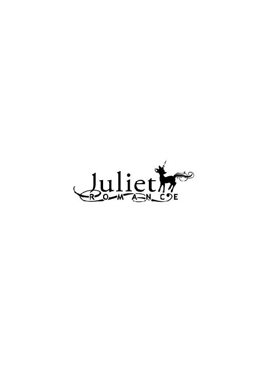

| 営業二課保育係 (ジュリエットロマンス) | |
| 川本明青 | |
| 株式会社パブリッシングリンク (2017) | |

営業二課保育係
川本明青
１ 最悪の上司
二週間ぶりの気持ちと欲求を、ベッドの中で思いっきり美香にぶつけたあと、俺は溶けるように眠りに落ちてしまっていた。夢も見ない、深い眠りだったが、激しい喉の渇きで目を覚ました。水が飲みたい、けれど起き上がるのは面倒、そんな葛藤の中で、ベッドサイドに置いていたスマホに手を伸ばし、目を細めて、バックライトで光る画面を確認すると、時刻は夜中の三時過ぎだった。半ば押し倒すようにして美香とベッドに入ったのは確か九時頃だったから、一時間くらいは〝そういうこと〟をしていたとして、残り五時間ほど寝ていたことになる。普段、あまり夜中に目が覚めたりはしないのだが、夕食に食べたシーフードピザがことのほかしょっぱかったせいかもしれない。
スマホを元に戻すと、目を閉じたままもぞもぞと寝返りを打った。隣には、ペタンとした虚しいシーツの感触しかない。ぼんやりと目を開ける。美香はいなかった。俺が眠っている間に帰ってしまったんだろうか。ゆっくりと体を起こし、寝ぼけた頭で、薄暗い部屋の中を見渡す。するとテーブルの上には美香のバッグが置いてあり、俺が脱がせた美香の服も、ベッドの横に落ちたままだった。ふと気づくと、扉の擦りガラスの向こうがかすかに明るい。俺のアパートは、部屋とキッチンが扉で仕切られているタイプで、その扉は真ん中に縦長の擦りガラスがはめ込まれたデザインのものだった。どうやら美香はキッチンにいるらしい。俺は干からびそうな喉を潤すことに決め、静かにベッドを降りた。
そっと扉を開けると、キャミソール姿で冷蔵庫の前に座り込んでスマホをいじっていた美香は、声にならない驚きをもって俺を見上げた。そして慌ててスマホを自分の胸に押し付けるようにして言った。
「驚かさないでよ。幽霊かと思ったじゃない」
「どっちがだよ。こんなとこで何やってんだよ」
「眠れなかったから、友達とラインやってた」
「こんな時間に？ 誰と？」
「あゆみだよ。透哉こそどうしたの？」
「なんかすっごい喉乾いちゃってさ。目覚めちゃった。お前喉乾かない？」
「そう？ どうかな......」
美香はそうでもないのか、ラインでのやり取りが気になるのか、スマホの画面に目を戻し、曖昧な返事を返した。
「ちょっとそこどいて。冷蔵庫開けるから」
俺は二リットルのミネラルウォーターのボトルを取り出し、直接口をつけてゴクゴクと喉に流し込んだ。
「明日仕事だろ？ まだ寝ないの？」
「もうすぐ寝る。先に寝てて」
美香はスマホから目を離さなかった。
二歳年下の美香とは、大学四年の夏にコンパで出会い、俺の方から積極的にアプローチして付き合い始めた。ぱっちりアイメイクに、茶髪のふんわりパーマ、細過ぎない体型に、ちょっと甘めの声色。まさに俺のタイプだった。
学生の頃はほぼ毎日のように会っていたが、俺が大学を、彼女が短大を同時に卒業し就職してからは、なかなか思うように会えなくなった。俺は基本的に土日祝日が休みだが、休日出勤もあるし、平日も時間通りにはまず帰れない。デパートで美容部員をしている美香とは、休みも勤務時間もバラバラなのだ。それでも、就職したての頃はどうにか時間を作って週二回くらいは会っていたが、最近は、週一回会うのさえままならない。仕事を覚えて出来ることが増えてくると、任されることも増える。明日も仕事かと思うと気持ちがげんなりするが、頭の中からそれを振り払って、美香がベッドに戻って来るのを待った。この腕にぎゅっと抱きしめてから眠りにつきたかったのだ。だが瞼を閉じると、睡魔は思ったよりも早く訪れた。それでもしばらくの間待っていたが、起きている間に、美香は戻っては来なかった。
俺は幼い頃から、巨大な建造物が好きだった。なぜ好きなのかと聞かれても分からない。理屈ではないから。図書館では、いつも建築関係の写真集を手に取るような子供だった。
中学生になって、ある程度自分で行動出来るようになると、ちょっと遠くまで、いろいろな建物を見に出かけるようになった。最初は自転車で行ける範囲、それからだんだんと、バスや電車で、もう少し遠くまで。人は、海だったり山だったり、あるいは公園だったり美術館だったり、それぞれお気に入りの癒しの場所があるものだが、俺にとってそれは、巨大なビルが絶好の位置で見える歩道橋の上だったりした。そしてそのうち、いつか自分も、大きなビルを建ててみたいと思うようになった。オーナーになりたいという意味ではなくて、建設に関わりたいということだ。だから高校受験の時は工業高校の建築科を希望したのだが、「工業高校は不良の集まり」という、母親の訳の分からない偏見によってそれは却下された。ただ、建築士になること自体を反対されたのではなく、建築士になりたいのなら大学に行って学べと言われたのだ。自分でも、どうやったら巨大なビルを建てる仕事が出来るのか調べてはいたし、そうなると目指すは一級建築士だから、将来は大学に行くつもりではいた。でも、それなら工業高校からだっていいと思っていたのだ。とにかく、少しでも早く建築のことを学びたかったから、普通科に行くのは遠回りのような気がしていた。だが、夢を否定されたわけでもなかったし、大学受験にはそっちの方が有利だという大人たちの言うことを素直に聞いて、俺は普通科に進学したのだった。そしてその後、無事に大学の建築学科に合格し、さらに、今の会社に入社出来たというわけだ。就職活動を始めた頃は、漠然と、いわゆるスーパーゼネコンへの就職を狙っていたが、そう思い通りにも行かなかった。しかし今の会社だって、世間的にも名の通った大企業だ。このご時世、こんな会社に入れたのは相当運がいいことだと自覚はしている。
「ねえ倉田君、この数字は何？ なんでこんなことになるの？ ありえないでしょう？」
問題は、配置された部署だ。
「確認って言葉知ってる？ よくこんなバカみたいな数字堂々と持って来れたわね」
滝沢也子という名の、人間の皮を被った鬼が俺を見上げている。
「どうしたらこんなふうに入力する数字を間違えられるの？ しかも二桁も」
なんで俺が営業なんだ。しかも、なんでこんな女が課長なんだ。
「だいたいどうして主任も係長も通してないの？」
「いなかったんで。でも向こうがだいたいの見積だけとりあえずファックスで送ってくれって言うんで」
課長の形相がますます厳しくなった。
「『先方がおおよその見積額を取り急ぎファックスで送ってほしいということでしたので』、でしょう？ まともな日本語も喋れないの!?」
俺は美香のふくらはぎを思い浮かべていた。ちょうど俺好みの、むしゃぶりつきたくなるような絶妙な形。いわゆる、現実逃避。
「とにかく、すぐにやり直して。すぐに！」
俺は課長から突き返された見積書を持って自分のデスクに戻った。そして美香のふくらはぎを頭の片隅に追いやると、どうにか意識を現実に引き戻してパソコンに向かった。
羽村建設株式会社建築営業部営業第二課。ここが俺の職場だ。建築に直接携わりたくて入ったのに、蓋を開けてみれば営業。しかも二課だ。営業一課が、一から新しく造る建物の担当なのに対して、二課は、リノベーションやコンバージョン、つまり、元々ある建物の再生や用途変更に関する営業なのだ。どっちが花形かと言えば一課の方に決まっている。けれどもし俺が営業一課だったところで、どの道やりたかった仕事でないことに変わりはない。ただ、課長があの女ではないというのは大きな魅力だ。あの若さで本社の課長なのだから相当のやり手なのだろうが、それにしても鬼だ。いや、そんなことを言ったら鬼に悪い。とにかく、人使いが荒い。気が強い。ズケズケとものを言う。だが言っていることはいちいち正論で言い返せない。きっと俺のような若手社員のことは人間とさえ思っていないのだろう。俺が仕事に対していまいちやる気になれないのは、その内容もさることながら、この女上司の存在にも原因がある。
七月に入り、南の方は梅雨明けしたというニュースを耳にするようになった。夏本番も近い。入社して三回目の夏だ。既に二年以上の歳月を営業の仕事に費やしてきたことになる。そしてこの先、それがいつまで続くのか分からない。これから好きな季節がやってくるというのに、意味のない虚しい時間を過ごしているようで、毎日やり切れないでいた。
朝、駅のホームでいつものように電車を待っていると、後ろから聞こえる会話に、耳が反応した。
「......沢課長、交通事故で入院したんだってな」
「そうそう。けっこう大きな事故だったらしいよ。全治二か月とか言ってたっけな」
俺は思わず勢いよく振り向いた。
「おう、倉田。おはよ」
所属は違うけれど、話をしていた二人のうち一人の方は顔見知りの先輩社員だった。
「滝沢課長が事故で入院したって本当ですか!?」
挨拶も返さずにそう切り出した。
「あ？ 違う違う。『柿沢』課長だよ。総務課の。お前んとこの『滝沢』課長じゃないから。そんなに心配すんなって」
違う。俺がしたのは心配じゃなくて期待だ。交通事故で、いっそのこと死んでくれれば......とまではさすがに言わない。あの女にだって、死んだら悲しむ家族がいるんだろう。でも、せめて二か月入院してくれればどんなに幸せか。人違いだと分かって、思わずため息を漏らした。
「よかったな。安心したな。美人課長が無事で」
先輩社員は茶化すように言って、やって来た電車の方に目を向けた。
違う。俺がしたのは安心じゃなくて落胆だ。期待した俺がバカだった。あの女は交通事故で入院したりしない。きっと、車の方が避けていく。
会社に着くと、いつもは俺よりも遅く来る課長が、すでにデスクに座って仕事を始めていた。俺は、改めてため息を吐いた。
「倉田、午後の会議の資料、頼むで」
昼前、俺は係長に言われた通り資料を人数分コピーして、会議室へ持って行った。あらかじめ各々の席にセッティングしておくためだ。会議室に入ろうとドアノブに手をかけると、中から話し声が聞こえた。滝沢課長の声だ。誰かと電話で話しているらしい。立ち聞きするつもりはなかったが、なんとなくその場にとどまっていた。
「名古屋!? 行っちゃうの？ いつ？ うそ、じゃあ私はどうなるの？ どうしたらいいの？」
焦った感じの口調でそんなことを言っている。ちょっと、驚いた。あの鬼課長が、そんな女みたいな弱気な発言をしていることに。
課長には、実は（物好きな）彼氏がいて、その彼氏が突然名古屋に行ってしまうことになった。どうしても離れがたい課長は、結婚して彼と一緒に名古屋に行くために会社を辞める......。
そんな妄想が頭を駆け抜けた。そうなってくれれば、心の底から祝福する。一日も早く、いや一刻も早く結婚するべきだ。今すぐにでも......。
「何してるの？」
頭の中で課長のウェディングドレス姿を想像して気色悪くなっていると、不意にドアが開いて、当人が顔を出した。
「もしかして聞いてたの？」
目の前で鬼が眉間にしわを寄せて俺を睨みつけている。
「聞いてません。今来た所です」
咄嗟に嘘を吐いた。でも、聞いたとしてもたいした内容じゃないじゃないか。分かったことは、相手が名古屋に行ってしまう、それで課長は困ってため息を吐いていた、それだけだ。俺が期待した通りにそいつと結婚して名古屋に行ってくれれば別だが、きっとそんなアンビリーバボーでミラクルなことは起こらない。だとしたら、ただのゴミみたいな会話だ。そんな顔して睨みつけられる覚えはない。なのに、課長は忌々しそうにため息を吐くと、俺を押しのけるようにして行ってしまった。
俺は、今朝の考えを改めた。いっそのこと、死んでくれてもかまわない。
午後の会議終わり、同じく出席していた同期の安土に声をかけられた。
「どうよ。営業の方は？」
安土の所属は設計第二課だ。設計にも一課と二課とあって、営業と同じく、二課はリノベーションやコンバージョンの担当だ。とは言え設計は設計だ。俺の仕事とは違う。
「どうもこうもないよ。お前はいいよな。設計の仕事が出来て」
「でもお前んとこの課長美人だからいいじゃん。羨ましいよ」
「だったら俺と代わってくれ。是非に。今すぐにでも」
「残念だが俺に人事権はない」
「あーあ。俺もいつかは一級建築士の資格取って、設計一課ででっかい仕事したいなあ。夏目課長とかすげえかっこいいじゃん。あんな人の下で働きたいよ」
話をしたことはないが、設計一課の夏目課長は、いかにも仕事の出来るクールな大人の男、といった感じの人だ。実際、大きなコンペにいくつも勝ってきているらしい。体も鍛えているのか、四十過ぎているのに全くたるんだりしておらず、いつも高そうなスーツをさらりと着こなしている。俺も将来あんな風になれたらいいなと思う。
「でもお前んとこの滝沢課長、そう遠くないうちに一課の課長になるだろうって言われてるよな。そしてやがては建築営業部長か？ すごいよな。この男ばっかりの建設業界でさ。しかも美人だしあの若さだよ。歳、いくつなんだ？」
「知るかよ。五百歳くらいじゃないの？」
「若く見えるけど、いくらなんでも課長なんだから、三十五はいってんのかな。いってても全然いけるけど」
「お前マジで言ってんの？ 三十五とか未知の領域だよ。俺には考えられない」
「俺は若いだけで中身のないパッパラパー女の方が考えられない。自立した大人の女の方が断然魅力的だと思う」
「って言うかお前の趣味とかどうでもいいけどさ、俺、歳云々より、まずあの女だけは絶対無理」
俺のように毎日顔を会わせて罵られ続けたら、安土だって冗談でも「羨ましい」なんて言えなくなるだろう。本当に、代われるもんなら代わってもらいたいものだと心底思った。
週末、俺はちゃんと休みだったが、美香は仕事だった。その週は、土曜日の勤務が八時までで、日曜は十一時からということだったから、土曜の夜は一緒に過ごせると思っていたのに、用事があって会えないと言われた。ここのところしょっちゅうだ。しょうがないので、適当にテレビを見たり漫画を読んだりしてだらだらと過ごした。久しぶりに、部屋にたくさんある建物の写真集を一冊手に取りパラパラとめくってみたが、昔みたいにワクワクする気持ちよりも虚しさが込み上げてきて、すぐにそれを元に戻した。
時間もあることだし、久しぶりに料理でもしてみようかと思い立ち、買い物に出た。料理と言っても本格的なものではなく、あるものを適当に炒めたりするくらいのものだったが、学生の頃は金もなかったし、わりと自炊していた方だ。けれど働き出してからは夜も遅いことが多いので、ほとんどファストフードやコンビニ弁当の生活だ。たまに勢いで野菜を買ったりすることもあるけれど、たいてい冷蔵庫の奥で腐ってしまっている。
ついでに日用品などもまとめ買いしておこうと思い、近所のスーパーではなく、品揃えが豊富で値段も安い大型スーパーまで足を延ばした。
カゴを片手に、店内を見て回る。こういうの、わりと嫌いじゃないなと思う。掃除はたまにしかしないが、洗濯もそんなに苦じゃないし、俺ってもしかしたら主夫に向いてるかも、などと考えていたら、通路の少し先で、「きゃっ」と小さく叫ぶ声がした。シャンプーの商品棚からそちらに目を移すと、積み上げられていた赤ちゃん用のおむつが床に散らばっていた。積み方が甘かったせいで荷崩れを起こしたのだろう。俺は近寄って行って、ベビーカー連れの母親と一緒に商品の紙おむつを拾い始めた。
「どうもすみませ......」
そう言って顔を上げた母親と目が合った瞬間、驚いて思わず手を止めた。相手も絶句して動きを止めている。なぜか咄嗟に、マズい、と思ってしまう。
ベビーカーの中を覗くと、女の子だろうか、目のパッチリした色白の赤ちゃんが、ニコニコしながら俺を見ている。
母親は、なんと滝沢課長だった。いや正確には、〝母親だと思ったのは〟、滝沢課長だった。だって俺は入社してから二年以上、見たくもないあの女の顔を毎日見てきたのだ。ということはつまり、課長が赤ちゃんの母親であることはありえない。
普段はコンタクトなのか、課長が眼鏡をかけているのを初めて見た。ブルー系の細いストライプ柄のシャツにジーンズ、足元はぺたんこの靴というカジュアルな出で立ちも、さらりとすれ違っただけなら気づかないかもしれないほど、会社での課長とは印象が違う。
「知り合いの、子どもを、ちょっと、預かることになって......」
しばらくの沈黙の後、聞いてもいないのに、たどたどしい口調で課長が言った。誘拐でもしていない限り、それ以外にないだろう。
「今日は、買い物？」
「はあ」
「一人で？」
「まあ」
「家は、この辺なの？」
「いえ」
課長は何かをごまかそうとでもするように、今まで一度だってしたことのない〝全く興味などない当たり障りのない会話〟を早口でしかけてくる。だが、当然続かない。普通なら、「どなたのお子さんなんですか？」とか、「かわいいですね。女の子ですか？」とか、多少なりとも会話のやり取りもあるだろう。けれど俺としてはなぜか見てはいけないものを見てしまったような気がしていたし、向こうは向こうで、俺と出くわしてしまったことでかなり動揺しているようだ。それに残念ながら、プライベートで偶然会ったからといって、にこやかに社交辞令の一つも言えるような間柄ではない。向こうは俺のことを人間と思っていないし、こっちはこっちで、交通事故かなんかで死ねばいいと思っているのだから。
途中で立ち去るわけにもいかず、俺は最後まで課長と一緒に黙って散らばった商品を元の通りに戻した。
「じゃあ、これで......」
「ああ......ありがとう......」
気まずい空気の中で、ぎこちない挨拶を交わして別れた。
その後すぐ俺はそのスーパーを出た。まだ何も買っていなかったけれど、店内をぐるぐる回ってまた課長と顔を会わせるのが嫌だったからだ。せっかく少し遠くまで足を延ばしたのに、ただの無駄足だった。いや、気持ち的にはむしろ大幅なマイナスだ。結局帰りにいつもの家の近所のスーパーに寄って、適当に食材を買い込んだ。
その夜、一人キッチンに立ちながら、あのかわいらしい赤ちゃんが無事に親元に帰れますようにと、心の中で願っていた。
週明け、係長と一緒に取引先を訪ねた。その会社が保有しているオフィスビルの一つを、マンションに作り替えるのだ。最近はこの付近にオフィスビルが増え、いわゆる供給過多状態で空室が目立っているのだという。
「滝沢さんはお元気ですか？」
恰幅のいい五十代半ばと思われる先方の担当者の男性は、挨拶もそこそこに課長の名前を口にした。
「はい。滝沢もよろしくと申しておりました。近いうちにご挨拶に伺いたいと」
「そうですかそうですか。私もぜひ久しぶりにお顔を拝見したいなあ。でもお忙しいんでしょうねえ。課長さんじゃ」
担当者は頬を緩め、目の前のお茶に手を伸ばした。
「滝沢さんと初めてお会いしたのはもう十年くらい前になりますかねえ。キレイな子でしたけど、失礼な話、最初はこんな小娘に何が出来るんだってバカにしてたもんですよ。だけど、あの人は本当に一生懸命やってくれましてねえ。御社とうちの間に立って、と言うかお宅の営業なのに、どっちかと言うとうちの味方みたいにして御社の設計にいろいろと掛け合ってくれてねえ。すごい人ですよ。現場にも頻繁に顔出して、ヘルメット姿も似合ってたなあ。昔は也ちゃん、なんて気安く呼んでたもんですが、今はもうそんな呼び方出来ませんね。偉くなっちゃって」
それからも担当者の昔話はしばらく続き、ようやく本題に入ったのは十五分以上たってからだった。
取引先を出ると、「どっかで冷コーでも飲んでいくか」と係長に誘われ、俺たちはコーヒーショップに入った。大阪出身の係長は、アイスコーヒーのことを冷コーと呼ぶ。
「あの担当者、滝沢課長のこと相当気に入ってるみたいですね」
席に座り、俺はタンブラーから突き出ているストローをくわえた。
「あの会社とのパイプ作ったの滝沢課長やからな。おかげで今もこうして仕事があるっちゅうわけやけど」
「滝沢課長って、けっこう美人だとかキレイだとか言う人いるけど、そうですかね？」
「まあ、一般的にはそうなんちゃう？」
「俺には鬼にしか見えないんですけど」
「まあ可愛げはないわな。鼻っ柱強いし。でも基本あの人は、いい加減なことやら間違ったことは言うてないんよな」
それに関しては、悔しいが何も言えない。
「でも、ひどい事ばっかり言われてる気がするんですけど。特に俺。個人的に嫌われてるとしか思えない」
「確かに要求は厳しい。あの若さで課長になる人と俺たちとを同じ次元で考えてもろたら困るっちゅうことは往々にしてある」
係長のことは嫌いではないが、俺たち、と一括りにされるのはなぜかちょっと心外だ。
「滝沢課長って歳いくつなんですか？」
「確か、三十三やなかったかな。今年四」
ということは、俺より九歳年上だ。あの女が課長に昇進したのは俺が入社した年だから、今年三十四なら、三十二になる年に課長になったということだ。同じことが俺に出来るかと言えば、まず無理だろう。いや、無理なのが普通なのだ。
「けど時代も変わったよなあ。あんな若いお姉ちゃんが本社の課長やなんてな。俺が若い頃なんてそんなん考えられんかったわ。それにあれや。男が育児休暇取ったりとかもな」
うちの会社は、女性社員はもちろん男性社員の育児休暇の取得を積極的に推奨していて、実際、俺の上司である平内主任も取得した一人だ。昨年娘が生まれたのだが、最初の一年は奥さんが育児休暇を取り、奥さんが自分の職場に復帰してからは、代わって平内主任が休暇を取ることになった。休暇と言っても、平内主任のケースは正式には部分休業という言い方をするらしいのだが、まとめて何日とか何カ月とか休むのではなくて、週のうち三日は夕方の四時になったら帰るのだ。奥さんと交代で娘の面倒を見ているらしい。今日は何かの予防接種に連れていくとかで朝から休みを取っている。会社としては、多分イメージ戦略的な意味合いもあり、特に男性社員の育児休暇の実績を欲しがっているようにも思えるけれど、まだまだ取得者は多くない。
「男の育児休暇って、どうなんですかね」
「どうって、ええんちゃうか？ お前もいつか子供出来たら、どんどん育休取ったらええやん。育児は参加した方がええで。俺んとこはもう子供二人とも大学生やけど、いくら働いて稼いで帰っても、いっつもそばにおって面倒見てくれたお母ちゃんには太刀打ち出来んねん。嫁は嫁で、あんたは子育て何にもしてくれんかったっていつまでも言いよるしな」
別に、男が育児休暇を取ることが悪いとは思わないが、傍から見ていて、あまりかっこいいとも思わない。男は外で働き、女は家を守る、なんていう化石みたいな思想の持ち主では決してないけれど、俺が憧れるのは、やはりバリバリと仕事に打ち込む男の姿だ。
「そう言えばうちの課長、設計一課の夏目課長とデキてるいう噂やん？」
社内では有名な話だ。ふと、数日前、会議室で課長が電話で話していたのを思い出した。
「夏目課長って、もしかして名古屋に転勤になるっていう話とかないですよね？」
「名古屋？ ないやろ。なんで？」
「ああ、いえ」
ならば、あの日の課長の電話の相手は誰だったんだろう。
係長がストローをズズズと鳴らした。
「でな、俺実際に見かけてん。夏目課長と滝沢課長が一緒にタクシーに乗り込むとこ。まあ今となってはどっちも独身なんやし何も問題ないんやけど、一昨年夏目課長が離婚したのは滝沢課長が原因やっていう話もあるしな。略奪愛の行方が気になるとこやな」
実は俺も見かけたことがある。夏目課長が滝沢課長をそっとエスコートするようにして、俺には縁のないような高そうなレストランに入っていくところを。夏目課長のその時のさりげない仕草がとてもかっこよかったのを覚えている。なんで、俺の憧れの夏目課長の相手があの課長なんだろう。正直もったいないと、俺は思っていた。
数日後、二時過ぎに俺が外回りから戻ると、営業二課の手前の廊下で、滝沢課長が何やら電話をしていた。いつもはデカい声ではっきり喋る課長が、壁の方を向いて小声で話している。こんな所でこんな話し方をしているということは、明らかに仕事ではなくプライベートの電話だ。課長がこちらの気配に気づいてちらっと顔を向けたが、俺の存在など眼中にないとばかりにすぐそっぽを向いた。が、その後すぐにまた俺に視線を戻した。課長は俺の方を向いたまま電話で話を続けている。課長が俺のことをじっと見るのは小言を言いながら睨みつける時だけだ。嫌な予感がしたが、気づかないふりをして傍を通り過ぎようとした。と、その時、課長にいきなり腕を掴まれた。俺は驚いて立ち止まった。
「はい。では、そのようによろしくお願いします」
課長はそう言って電話を切ると、俺の腕を掴んだまま言った。
「今から急いで行ってほしい現場があるの。もう三回も電話もらってるんだけど、私どうしても外せない会議があるのよ。住所のメモ渡すから」
一方的にそれだけ言うと、さっさと自分だけ先に行ってしまった。何事か分からないけれど、俺も後に続いて課に戻ろうとすると、「あなたはそこで待ってて」と止められた。
その日は朝からバタバタしていて、昼飯もまだだった。せめてコンビニで買ってきたサンドイッチだけでも食べさせてほしいのに、鬼課長はデスクに戻ることすら許さない。それにしても、課長自身が三回も電話をもらっているのに、代わりに俺みたいなペーペーが行って済むような現場ってどこだろう。行ったところで問題の解決になるのだろうか。
ほんの一分もたたないうちに、営業二課のドアから、メモを持った課長が出て来た。
「ここよ。今からすぐに行って。タクシー使っていいから」
課長は俺にメモを渡し、くるりと踵を返した。
「あっ、ちょっ、課長、全く内容が分からないんですけど」
「説明してる時間ないの。とにかく行けば分かるから」
課長は振り返りもせずにそう言うと、またドアの向こうに消えた。
仕方なく、俺は今降りてきたばかりのエレベーターにまた乗った。減っていく階数表示を見ながら、絶対いつかあんな課長の下から出て設計に行くんだ、俺は大きなビルの図面を引くんだ、と、心の中で呪文のように唱えていた。
「ここに行きたいんですけど」
会社を出てタクシーをつかまえると、課長に手渡されたメモを運転手に見せた。メモには、「しらゆり保育園」の文字と、住所と電話番号が記されていた。運転手は、「ま、はっきりとは分からないけど、近くまで行ってみましょう」と言うと、車を発進させた。
運転手に断わって、タクシーの中で、持っていたサンドイッチをコーヒーで流し込んだ。
二十分ちょっと走ると、場所が分かりやすかったこともあって、目的地にはわりとすんなりと着いた。俺は領収書をもらってタクシーを降りた。
しらゆり保育園。
門の前に立ち、とりあえず中を窺う。建物の中から小さい子供たちの声が聞こえる。ここが現場？ 課長は行けば分かると言っていたが、まるで見当もつかない。とにかく中に入ってみないことには始まらないので、背の高い、黄緑色のペンキが塗られた格子状の門扉を開けようとしたが開かなかった。ふと見ると、門柱には、暗証番号を入力するテンキーが設置してある。セキュリティー上の問題で、誰でも勝手には入れないようになっているらしい。俺はインターホンのボタンを押した。
「はい」
「あの、羽村建設の倉田と申します。滝沢からこちらへ伺うようにと言われて来たんですが」
「ああ、嵩登くんの」
「はい？」
「今開けますので」
なんだかよく分からないけれど、解錠の音がしたので、俺は門扉を押して中に入った。
「こちらへどうぞ」
玄関ではなく、園庭に面した部屋から、ピンク色のエプロンをした保育士の女性が手招きをしている。呼ばれるままに近づいて行くと、部屋の中では様々な年齢のガキんちょが思い思いに遊んでいた。その中で、三歳くらいだろうか、一人の女の子が俺に近寄って来た。
「たかとくんのパパぁ？ おむかえにきたのぉ？ たかとくんおねつだよぉ」
言っている言葉の意味が全然分からなかったので無視していると、さっき手招きしていた保育士が、部屋の奥から赤ちゃんを抱いて出て来た。
「さっき計ったらまた少し上がっちゃってて、三十八度六分でした。ずっとぐずってたんですけど、今眠ったところなんですよ。本当はご家族以外の方にはお引き渡ししないんですけど、滝沢さんから連絡いただいてますし、お怪我やご病気されたお子さんは、預かれないことになってるので。じゃあ、よろしくお願いします」
そう言うと保育士は抱いていた赤ちゃんを俺の方に差し出した。俺は右手に外回り用の鞄を持ったまま、条件反射的に赤ちゃんを抱っこした。
が、待て。
「あの！ え？ 何ですか!?」
「はい？」
「いや、あの、俺、滝沢課長からこちらに行くようにと言われて......」
「倉田さん、ですよね？ 滝沢さんから、倉田さんと言う若い男性の方が迎えにみえるから、引き渡してほしいと言われてます。これ、嵩登くんの荷物です」
保育士は更に、俺に大きめのショルダーバッグを差し出した。
「ちょっと待ってください。俺がこの子連れて帰るんですか？」
「違うんですか？」
その瞬間俺は悟った。課長がさっき会社の廊下でこそこそ電話していたのはこのことだったのだ。たまたま通りかかった俺を見て、現場と騙して迎えに行かせる犯行を思い付いたに違いない。メラメラと怒りが沸いてきた。あんまりじゃないか。だがこれは業務命令ではない。拒否してもいいはずだ。第一この子が誰なのかも分からない。何日か前、偶然大型スーパーで出くわした時連れていた赤ちゃんがこの子だったのだろうか。赤ちゃんの顔なんてみんな同じように見えるから、同じ子かどうかも分からない。
どうしよう。どうしたらいい......。どうしたら......。
刹那の間に頭の中でぐるぐると考えてはみたけれど、結局一つだけ確かなことは、この子を連れて帰らなかったら、俺はひどい目に遭うということだ。たとえ俺に、全く非がなくとも......。
俺はショルダーバッグを斜め掛けするために、一旦赤ちゃんを保育士に抱いてもらった。この隙に逃げ出してしまおうか。そんな思いが脳裏をかすめたが、それを実行に移す決断力も実行力も持ち合わせてはいなかった。
何の落ち度もない保育士にさえ怒りを感じていた俺は、くそ暑い中、スーツの上にショルダーバッグを斜めに掛け、右手に営業鞄を持ち、胸にはぎこちなく見ず知らずの赤ちゃんを抱いて、黙ったままぞんざいな会釈だけをしてその場を後にした。
が、待て。
保育園の門を出て、俺は改めて愕然とした。
連れて帰る？
どこに？
勢いで預かってしまったものの、考えてみれば赤ちゃんを連れて会社に戻るわけにはいかない。しかもこの子は高熱を出している。これからどうしたらいいというのだ。怒りとか焦りとか困惑とかが入り混じり、頭の中が混乱して全く思考が前進しない。とにかく、赤ちゃんに直射日光が当たるのを避けるために、俺は日陰を探して一旦避難した。
赤ちゃんを左手で抱いたまま、右手に持っていた鞄を下に置き、スーツのポケットから携帯を取り出す。俺は下唇を噛みながら、課長の携帯を鳴らした。
あまりに無責任ではないだろうか。病気の赤ちゃんを、子育ての知識も経験もない若造によくあずけられたものだ。はっきり言って保護者失格としか言いようがない。
何度コールしても、課長が電話に出ることはなかった。あの時言っていた「外せない会議」の最中なのだろうか。俺は眉間にしわを寄せ、大きくため息を吐いた。と同時に、胸の辺りで不穏な気配を感じた。見ると、今まで眠っていた赤ちゃんが顔をしかめて、今にも泣き出しそうにしている。やめろ！ という俺の内なる叫びと同時に、赤ちゃんは大きな声で泣き出した。泣きたいのはこっちだ。あの女、絶対呪ってやる。そう決意を新たにしたところで、ふと、実家の母親の顔が浮かんだ。そうだ。おふくろは俺と弟を産んで育てたのだ。こういう時どうすればいいかぐらい分かるだろう。俺はすぐに電話をかけた。
〈もしもし？〉
「オレオレ。あのさ、赤ちゃんが熱出して困ってるんだよ。どうしたらいい？」
〈はあ？〉
「はあ、じゃなくて。三十九度近い熱があんの。今抱いてるんだけど、体もすごく熱い」
〈抱いてるって、あなたの赤ちゃん？〉
「そんなわけないだろ！ 訳わかんないけど預かる羽目になっちゃって」
〈そうなの？ 新手のオレオレ詐欺かと思った〉
「何言ってんのもう。マジでこの子どうしたらいいんだよ。助けてよ」
〈そんなこと言ったって......〉
おふくろには事の重大さが伝わっていないようだ。
「だから、どうしたらいいのか教えてって言ってんの！」
〈そんなに怒らないでよ。赤ちゃんが熱出すのなんてしょっちゅうよ。あなたも小さい頃よく......〉
「俺のことはいいから！ とにかくどうしたらいいんだよ！」
〈どうしたらって、じゃあ病院連れて行ったら？〉
「病院？ 産婦人科？」
〈バカねえ小児科よ。親御さんに聞いてみたら？ かかりつけの病院があるんじゃない？〉
俺は「分かった」とだけ言って電話を切った。だが、この子のかかりつけの病院を尋ねる相手は存在しない。どういう訳か保護者であるはずの滝沢課長は電話にも出ないのだ。赤ちゃんの泣きじゃくる声に急き立てられるように、俺は歩き出した。
汗をかきながら、交通量のある通りまで出てタクシーを拾った。
「この近くに小児科ありませんか？」
乗り込みながら運転手に聞いた。
「ああ、ありますよ。ほんの二、三分のところに。そこでいいですか？」
「どこでもいいです。お願いします」
運転しながら、ルームミラー越しにこちらを見ながら運転手が話しかけてきた。
「ずいぶん泣いてますねえ。お客さんの子？ 若いのに大変だねえ。何、奥さんは仕事抜けられなかったの？ でも最近の男はちゃんと子供の面倒見るから偉いよねえ」
俺は答えずに、顔を真っ赤にして泣きじゃくる赤ちゃんの顔を、イライラしながら見下ろしていた。
小児科へはすぐに着いた。自分もこんなふうに病院に連れて来られていたことがあったのだろうが、自分が誰かを連れて来るのはもちろん初めてだ。少し緊張しながら中に入った。
受付カウンターの横にベビーベッドが置いてある。とにかく一度赤ちゃんを下ろしたくて、まっすぐベッドに向かった。何キロあるのか分からないが、ずっと抱いていると重くてしょうがない。
「こんにちは。こちらで受付なさってください」
ベッドに赤ちゃんを寝かすと同時に、受付の人に声をかけられた。視線はベッドの上の赤ちゃんに置いたまま、そうっと二、三歩横にずれて、俺はカウンターの前に立った。
「こちらは初めてですか？」
「はい」
「ではこちらにお名前を書かれて、保険証と乳幼児医療者証と母子手帳を出してください」
病院に行くときは保険証が必要なことぐらい分かっていたが、すっかり頭から飛んでいた。でも乳幼児なんたらってなんだ？ 母子手帳？ もしかしてそれがないと診察を受けられないのだろうか。
「あの......今日何にも持ってないんです。急だったので。でも、高熱が出ていて」
俺はちらっとベビーベッドの方を見た。
「そうですか。では、一旦全額自己負担ということになりますがよろしいですか？」
「はい。お願いします」
ここまで来たらしょうがないと、腹をくくった。赤ちゃんの診察代がいったいどれくらいかかるのか見当もつかないが、昨日お金をおろしたばっかりなので財布には何万か入っている。それにこれはちゃんと後で課長に請求するつもりだ。
「では、こちらにお名前をお願いします」
受付の人はカウンターの上の表を指差した。俺は言われたとおりにペンを取り、名前を書こうとして手を止めた。
「名前......って、この子の名前、ですか？」
「そうですよ。お子さんのお名前です」
そう言えば、俺はこの子の名前を知らない。どうすればいい。泣くのにも疲れてぐったりしてきているようにも見えるあの子を、早く医者に診せたいのに。その時、ぱっと思い出した言葉があった。
（たかとくんのぱぱぁ？ おむかえにきたのぉ？）
そうだ！ たかとだ！ だが、それしか分からない。どんな字を書くのかも。
「あの、フルネームじゃないとダメですか？」
「はい？」
受付の人は不思議そうに俺を見ている。ここで一から事情を説明してもちゃんと納得してもらえるか分からないし、どっちにしろ名前くらいは必要だろう。俺は思いついて、保育園で渡されたショルダーバッグを開けた。中に、何か名前の分かりそうなものが入っていないか探すためだ。メインのファスナーを開けても、おむつと着替えと哺乳瓶しか見当たらなかったが、前についているポケットのファスナーを開けると、帳面みたいなものが入っていた。かわいらしい動物のイラストが載った「連絡帳」だった。そして下の方に名前が書いてある。
滝沢嵩登？
名字が課長と同じだ。どういうことだろう。だが考えている暇はない。とにかく、受付の用紙に名前を書くことは出来た。
これで診察が受けられると思ったのに、今度は「こちらに症状を記入してください」と用紙を差し出された。症状もへったくれもあるもんか。熱が出ていること以外俺には何にも分からない。おまけにその用紙には、誕生日や住所や電話番号まで書く欄がある。どうしようもないので、住所と電話番号は自分のを書き、生年月日は「急に知人に頼まれて連れて来たので分からない」と正直に言った。受付の人は微妙な顔をしていたが、それ以上何も言わなかった。
ああこれでやっと、と思ったら、今度は「お熱計ってください」と言って体温計を渡された。
「赤ちゃんの熱って、どうやって計ればいいんですか？」
俺の方が熱を出しそうになりながら尋ねた。だって、あんなに小さくてふにゃふにゃした生き物なのに、大人と同じように計れるものなんだろうか。
「脇の下に挟んで計ってください」
受付の人はさらりと事務的に言った。
「だからどうやって」
多少イラついた口調で更に聞き返す。受付の人は、今度は怪訝そうな顔で言った。
「お膝の上に抱っこされて、脇の下に挟んであげたらいいんじゃないですか？ ピピっと音がするまで抑えていてあげてください」
俺はそれ以上何も言わずに、体温計を持ってベビーベッドに寝かしていた赤ちゃん......嵩登を抱き上げた。
待合室のソファに座り、嵩登の脇の下に体温計を挟もうと格闘していると、隣に座っていた若い母親が、「やってあげましょうか？」と言って手を差し伸べてくれた。彼女が、まるで女神のように見えた。
その女神が慣れた手つきで嵩登を抱っこして熱を測ってくれている間、俺と、彼女にぴったりと寄り添って座っている小さな女の子は、両側から嵩登の顔を覗き込んでいた。
そうか。この子は男の子なんだなあと、今さら思う。課長にハメられたと知った瞬間から、そんなことに気づく余裕さえ失っていたのだ。診察はこれからだというのに、俺はすでに疲れ切っていた。
何人か順番待ちをしてやっと診てもらい、隣の薬局で薬をもらった。だが、戦いはこれで終わったわけではない。問題はむしろこれからだ。俺はなんだか、嵩登と二人、知らない世界に放り出されたような気分になった。行くあてもない。医者が、脱水症状を起こすといけないから水分補給をこまめにしてあげなさいと言っていたけれど、どうやって飲ませればいいのかも分からない。薬局でついでに聞いてみると、そこで売られていた赤ちゃん用のスポーツドリンクみたいなものを飲ませてあげるといいと教えてくれた。瓶のふたを取ると、そのまま乳首（え!? と思ったが、哺乳瓶の吸い口のことをそう呼ぶらしい）を付けられるようになっていて、直接飲ませられるのだそうだ。この暑さの中、保育園を出てから嵩登は何も飲んでいない。医者に言われてからずっとヒヤヒヤしていたので、薬局の人に頼んで、待合のソファの隅で少し休ませてもらうことにした。
薬局にもベビーベッドが置いてあったので嵩登をそこに寝かし、ショルダーバッグから哺乳瓶を取り出すと、薬の支払いの時に一緒に買ったドリンクのふたを取り、言われたとおりに乳首に付け替えた。なるほどぴったりだ。ソファに座り、膝の上に嵩登を抱いて瓶の先を口に近づける。すると嵩登はその小さな口で、力いっぱい吸いだした。よっぽど喉が渇いていたのだろう。その吸いっぷりは、感動的でもあった。暑いし重いしぎゃあぎゃあうるさいしでイライラしていたことも忘れ、これで脱水を免れたという安堵と、こんなにまで我慢させていたという罪悪感とが俺を襲った。が、すぐに、これも全てあの女のせいだと思い直した。俺も嵩登も立場は違えど、同じくあの女の被害者なのだ。被害者の会でも結成しようか。だとしたら俺はプラチナ会員だ。あの女、いつか絶対にバチが当たる。
薬局でタクシーを呼んでもらい、自分のアパートに向かった。課長から連絡はないし、もう一度電話してみたものの、やはり応答はない。熱を出した赤ちゃんを抱えて、もうそれ以外に避難できる所は考えられなかった。
アパート二階の部屋の前で、危なっかしく片手で嵩登を抱きながら鍵をまさぐっていると、ちょうど隣の部屋のドアが開いて若い男が出て来た。何度か顔を合わせたことがあるくらいで言葉を交わしたことはないが、その見た目から、おそらくホストか何かなのではないかと思っている。若い男は自分の部屋のドアに鍵をかけながらちらっとこちらを見遣ると、「お隣さん子供とかいたの？」と馴れ馴れしく声をかけてきた。そして、「危ないよ。赤ちゃん落っことしそうじゃん。抱いといてあげるよ」と言って、俺から嵩登を抱き取った。男は、俺が鍵を探し、取り出してドアに差し込む間も、「かわいいなあお前。ばあ～」とか言って嵩登をあやしてくれている。ぐったりしていた嵩登が、少し笑った。
ドアを開け、「ありがとうございました」と言って俺が両手を出すと、「じゃあな～お前。ばいば～い」と嵩登に言って、俺に返した。あんな見た目だけれど、子供好きなんだなと思った。病院で嵩登の熱を計るのを手伝ってくれた女神様といい、鍵を開ける間嵩登を抱いていてくれたホスト君といい、他人のほんのちょっとの親切が、今の俺にはものすごく身に染みた。世間には鬼もいれば、いい人だってたくさんいるものだ。
部屋に入ると自分のベッドの上に嵩登を寝かせ、すぐにエアコンをつけた。そしてとりあえず、着ていたものを全部脱いだ。パンツまで汗でびっしょりになっていたからだ。だが嵩登を置いてシャワーを浴びにいくわけにはいかないので、汗を拭いただけで、着替えをした。それだけでかなりさっぱりした。俺はそれでいいとして、嵩登も汗びっしょりになっている。やはり赤ちゃんだって気持ち悪いだろう。バッグの中に着替えが入っていたから、着替えさせた方がいいのだろうか。でも着替えさせる途中で、腕や脚を変な方向に曲げてしまったらどうしよう。引っ張りすぎて、関節が抜けてしまったらどうしよう。そんな不安もあったけれど、ほっとくのもかわいそうなので、恐る恐る、背中に手を当てて体を浮かしたり傾けたりしながら嵩登の服を脱がせた。女の服なら喜んで脱がせるが、赤ちゃんの服は難しい。たかが着替えに、けっこうな時間がかかってしまった。
涼しい所でさらさらの服を着せてもらって気持ちよくなったのか、それとも高熱でこれ以上起きている気力を失ったのか、嵩登は眠り始めた。バスタオルを一枚折りたたんで、ふとん代わりに掛けてやった。
お前、いったい誰なんだ......。
少しの間嵩登の寝顔を見ていたが、俺も強烈な疲れを感じて、ベッド脇の床の上に転がった。
電話の鳴る音で目を覚ました俺は、なんで自分の家の床の上で寝ているのか、今が朝なのか夜なのかもすぐには分からなかった。とりあえず電話に出ると、聞こえてきたのは課長の声だった。
〈倉田君？ 今どこにいるの？〉
咄嗟に、マズい、と思った。何が、というわけではなくて、これはもう条件反射だ。課長の声を聞くと、怒られる！ と思ってしまう。だが何だろう。何か違う気がする......。そして、はっと思いついてベッドの上を見た。嵩登はすやすやと眠っている。状況を思い出すと同時に、電話の向こうの相手に対する怒りが急速に込み上げてきた。
〈今やっと電話出来るようになって。どこなの？〉
どこなの？ じゃねえよ！
怒鳴りそうになったが、それをぐっとこらえて低い声で答えた。
「俺のアパートです」
〈あなたのアパート？ 嵩登も一緒に？〉
「はい」
〈これからすぐに行くわ。場所は？〉
住所を伝えると、向こうは勝手に電話を切った。
時刻を確かめると、六時を回っていた。今からあの女がここに来る。俺は殴りかからずにいられるだろうか。
三十分後、チャイムが鳴った。のぞき窓から覗くと、人間の皮を被った鬼が立っていた。
「嵩登は？」
ドアを開けるなり、課長はそう言った。まずもっと先に俺に言うことがあるだろ！ と思ったが、またぐっとこらえて中に招き入れた。
課長は俺のベッドのそばへ行くと、寝ている嵩登の顔を覗き込み、頬にそっと手を触れた。
「一応病院に連れて行きました。医者は、今小さい子の間で流行っている夏風邪だって言ってました。薬をもらったんで、そのバッグの前のポケットに入れてあります」
苛立ちを抑えながら、課長の背中にそう話しかけた。
「おむつがパンパン」
課長は俺の話には答えず、嵩登の股間のあたりに手を置いて言った。そして、件のショルダーバッグの中から新しい紙おむつを取り出すと、おむつ替えを始めた。服は着替えさせたが、おむつは一度も替えていない。そこまで頭が回らなかった。だいたい、おむつってどのタイミングでどうやって替えればいいのか分かりもしない。
今までつけていたおむつを外すと、こもったおしっこのにおいがした。嵩登には、かわいらしい、小っちゃなおちんちんがついていた。俺も赤ん坊の頃はこんなだったんだろうか。そんなことを思いながら、後ろに立って見ていた。
「病院代、全額払ったんでしょう？ いくら？」
俺はスーツの胸ポケットに入れていたはずの領収証を探した。だが、ハンガーにかけたスーツのポケットにそれは見当たらなかった。他のポケットやズボンのポケットにも入っていない。
「もういいわ。足りなかったらまた言って」
営業鞄の中を探そうとしていた俺を制止して、課長は一万円札を二枚、ベッドの上に置いた。
「そんなにかかってません」
「タクシーも使ったんでしょ？」
小児科の診察代が七千円ちょっとで、薬局だのタクシー代だのを合わせても二万はいかない。
「それでもそんなには......」
「これ、捨てといてくれる？」
床の上の、くるくると丸められた紙おむつを指してそう言うと、課長はそっと嵩登を抱き上げた。
「私が急な用事を頼んだから、あなたは現場から直帰するって係長には言っといたわ」
そして「このことは絶対に口外しないで」と念を押してから、部屋を出て行った。
言いたいことは山ほどあるのに、結局何も言えなかった。立て替えた分よりも多い金額を置いて行ったのは、チップのつもりなのだろうか。それとも口止め料か。俺はあんな大変な思いをしたのに、それで済むと思っているのだろうか。金額のことを言っているのではない。何の説明もしてもらえなかった上に、あの女は、俺に対して一言も「ごめんなさい」も「ありがとう」も言っていないのだ。いくら仕事が出来たところで、人として最低だ。
俺は心に誓った。絶対に営業二課を出る。建築設計なんて贅沢は言わない。なんなら、畑違いの土木でもいい。お門違いの総務や経理だっていい。異動先はどこだってかまわない。あの女と、離れられるものなら。
２ 取 引
俺は絶対に営業二課を出る────。
そんな誓いを百回立てたところで、朝目覚めたら異動していた、なんて奇跡が起こるはずもなく、また昨日と同じ、憂いに満ちた一日が始まる。だが、嵩登を迎えに行った翌日は、いつもと違っていた。なんと課長が会社を休んだのだ。体調不良で。そんなことは、俺が入社して以来一度もなかった。だからあの女には病気も寄りつかないのだと思っていたが、今回のことも本当かどうか怪しい。俺は、体調不良は本人ではなくて嵩登なんじゃないかと思っている。保育士が、「ケガや病気の子どもは預かれない」と言っていたから、嵩登の面倒を見るために休むほかなかったんじゃないだろうか。まあその推理が当たっていようといまいとどっちでもいい。俺としては、課長の顔を見なくて済むということが重要なのだ。
そんな穏やかな日が、少しは続くのではと期待していたが、その翌日には、課長は何事もなかったような顔で会社に来た。嵩登の風邪はもういいのだろうか。それとも、本当に昨日は課長本人の体調不良だったのだろうか。どっちにしろ、また悪夢の日々が始まったのだった。
翌週の金曜日、俺は仕事が終わってから美香と会う約束をしていた。何か美味い物を食べてビールを飲んで、俺の部屋か美香の部屋に行く。ここのところ俺の部屋ばっかりだったから、今日は美香の部屋へ行こうか。仕事の合間も、そんなことを考えていた。
八時に待ち合わせをしていたので、出来れば七時半くらいには会社を出たかったのだが、思ったより仕事が長引いてしまったせいで、七時四十五分になってもまだ出られないでいた。ようやく帰れるようになったのは八時近くで、デスクの片付けもそこそこに、俺は慌てて廊下に飛び出した。急いでエレベーターへと向かい、階下行きのボタンを押す。ほどなくエレベーターが止まり、扉が開いた。と同時に、「待って！ 乗らないで！」と声がした。振り向くと、滝沢課長が小走りで近づいてくるところだった。ほかに人はいないから、俺に言っているのは明らかだ。防衛本能が警鐘を鳴らす。飛び乗って逃げてしまいたい衝動を抑え、どうにかその場に踏みとどまった。
「お願いがあるの。嵩登のことなんだけど」
課長の口からその台詞を聞いた途端、俺は「失礼します」と、再びエレベーターに向き直った。明らかに仕事とは関係のないことだ。断ったところで何の責めを受ける謂れもない。エレベーターはまだそこから動いていなかったので、ボタンを押すとすぐに扉は開いた。
「ちょっと待って。お願い」
乗り込もうとすると、課長に両手で引っ張り出された。
「この前のことは悪かったと思ってる。改めてちゃんとお礼しなきゃって思ってたの」
嘘吐け！
「だからもう一度だけ頼まれてくれない？」
俺は一度も頼まれた覚えはない。騙されただけだ。
「これから約束があるんです。遅れそうなんで、手、放してもらっていいですか？」
課長は一瞬戸惑うような顔をしたが、俺の右腕を掴んだ両手は放さなかった。ひょっとしてこれは第三者の視点で見ると、まるで課長が俺にすがっているようには見えないか？ いつもの「命令」ではなく「懇願」をしながら。そして俺はその懇願を無下に却下するのだ。気分爽快。
「分かった。じゃあ、取引しない？」
課長は毅然とした口調で言った。
取引？ 何言ってんだこの女。誰が悪魔と取引なんかするもんか。
「あなた、建築設計の方に行きたいんだったわよね？」
思いもかけない切り出し方に一瞬怯んだ。
「私の個人的な仕事を手伝ってくれたら、代わりにあなたが設計へ異動出来るよう上にかけあうわ」
悪魔が、これ以上ない魅惑の言葉で俺にささやきかけている。
「個人的な仕事って......」
「交渉のテーブルに着く気があるのなら、今から嵩登を迎えに行って。それが条件よ」
つまり、今日、今から嵩登を迎えに行くことで、初めてその取引の内容が明かされるということか。いや待て。これは罠だ。
「もう騙されません。手、放してください」
「騙してないわ。本当よ。あなたずっと設計やりたかったんでしょう？ この取引は絶対にお互いにとって損はないと思うわ」
俺は黙り込んだ。話が本当だとすると願ってもない話だ。課長の個人的な仕事を手伝うとなると今までよりもさらに接触が増えることになるのだろうが、それを乗り越えればきれいさっぱりサヨナラ出来て、設計の仕事が出来るのだ。なんてすばらしいんだろう。とりあえず、話を聞いてみる価値はありそうだ。
「分かりました。でも、俺も条件があります。嵩登......くん、のこと、ちゃんと説明してください」
「分かった。じゃあタクシーつかまえて大急ぎで行って。早く！」
課長はようやく俺の腕を放すと、自分でエレベーターのボタンを押し、扉が開くと同時に俺を押し込んだ。
「で、また俺んちに連れて行くんですか？」
「とりあえずそうして」
俺の腕にはしばらく、課長の手の感触が残っていた。
今日は美香とのデートよりも、悪魔のささやきをとってしまった。もう待ち合わせの八時を過ぎている上に、急に行けなくなったなんて言ったら絶対に怒るに違いない。そう思っていたのに、タクシーの中から電話をかけると、美香はしおらしく「仕事なら仕方ないよ。透哉も大変だね」と言って、逆に慰めてくれた。この前までは、すぐに機嫌を悪くしていたのに。社会人も三年目になると、お互い仕事の厳しさも社会のルールも理解せざるを得ないところとなり、よって相手を思いやる気持ちも芽生えるというものだ。でも美香なら、事実を知ってもきっと分かってくれるはず。一級建築士になってでっかい建物を建てたいという俺の昔からの夢は、美香だって知っているのだから。そんなふうに考えはしたものの、それでも多少は感じる罪悪感から逃れるために、これはまたとないチャンスなんだと、自分に言い聞かせていた。
「ですから、俺は滝沢の部下で、滝沢がどうしても迎えに行けないからと頼まれて、来たくもないのにこうやってわざわざ迎えに来てるんです」
保育園に迎えに行くと、もう残っていた子供は嵩登だけだった。さっさと連れて帰りたいのに、面倒を見てくれていた若い保育士が、「何にも聞いていないので、保護者以外の方に引き渡すのはちょっと......」と渋った。名刺を渡して説明したが、困った顔をして首を傾げるだけだ。課長のやつ、なんで今日は連絡を入れておいてくれなかったんだろう。
「今回が初めてじゃないんです。前にも一度、嵩登が熱を出した時に............あっ！」
部屋に入って来た別の保育士に見覚えがあった。嵩登が熱を出して迎えに来た時に応対した保育士だ。
「先生！ 俺です！ 羽村建設の倉田です！ この前滝沢の代わりに嵩登を迎えに来た」
俺は助けてほしくて、あの時の保育士に声をかけた。
「ああ、倉田さん。またですか？」
先生は俺のことを覚えていた。
「そうなんです。横暴で強引で無責任な滝沢の代わりにまた来させられたんです」
先生の口添えで、若い保育士はようやく納得して嵩登を引き渡してくれた。だが、やっと帰れると思ったら、今度はその先生に呼び止められた。
「倉田さんに言うのも何なんですが、うちの保育園、八時までに迎えに来てもらうことになってるんです。今日もほら、もうこんな時間でしょう？」
壁の時計の針は八時三十五分を指している。
「滝沢さんにも再三お願いしてるんですが、いつもだいぶ過ぎてしまわれるんですよね。お仕事お忙しいのは分かるんですが、こちらとしても困るもので......。もしこれ以上こんなことが続くようでしたら、退園していただくことも考えないといけなくなりますし、倉田さんの方からも、滝沢さんに仰っておいていただけませんか」
「はあ......」
「なんでしたら、もっと遅くまで預かってくれる所とか、二十四時間保育のところもありますしね。ただ、人数に空きがあるかどうかは分かりませんけど。うちとしても出来るだけお役に立ちたいとは思ってるんで、そこの所を、どうぞよろしくお願いします」
あくまでもやわらかな言い方ではあったが、なんだか俺が文句を言われているようで、ちょっと気が滅入った。だが確かに、終わりの時間を三十分も過ぎて迎えに来られたのでは、保育園側も困るだろう。学生時代レストランでバイトしたことがあるが、オーダーストップをずいぶん過ぎてから注文しようとする迷惑な客と同じだ。料理なら断れば済むことだが、保育士が子供を置いて帰るわけにはいかない。しかもそれが続くとなるとたまったもんじゃない。とは言え、俺には関係のないことだ。迷惑なら、〝退園していただくこと〟を考えればいい。それこそ課長だって、二十四時間の保育園があるのならそこに預ければいいじゃないか。そしたら、迎えに行く時間を気にせずに、仕事の鬼らしく、心置きなく仕事が出来るというものだ。俺もこれ以上被害を被らなくて済む。
「な、嵩登。そうすればいいんだよな」
嵩登を抱っこして歩きながら、俺は独り言のようにつぶやいた。
嵩登は人見知りしない性格らしく、この前もそうだったが、今日もおとなしく俺に抱っこされている。こんな時間に、スーツ姿でショルダーバッグを掛け、通勤鞄も持ちながら赤ちゃんを抱っこして歩いている俺は、傍から見たら若い父親に見えるのだろうか。それにしても赤ちゃんというのは重い。ちょっと抱いているだけで腕がしびれてくる。早々にタクシーを拾うと、自分のアパートに向かった。
玄関のチャイムが鳴ったのは、帰り着いてからほんの十分ほど後だった。ドアを開けたとたん、「これ、タクシー代」と言って一万円札を押しつけると、「上がるわよ」と言いながら、課長はずかずかと奥に入って行った。そしてすぐさま嵩登を抱き上げると、俺に向かって言った。
「さっきの取引の話なんだけど、今からは話出来ないから、明日か明後日、うちに来てくれない？ もうこんな時間でしょう？ 急いで帰ってこの子に何か食べさせなきゃ。お風呂にも入れないといけないし。普通の赤ちゃんなら寝てる時間だもの。いつなら来られる？」
「明日でも明後日でも大丈夫です」
「じゃあ、明日一時に」
課長はそう言うと、自分のスーツのポケットから折りたたんだメモを一枚取り出して俺に差し出した。開いてみると、住所と、マンションの部屋番号が書いてあった。
「私のマンションよ。場所は自分で調べて。どうしても分からない時は電話して」
この前の時もそうだったが、俺はほとんど課長からの質問に答えただだけで、言いたい事や聞きたいことは何も話せなかった。だがまあいいだろう。明日になれば取引の全貌が明らかになる。でもまさか、課長のマンションに呼ばれるとは思ってもみなかった。一応一人暮らしの独身女性が、部下とは言え、男をそう簡単に自分の部屋に呼ぶだろうか。もしかしたら、これも何か裏があるのかもしれない。課長は一人暮らしなどではなく、誰かと同棲しているとか。いや、嵩登がいる時点で一人暮らしではない。同棲しているのは嵩登の父親で、その「取引」にも関わりがあるのではないだろうか。俺はその夜、いろいろ考えてなかなか眠れなかった。
翌日、課長のマンションへは迷うことなく行くことが出来た。
外から建物の全貌を眺める。まだ建って二、三年というところか。タワーマンションのような派手な存在感はないが、十階建てで、濃いグレーの外観からは重厚感を感じる。なかなかいいマンションだ。羽村建設の本社の課長ともなれば、こんなマンションに住めるということか。
俺はエントランスを入り、オートロックの扉の前に立った。渡されたメモに書いてあった四ケタの部屋番号を押す。俺が何か言う前に、「開けるわ」と応答があった。
オートロック扉を入り、今度はエレベーターに乗り込む。急に緊張してきた。この先で何が待っているのだろう。昨日は、「設計へ異動」というとてつもないエサに飛びついた俺だったが、はっきり言って怖気づいてしまっている。
今ならまだ引き返せる────。
そんな迷いと闘いながら、玄関の前に立った。軽く深呼吸して、思い切ってチャイムを鳴らす。ドアはすぐに開いた。
「どうぞ。入って」
思わずごくりと生唾を飲んで、中へと足を踏み入れる。
ダークブラウンの床に、壁は清潔感のある白。リビングは、そう広いというわけでもないが、決して狭くはない。テレビの大きさは、うちの二倍くらいはあるだろうか。全体的にすっきりしたインテリアでまとめられたセンスのいい部屋だ。その中に置かれた、赤ちゃん用の小さなタンスやおもちゃ箱が浮いている。
「コーヒーでいい？」
「あ、はい......」
課長にコーヒーを淹れてもらうなんて、どうも落ち着かない。
リビングの向こうの部屋は寝室になっているらしく、開けたままのドアから大きめのベッドが見える。セミダブルくらいのサイズだろうか。なんだか変な気持ちがした。今のところ、ほかに人がいる気配はない。そう言えば、嵩登はどうしたんだろう。もしかして、俺と課長、二人きり？ 一人暮らしの部屋に男を簡単に呼んだかと思えば、これ見よがしに寝室のドアを開けておく。何の陰謀だろう。もしかして、まさか......!?
鼓動が少しずつ早くなる。最近〝あっちの方〟がご無沙汰で欲求不満になった課長は、俺の若い肉体に目を付け、そういう目的のために俺をここに呼んだ。だから嵩登が邪魔で、誰かに預けておいた......。
どうすればいい？ いますぐ逃げ出すか？ それとも課長を抱いて、設計へ異動させてもらうか。でも今日だけで終わる話なのだろうか。この先何度も求められたら？ 美香には何て言おう。いや言ってはいけない。隠し通すんだ。俺だって、好きでそんなことをするんじゃない。だって相手はあの女だぞ。女の皮を被った鬼だぞ。悪魔だぞ。正直、勃つかどうか......。
「座って」
びくっとして振り返り、課長と目が合ったとたんに耳までかーっと赤くなるのが自分でも分かった。きっと課長は気づいただろうが、何も言わなかった。
「ほら。突っ立ってないで」
課長はＬ字型のソファの前のローテーブルに二人分のコーヒーを持って行き、自分は窓際の方に座って俺を呼んだ。俺は言われるままにソファに近づいた。出来るだけ距離を取って座り、どぎまぎして下を向いていたが、ふと顔を上げた時、寝室の中に、さっきの位置からは見えなかったベビーベッドが見えた。
「今お昼寝中なの。この時間に来てもらったのも、あの子がお昼寝してる時の方がいいと思ったからよ。コーヒー、どうぞ」
俺は、自分でも分かるくらい挙動不審な会釈をしてカップに手を伸ばした。
なんだ。嵩登いたんだ。寝室のドアを開け放していたのは、寝ている嵩登の様子が見えるようにしておくためだったらしい。ということは、今から寝室のベッドで事に及ぶわけではないということか。だってベビーベッドの横でギシギシやって、課長がもし大きな喘ぎ声でも出そうもんなら、嵩登は起きてしまうかもしれない。じゃあ、このソファの上で？
「何から話せばいいかしら」
「えっ!?」
「取引の内容？ それとも、嵩登の素性？」
そうだ。それだ。俺は何を考えている！ ないないないないない。課長だけは何があってもない。ありえない。
「じゃああの、嵩登、くんの、素性から」
俺はゴクリとコーヒーを飲み込んだ。思いのほか熱かった。
「嵩登は、私の妹の子どもなの。ちょっと訳があって、今は私があずかってるの」
「ちょっと訳があって」に突っ込んで聞いていいのものか迷った。だが素性は分かったんだし、今後関わっていくわけでもないのだから、それ以上プライベートな領域に踏み込むこともないだろう。嵩登のことはもういいとして、早速肝心の取引のことについて聞こうか。そう思った時、課長が再び口を開いた。
「それで、取引のことなんだけど。昨日も言ったように、この取引が無事完了したら、あなたが建築設計へ異動出来るようにするわ」
滝沢課長が設計一課の夏目課長とデキているとすると、滝沢課長がちょっと頼めば、夏目課長は俺を引っ張ってくれるかもしれない。とすると、この話はわりと高い割合で期待出来る。
「じゃあ、俺は何をすればいいんですか？」
「嵩登の面倒を見てほしいの」
課長は寝室のベビーベッドに目を遣った。
「どういうことですか？」
「もちろん、何もかも全部だなんて言ってるんじゃないわ。昨日みたいに、私がどうしても迎えに行けない時に保育園に迎えに行ったり、休みの日に、どうしても仕事で出なきゃいけない時に、ベビーシッターをしてほしいの」
俺が想像していた、と言うか具体的に何をどうということではないのだが、「課長の個人的な仕事を手伝う」というイメージとは、かなりかけ離れた内容だった。
「あそこの保育園は、月曜から土曜は夜八時までで、日曜はお休みなの。だけどもっと遅くまであずかってくれる所や二十四時間の所は空きがないのよ。その都度ギャラも払うわ。どう？」
赤ちゃんの世話なんて、課長に騙されたあの日までしたことなかったし、あの日は嵩登が高熱を出しているという特殊な状況だったこともあるけれど、かなり疲れることも分かっている。だが、「課長がどうしても都合が悪い時」だけだし、その都度ギャラも貰えて、最終的には設計へ異動出来るのだ。少しの間の辛抱だ。
「期間的には、どのくらいなんですか？」
「それが......今ははっきりしたことが言えないの」
契約に期間が明確にされないなんてありえない。いつ出来上がるか分からないままビルを建て始めることなど決してない。
「いつまで続くか分からないのに、取引に応じろって言うんですか」
「それは......そうなんだけど......」
どんな事情か分からないけれど、クソ忙しい課長が子どもをあずかっているくらいだから、きっと妹の旦那は面倒を見ることが出来ないんだろう。もしかしたら妹はシングルマザーなのかもしれない。そんなの今どき珍しくもないし。だが普通に考えたら、まずは実家を頼るものなんじゃないだろうか。俺のいとこの姉ちゃんも出産後も仕事を続けているが、育児に関しては何かと親頼みだと言っていた。
「実家の親には頼めないんですか？」
それが取引の条件なのも忘れて、俺は単純に思ったことを口にした。課長は、黙ったまま首を横に振った。
「ご両親とも忙しいんですか？ 何か、商売をされてるとか」
何の気なしにそう聞いた後、しまった、と思った。もしかしたら、もう亡くなっているのかもしれない。悪いことを聞いたかな、と後悔した。
「うちの親はごく普通の公務員よ。父は一昨年定年を迎えたんだけど、再任用の制度で、今もまだ同じ役所で働いてる。母は、ずっと家にいるんだけどね......」
それ以上は聞かなかった。そもそも、課長が俺なんかに取引を持ちかけて来た時点で、誰でも思いつく様な逃げ道は全て塞がれてしまっているということじゃないか。
「六か月。長くても六か月ってことでどう？」
「そんなにですか!?」
長い。長すぎる。
「じゃあ、四か月............三か月でいいわ。最長三か月。どう？ もしその前に状況が変わったら、この契約はその時点で終了。取引は成立。次の社内の定期人事異動であなたが建築設計へ異動できるように、私は上へはたらきかける」
三か月。それでも十分長い。でも状況によっては短くなる可能性もあるのだし、何より設計へ移れるのなら仕方がない。
契 約 書
甲（滝沢也子）と乙（倉田透哉）の間において、次のように取り決めるものとする。
一 どうしても甲の都合がつかない時、乙は嵩登の面倒を見るものとする。
二 乙が、嵩登の面倒を見る際にかかった費用（交通費、食費、雑費等）は、甲が実費弁償するものとし、さらに、甲は乙に対して、一度につき五千円の手当を支払う。
三 契約の期間は、以後初めて乙が嵩登の面倒を見た日から起算して最長三か月とする。契約期間終了前に、乙が嵩登の面倒を見る必要が無くなった場合には、その時点で契約終了とする。
四 契約終了の時点において、乙が十分に責務を果たしたと認められる場合、甲は速やかに人事異動の働きかけをし、乙が建築部設計第一課へ異動出来ることを確約するものとする。
五 甲が嵩登をあずかっていることも含めて、この取引の内容は、契約期間中また終了後にかかわらず、一切口外しない。
俺と課長が話し合って取り決めた内容を、課長がちゃちゃっとパソコンで文書にし、日付を入れて、二枚プリントアウトした。そしてお互い、それぞれに署名をした。まさかこんなことまでさせられるとは思っていなかった。これって、もし何か裁判にでもなったら有効なんだろうか。
「あなたのよ」
ちょっと席を立っていた課長は、戻ってくると二枚の契約書に割り印をし、一枚を俺に差し出した。
「それから、これ」
そう言って契約書の次に俺の前に置いたのは、一本の鍵だった。
「なんですか？ これ」
俺はその鍵を見つめた。
「ここの鍵よ」
「────────はい？」
「この部屋の合鍵よ。マンションのエントランスも、キーヘッドをかざせば開くわ。会社から保育園に嵩登を迎えに行って、あなたのアパートに連れて行くのは時間のロスでしょう」
確かに、課長のマンションと俺のアパートは反対方向にある。保育園は課長のマンションとほぼ同じ方向で、帰りがけに寄るには便利な位置だと言える。だから俺が自分のアパートに嵩登を連れて帰ったら、課長は会社を出て一旦自宅とは反対方向に向かい、嵩登を連れて、また引き返すことになる。俺が直接嵩登をこの部屋に連れて帰れば、課長はまっすぐ家に帰れるというわけだ。なるほど。
なるほどじゃない。若干とは言え、課長のマンションは保育園よりも遠いから、俺は今までよりも遠くまで行くことになる。つまり、課長にとって時間のロスでなくなるということは、俺にとって時間のロスになるということだ。明らかな不平等条約だ。
「ただでさえ、嵩登を寝かせるのが遅くなってるの。あなたが直接ここに連れて帰ってくれれば、少しは早くご飯を食べさせたり、お風呂に入れたり出来るわ」
クソ。そんなことを言われたら嫌とは言えない。この女絶対に確信犯だ。その時、寝室の中で嵩登が泣き出した。お昼寝から目覚めたらしい。
「ちょうどいいから、おむつの替え方とかミルクのあげ方とか見といて」
俺は課長の後について寝室に入った。
「はーいよしよし嵩登。起きたのねえ」
驚くほど普段とは違う声色で、課長は嵩登を抱き上げる。抱かれた途端に、嵩登は自分のこぶしをくわえておとなしくなった。
「背中汗かいちゃったねえ。気持ち悪いねえ。着替えもしようねえ」
課長は嵩登をリビングに連れて行くと、床の上にひよこ柄のマットを広げ、その上に嵩登を座らせた。まずはバンザイでＴシャツを脱がせ、新しいのを着せる。次に寝転ばせて短パンを脱がせ、両サイドを破いて紙おむつを外す。
「このおむつはパンツタイプになってるから、取る時はこうやって。はかせる時は、普通にパンツをはかせる要領でいいから」
普通にパンツをはかせる要領なんて、俺の日常生活の中にはない。
着替えを終えると、手を洗い、「今度はミルクの要領よ」と言って課長はキッチンへ立った。
「ここに置いてあるのが消毒済みの哺乳瓶。飲ませる時はこれを使って。それから、ミルクの缶はここの棚に入ってる」
キッチンから嵩登の様子をうかがうと、おとなしくぬいぐるみで遊びながら待っている。いい子だ。
「お湯はこのポットね。まずはミルクをこのスプーンで五杯、哺乳瓶に入れるの。そしてだいたい目盛の百二十くらいまでお湯を入れて、こうやってくるくる回して溶かす。溶けたら、二百のところまでお湯を足して」
そして最後に、水道の流水を哺乳瓶にかけて、ミルクを人肌の温度まで冷ますのだと教えられた。課長は自分の手首の内側にミルクを垂らし、俺にも「手を出して」と言った。言われたとおり、真似して手首の内側を差し出すと、ミルクを垂らして、「このくらいの温度よ。覚えておいて」と言った。そんなことを言われても無理だ。だが、人肌ということさえ分かっていればどうにかなるだろう。
「あとは、ひざの上に抱っこして飲ませればいいの。やってみて」
課長は哺乳瓶を差し出した。俺は黙ってそれを受け取り、嵩登のそばに行った。課長がそばにいるのに、俺がミルクをあげて大丈夫だろうかと思ったが、嵩登は抵抗することなく俺に抱かれてぐびぐびとミルクを飲んだ。病院に連れて行った日、薬局で赤ちゃん用の飲料を飲ませた時のことを思い出した。
その後も、嵩登に関する物の置き場所とかごはんの食べさせ方とかいろいろと説明を受けた。
「あなたに面倒をみてもらう時間は出来るだけ短くするつもりだし、嵩登は手のかからない子だから大丈夫だと思うわ。私だって赤ちゃんの世話なんてしたことなかったけど、必要にせまられればどうにかなるものよ」
何だか複雑な心境で、帰りの電車に揺られていた。もちろん不安もある。本当にこれでよかったのだろうか。課長はあいかわらず強引だったとは思うが、コーヒーを淹れてくれたし、いつもみたいなパリっとしたスーツ姿じゃなくラフな格好だったし、契約の期間も、六カ月は長いという俺の主張を通して三か月にしてくれた。俺としては、どうも調子が狂う感じだ。まさか自分のアパートを出る時は、帰りに課長のマンションの合鍵を持って帰ることになろうとは想像も出来なかった。いくら二年以上一緒の課で過ごしてきた人間とは言え、そんなに簡単に信用出来るものだろうか。つき合っている相手でさえ、すぐに合鍵を渡したりはしないだろう。裏を返せば、課長はそこまで追い込まれているということなのかもしれない。
俺が嵩登と二人で課長のマンションにいる時に、誰か突然訪ねてきたりしたらどうするのか聞いたら、「ここには誰も来ないわ。大丈夫」と言っていた。夏目課長のことを意識して聞いたつもりだったのだが、すでに別れてしまったということなのだろうか。もしくは、夏目課長にはベビーシッターの存在を知らせてあって、しばらくは来ないようにと言ってあるのかもしれない。あるいは、夏目課長ではなく、あの日会議室で話していた名古屋の男が今の彼氏だとすれば、確かに、ちょっとやそっとではあのマンションには来られない。どっちにしろ、課長が断言しているのだから、男と鉢合わせする危険性はないと思っていいのだろう。そうでなければ、とてもじゃないが引き受けることなど出来ない。余計なトラブルに巻き込まれるのだけは御免だ。
月曜日、現場に向かう途中で係長に聞かれた。
「今朝な、課長が俺んとこ来て、『倉田君に私の仕事を手伝ってもらうことになったから、これから時々借りることになると思う。基本、時間外だと思うけど、それでもやっぱり係長に迷惑がかかるかもしれないからあらかじめ断っておこうと思って』って言わはんねん。仕事って何ですかって聞いても、『それは極秘だから言えないの』やって。それって大抜擢ってことか？ それとも何かの罰？ お前何したん？ 何の仕事やねん？」
「だからそれは言えないですよ。係長も他に言わないでくださいよ」
「当たり前やん。言うわけないがな」
二日と黙っていられないだろう。課長のやつ、絶対に口外しないって契約書を交わしたのに、このおしゃべり好きの係長に言うなんてどういうことだ。一瞬そう思ったが、内容は一切しゃべっていないわけだし、嵩登を迎えに行くとなると、係長よりも先に帰ることがけっこうあるだろうから、俺としてもひとこと言っておいてもらった方がやりやすいのは事実だ。やはり課長は抜かりがない。
契約の始まりの日は、ほどなくやって来た。その週の木曜日のことだ。俺が残業をしていると、スマホに一通のメールが届いた。
〈急に顔出さなきゃいけない案件が入ったの。今すぐ嵩登を迎えに行って〉
課長からだ。先週の土曜、課長のマンションで契約を交わした時、社用の携帯ではなく私物の電話番号とメールアドレスを交換していたのだ。時計を見ると七時四十分だった。なんでこんなギリギリの時間になって言うんだ！ 俺は課長のデスクの方を睨んだ。課長は一人の課員と深刻そうな顔で話をしていたが、ちらっとだけこちらに視線をよこした。俺だって必要があって残業してるのに、と思ったが仕方がない。続きは明日の朝早めに来てやるしかないだろう。その日は係長は出張でいなかったから、誰に断わることもなく俺は会社を飛び出した。
契約を交わす時、俺が迎えに行くこともあると保育園に話を通しておいてくれるよう課長に言っておいたので、初めて顔を合わせる保育士だったけれど、名前を言うとすんなりと嵩登を引き渡してくれた。だが、着いた時間が八時を二十分ほど過ぎていたので、八時までに迎えに来るよう、また釘を刺された。タクシーがなかなかつかまらなかった上に、途中けっこう混んでいて時間がかかったのだ。俺は何度も頭を下げてから園を後にした。
保育園から課長のマンションまでは歩いて十分ほどだが、俺は乗ってきたタクシーを待たせておいてそれで帰った。一人で歩くのと、嵩登を抱いて歩くのとではわけが違う。しかも、どうせ交通費は課長持ちだ。
多少緊張しながら、合鍵でオートロックを解除し、課長の部屋に向かった。
大嫌いな鬼課長の部屋に合鍵で入る日が来るとは思いもしなかった。だがこれは取引だ。しかもリミットは三か月。絶対ちゃんとやり遂げて、設計へ行くんだ。契約書には、「契約終了の時点において、乙が十分に責務を果たしたと認められる場合、......」とある。つまり、俺がちゃんと嵩登の世話をしなかったら、何かといちゃもんをつけて課長は約束を果たさない可能性があるということだ。そんなこと、絶対させるものか。俺は強く胸に誓っていた。見ていろ。課長なんかよりずっといい親代わりになってみせる────。
部屋の中を、嵩登が涎を垂らしながらハイハイして回っている。指示されたとおり、課長が冷蔵庫に用意しておいた、得体の知れないべちゃべちゃしたものと柔らかく煮た野菜をチンして嵩登に食べさせ、哺乳瓶にミルクを作って飲ませた。俺はそれだけで疲れてしまって、嵩登の垂らした涎を拭くのも面倒になっていた。課長よりいい親代わりになるなんて無理だ。いったい、この先の三か月でどれだけやることになるんだろう。俺に続けられるだろうか......。
早々と弱気になっていたところへ、課長が帰ってきた。
「お疲れ様です」
「ご飯、食べさせてくれた？」
「はい」
「残さず食べたの？ 嵩登エライね～」
嵩登のよだれかけには、食べこぼしやよだれがべっちゃり付いている。それを気にもせずに、課長は嵩登を抱き上げて頬をすりすりした。
「タクシーの領収書、出して」
俺は鞄のポケットから領収書を取り出し、ソファの前のテーブルに置いた。課長はその数字を確認すると抱いていた嵩登を下ろし、自分の財布から一万円札を取り出した。
「お疲れ様。今日はもういいわ」
「あ、じゃあおつり......」
実際にかかった費用プラスギャラが五千円だから、一万円だとおつりを返さなければいけない。だが、俺が財布を取り出そうとするのを課長は止めた。
「帰りのタクシー代も必要でしょう。一万円で足りない分は後日精算するわ」
「帰りは電車で帰るんでけっこうです」
「そう。それはあなたの勝手よ。でも私は、帰りのタクシー代をプラスして支払うわ」
一回につきギャラを五千円払うと言い出したのは課長だ。交通費とは別にそんなに貰っているのに、帰りのタクシー代まで貰うのはさすがに気が引ける。それに、何かと金で解決されているような気がして嫌だったが、ここで押し問答しても仕方ないのでそれ以上は黙っていた。
リビングで「それじゃ、気をつけて」とそっけなく言われたきり、玄関まで見送ってはもらえなかった。そんなことは別にいいのだが、玄関で靴を履きながら、大事なことを思い出して俺はまたリビングに戻った。
「何」
課長が怪訝そうな表情を俺に向けた。
「俺が迎えに行かないといけない時は早めに言ってもらえませんか。今日みたいにギリギリで言われると、俺だって仕事があるし、それに、保育園からも言われてるんです。早く迎えに来るようにって。前回行った時は、遅れるのが続くようなら、退園してもらうことも考えなきゃいけなくなるって......そう言われました」
「分かった。出来るだけ早めに言うようにするわ。今日は急な案件だったものだから......」
「よろしくお願いします」
それから十日ほどの間に、俺は五回もお迎えに行った。二日続けての時もあった。何が「どうしても都合がつかない時だけ」だ。ただ、早い段階で指令が下るので、仕事の調整はしやすかった。もっとも、課長のマンションを出てから会社に戻ったこともあるけれど。いい小遣い稼ぎにはなっていたし、これも設計へ異動するためと思って頑張った。
保育園の先生に名前と顔を覚えてもらったし、嵩登に離乳食を食べさせたりミルクを飲ませたりするのだって、初めての時と比べたら手際よくなったと思う。おむつもなんとか替えられる。俺なりに、育児についてネットで調べたりしてもいるが、やはり実践が一番だろう。嵩登が俺を見る目も変わってきたような、そうでもないような。それにしても、課長も言っていたけれど、嵩登はきっと、手のかからない子なんだと思う。もちろん、泣いたりぐずったりということはある。だが、俺がやり方も分からないまま適当にあやすだけでわりとすぐ機嫌を直してくれるし、ごはんだって、課長が用意しておいた不味そうなものをパクパク食べる。ネットでいろいろ読んでみると、手のかかる子は大変らしいのだ。俺がどうにか続いているのは、嵩登がおりこうさんのおかげかもしれない。血が繋がっているというのに、課長と違って嵩登はきっと性格がいいんだと思う。
その日は、いろいろトラブルがあって外回りから戻ったのが七時半を過ぎていた。だがそれで帰れるわけではなく、急いで作らなければいけない書類があってパソコンを立ち上げようとしていたところへ、スマホにメールが届いた。
〈急に行けなくなったの。お願い〉
俺は例によって課長のデスクを睨んだ。課長とちらっと目が合う。俺はすぐに返信した。
〈今日は俺も無理です〉
すぐにまた返ってくる。
〈どうして？ 困るんだけど〉
「仕事です」というジェスチャーのつもりで、俺は課長の方を向いてパソコンを小刻みに何度も指差した。すると今度は課長が、廊下の方を指差してから立ち上がった。表へ出ろってか。
俺も続いて席を立った。
「仕事って何の？ 後でじゃダメなの？ こっちはどうしても抜けられないのよ」
「急ぎで作らないといけない書類があるんです。出来上がったらすぐファックスしなきゃいけないんです。今日のトラブルのことで」
「ああ、谷山建設の？」
トラブルのことは、現場から電話で報告していた。
「分かったわ。じゃあ私がその書類作るから、あなたは嵩登をお願い。十分あれば作れると思うから」
十分!? 俺なら一時間くらいかかるかもしれない。
「そんなぁ。今から保育園行ったら、また俺が『遅い』って言って怒られるじゃないですか」
「大丈夫よ。先生たちと仲良くなったんでしょ」
「なってないですよ」
「いいから早く！」
そこへ、トイレに行っていた係長が戻って来て、黙って傍を過ぎて行った。俺たちも急いで課に戻った。
「なあ、お前と課長、今の、痴話喧嘩みたいやったで」
慌ててデスクを片付けている俺に向かって、係長が小声でからかうように言った。
「何言ってるんですか」
「仕事手伝うとか言って、実はつき合ってんちゃう？」
「はあ!? バカじゃないんですか。死んでも嫌ですよ」
「バ、お前上司に向かってバカって何やねん！ しかも関西人に向かってお前、アホならともかくバカっていうのはな......」
「すいません。急ぐんで失礼します」
俺はもう一度課長の方を見たが、課長は電話をしていてこちらには気づかなかった。
課長も俺も、最近はあまり遅くならないように頑張っているせいか、保育園では特に文句を言われることもなかった。何か言われる前に俺が自分から謝ったのもあるし、俺もあの強引で身勝手な課長の被害者なのだと日頃から訴えていたせいもあるかもしれない。
マンションへ帰ると、まず嵩登にごはんを食べさせた。だが、なぜかいつものようには食べてくれない。どこか体の調子でも悪いのかとも思ったけれど、保育園の先生も何も言っていなかったし、熱もなさそうだ。用意してある離乳食はいつも不味そうだが、今日のは特別不味いのだろうか。
「どした？ 嵩登。美味しいよ？ ほら。食べてごらん」
スプーンを口元に運んでやるが、ぷいっとそっぽを向く。今日はどうも不機嫌で、小さな口をもにょもにょと動かすかわいい表情が見られない。
「何だよ嵩登ぉ。保育園で嫌なことでもあったのかよぉ」
すると嵩登は、テーブルを叩く様に勢いよく手をバンと振り下ろした。それがちょうど食器の端っこに当たり、食器が跳ねて、中の離乳食が飛び出した。
「うわっ。何すんだよお前」
嵩登は、突然べちゃべちゃの食べ物が顔に飛んできたことにびっくりして泣き出してしまった。
「分かった分かった。はいはい」
勘弁してくれよと思いながら、タオルで嵩登の顔や頭をそっと拭いてやる。だが、服にもだいぶ飛び散っていたので、着替えさせることにした。赤ちゃん用の椅子から嵩登を抱き上げると、〝ヤバい匂い〟がした。
「お前、もしかして」
ついに来たかと思った。ウンチだ。これまで何度か嵩登のおむつを替えはしたが、それはおしっこの時だけだ。課長が帰ってくるまで、嵩登と二人の時間はせいぜい一時間くらいのものだから、今まではウンチのおむつ替えには当たらずに済んでいたのだ。でもいつかはこんな日が来るんじゃないかと恐れていた。それがついに、今日......。
機嫌が悪かったのはこのせいだったのかと思いながら、俺は嵩登をひよこの柄のマットの上に寝かせた。嵩登は普段パンツタイプのおむつを使っているから、おしっこだけのおむつ交換なら立たせたままでも出来るのだが、さすがにウンチだとそうもいかないだろうと思ったのだ。
替えの紙おむつと、まだ一度も使ったことのない「おしりふきシート」を用意する。「ウンチの時はこれを使って」と、課長から言われていたものだ。
おむつを外すのに勇気がいる。出来れば外したくない。気持ちとしては、苦手な取引先の担当者と会う前の感じに似ている。だが、ぐずぐずしていたってどうせ避けては通れない道だ。嵩登がおとなしくしてくれているうちにと、意を決して嵩登のおむつを外した。
「わっ！」
俺は思わず声を上げた。柔らかめのウンチが、おしりやおちんちんの周りにもべったりと広がり、おまけに少し漏れて服にも付いてしまっていたのだ。
「マジどうしたらいいんだよこれ......」
多少パニックになりながら、片手で嵩登の両足を掴んでおしりを浮かせ、そのままの姿勢で、おしりふきシートを何枚も何枚も使っておしりやおちんちんの周りを拭いた。
「うわっ！ うそっ！ 指に付いた！」
特におちんちんの周りについたやわらかウンチをきれいにするのはなかなか難しくて、悪戦苦闘していた。このままじゃいつまでたっても綺麗にならない。いっそシャワーで洗うか。その方が嵩登も気持ちいいだろう。課長からは、風呂には入れなくていいと言われていたし、風呂に入れるのは俺だって怖いから御免だが、バスタブのへりに嵩登をつかまり立ちさせて、シャワーでお尻を洗ってやるくらいなら出来るだろうと思った。
「よし。嵩登シャワー行こ。シャワー」
俺は、上は肌着のＴシャツだけになり、ズボンの裾をまくり上げて、すでに泣き止んでいた嵩登を及び腰で抱き上げて風呂場に運んだ。
風呂場を見るのは初めてだ。俺のアパートのユニットバスとは違って、ちゃんと脚の伸ばせる広いバスタブがついている。
「嵩登、ちゃんとここにつかまってたっちしとくんだぞ。今きれいきれいしてやるからな」
シャワーの湯加減を見て、そっと嵩登のおしりにかける。気持ちがいいのか、嵩登はおとなしくいい子で立っている。
「前もちゃんときれいきれいしような。うんちいっぱい付いちゃったからな。お前のおちんちんかわいいなあ。小っちゃいソーセージみたい。っていうかさ、お前の腹、ご飯食べてないのになんでこんなにぽっこり出てんだろうな。いったい何が入ってるんでしゅかね～。うちの係長といい勝負でしゅね～」
その時、後ろでぷっと吹き出す声が聞こえた。振り返ると、課長が立っていた。風呂場の扉を開け放したままだったので、いつの間にか帰ってきて覗いていたらしい。勝手に嵩登にシャワーしていることを咎められると思った俺は思わず身構えた。が、課長は緩んだ表情を変えずに言った。
「ついでに全部洗ってあげてよ。その子、頭からガーッとシャワーかけちゃっても平気だから」
「でもそんな......」
「大丈夫。いつもそうやってるから。ささっとね」
俺は恐る恐る、嵩登の頭の上からシャワーを浴びせた。すると課長の言うとおり、嵩登はギュッと目をつぶり、泣きもわめきもしなかった。
「で、次はあれ。頭も体もあれで洗うの。手に取って泡立てて」
課長が指差したのは、それ自体がかわいらしいクマの形をしたボトルだった。俺は一度シャワーを止め、ポンプを押して、シャンプーを手にとって泡立てた。
「やさしくね」
洗い方も流し方も、一通り課長の指示通りにやり終わると、課長がバスタオルを差し出した。
「後お願い。私向こう片付けてくるから」
そう言えば、飛び散った離乳食もウンチおむつもそのままだ。
ふわふわのタオルで体を拭いてやると、嵩登は眠そうな顔をした。
「お前メシまだだぞ？ 寝ちゃうの？ ん？」
バスタオルで嵩登を包んで抱っこし、リビングに連れて行った。
「あの、着替えは？」
「パジャマあそこに入ってる。上から三段目」
まずはおむつをつけてやり、床を拭きながら課長が指差したカラフルなタンスを開けて、中から適当にパジャマらしきものを引っ張り出して着せた。嵩登はもう半分寝かかっている。
「課長、嵩登寝そうなんですけど。あ、『嵩登くん』」
「『嵩登』でいいわよ。ベッドに寝かしてくれる？」
「でもメシまだなんです。今日は食べてくれなくて。ミルクもまだあげてないんです」
「いいんじゃない？ 眠いんだったらしょうがないじゃない。揺り起こしたって食べないでしょ」
言われるまま寝室のドアを開けた。
契約を結んだ日、お昼寝から覚めた嵩登が泣き出して、課長の後についてちょこっとだけ入りはしたが、やっぱり一番プライベートな空間だし、なんとなく変な感じがする。
俺はベビーベッドにそっと嵩登を下ろした。
寝室を出て無意識にドアを閉めようとすると、キッチンの方から「開けておいて」と声をかけられた。
「あなたもだいぶ濡れちゃったわね」
たしかに、シャワーのしぶきでＴシャツもズボンもけっこう濡れてしまっていた。それに、単に暑いのと、初めて嵩登を洗ってやったことでずいぶん気をつかって汗をかいてもいた。
「喉乾いたでしょ？ 何か飲む？」
「あ......じゃあ、すいません」
麦茶か何かを出してくれるのかと思ったら、課長は冷蔵庫から缶ビールを二本取り出した。
「座れば？」
初めてここに来た日のように、突っ立っている俺をそう促して、ローテーブルの上に俺の分のビールを置き、自分はソファの窓側に座って、シュパッと缶を開けた。
「おつかれ」
課長はちょっと缶を掲げてみせて、さっさと口を付けた。ぐびぐびぐびっと美味しそうに飲んでから、ふうううーっと大きく息を吐く。
「飲まないの？」
「あ、いただきます」
俺もシュパッと蓋を開け、ごびごびごびごびっと勢いよく喉に流し込んだ。
課長と飲むのは初めてじゃない。仕事上の飲み会があるからだ。でも、Ｔシャツとまくりあげたズボンのまま、しかも二人だけでで飲むなんてもちろん初めてだ。何を話していいか分からず、俺はまたビールをあおった。
課長が、いきなりふふふと思い出したように笑った。
「嵩登のお腹と係長のお腹がいい勝負って......」
俺も思わず笑った。自分が言ったことだけれど。
「どっちに失礼なんだろ」
「どっちでしょうね」
あの鬼課長とビールを飲みながら談笑しているのが不思議だった。一番最初、コーヒーを出してもらいはしたが、それ以降ここで水の一杯だって飲んだことはなかったし、課長が帰って来たらバトンタッチして俺はすぐに退散するのが当たり前だったのだ。嵩登のウンチと、係長の出っ張ったお腹が思わぬ展開に導いた。と言っても、これが吉なのか凶なのかはよく分からない。ただ、なぜか嫌だとは思わなかった。以前なら、一刻も早くこの女の前から消えてしまいたいと思ったはずなのに。
「少しは慣れた？ 嵩登の面倒見るの」
「まあ、少しは。今日はちょっと慌てましたけど」
課長はまた少し笑った。課長がこんなに俺に笑顔をみせた記憶は今までない。何かいいことでもあったのだろうか。俺は残りのビールをぐうっと飲み干した。
「もう一本いく？」
またしても意外な言葉だった。課長は、突発的な俺の〝契約外の労働〟に対する労いでビールを勧めてくれたものの、本心では早く帰ってほしいのだろうと思っていたからだ。
「無理に引き留めてるんじゃないのよ。そんなに萎縮しないでよ」
「そういうわけじゃ......いただきます」
「ねえお腹空いてない？ 何か食べた？」
「いえ」
「私もぺこぺこなの。何かデリバリーとろうか？ 食べてく？」
何だかよく分からないけれど、俺はうなずいた。
何か食べたいものがあるかと聞かれたが、俺はピザ以外のデリバリーはとったことがなく、どんなものが選べるのかも分からなかったので課長に任せた。
「............はい。それ二つずつと、あとサラダも二つ。......はい。それでお願いします」
課長が電話したのは、たまに利用するという近くの中華のデリバリー専門店だった。中華と言っても、皿やどんぶりで運ばれてくるのではなく、アメリカ映画で見たことがあるような、紙のパックに入ってくるやつだそうだ。店の名前もチャイニーズキッチンなんたらとかいうしゃれた感じのものだった。
「言い訳にしかならないけど、帰ったらくたくたで自分で料理なんてやってられないの。学生の頃はちゃんと自炊してたんだけどね」
俺と同じだと思った。
デリバリーの品が届くまで、チーズやナッツをつまみにビールを飲んだ。
アルコールのおかげなのか、不思議と、間が持たずに気まずい思いをすることもなくリラックスして話が出来た。
「大事な嵩登のこと、なんで俺なんかに任せようと思ったんですか？ 子育ての経験があるわけでもないのに。あの時、俺がたまたま廊下を通りかかったからですか？」
「どうかな」
課長は首を傾げた。酔っているようには見えない。
「どうかなって......」
「だって、嵩登のこと知ってるのあなたしかいなかったし」
「俺知りませんよ。嵩登のことなんか」
「スーパーで会ったじゃない」
「いやあれは......」
「それに、精神年齢とか考えたら、あなたと嵩登は話が合うんじゃないかと思って」
「はあ？」
「冗談よ。もちろん、ちゃんとしたベビーシッターを雇うことだって考えたわ。いろいろ調べたりもした。だけどやっぱり当たり外れがあって、いろいろとトラブルも起こってるみたいなの。私としても、全く見ず知らずの人に自分の家の合鍵を渡して、嵩登の面倒を見てもらうっていうのは怖いと思った。それで今まで雇わずにいたんだけど、さすがに限界かなって思ってたのよね。そんな時だったの。あなたがたまたま廊下を通りかかったのは。一番最初、嵩登を保育園に迎えに行ってもらった時ね」
まんまとハメられた時だ。
「あの時は、緊急でどうしようもなかったの。頼れる人がだれもいなくて、子育て経験があるとかないとか考えてる余裕もなかった。だけど結局、あなたで本当によかったと思ったのよ。まさか病院まで連れて行ってくれるなんて思わなかったし。あのことがあって、考えるようになったの。あなたなら大丈夫なんじゃないかって。もちろん、子育て経験があるに越したことはないけど、私だって同じだもん。分からないなりにどうにかなってるし。それに毎日会社で顔を合わせてるわけだから、連絡とか、何かと都合がいいだろうし。さっきのお風呂場での光景見てたら、やっぱり私の見る目は間違ってなかったって思った。さすが私ね」
「さすが私ねって言われても......。第一、俺、課長には嫌われてると思ってました」
「嫌いよ。それはそう。嫌い」
即答。断言。返す言葉がない。
「だって倉田君、全然やる気ないじゃない。がむしゃらに頑張る姿勢ゼロ」
「それは......」
「希望してた職種と違うから？」
「........................」
「あなたは設計がしたくて入社したのよね。そして将来はもちろん一級建築士の資格を取りたいのよね。でもうちの会社の社員四千人のうち、何人が一級建築士の資格持ってると思う？ 千人近い社員が持ってるのよ。建設会社なんだから当たり前みたいなとこもあるけど、だからってみんながみんなやりたいことやれてるわけじゃないわ。私だって、最初は設計図描きたくて入社したのよ」
「課長もですか？」
「そ。でもね、私は営業に配属されてもあなたみたいに腐ったりしなかった。与えられた仕事を一生懸命やったわ。女だからって馬鹿にされたくなかったの。でも後から考えてみれば、女だから許されてきたこともたくさんあるのよね。実際、〝女〟を使って仕事を勝ち取ったこともあったしね」
何ですと？
「だけど、今あなたが想像したようなことではないの。女を使うっていうのは、たとえば女性特有の心遣いだったり、男性とは違う視点だったり、そういうこと。男社会で今まで常識とされてきたことだって、新たに女性目線で着想を変えれば、がらっといい方向に変わったりすることもあるわ。でももちろん、ただ女性としての意見を押し付けたってダメ。相手を納得させるだけの知識も説得材料も必要でしょう？ だから勉強もしたし、とにかくあっちこっち駆けずり回ってた。でもそうやって努力して私が成果を出すと、『女はにこにこして座ってりゃ仕事になるから楽だよな』とか言われるの。そんなんでやっていけるような甘い世界じゃないこと、自分たちが一番よく知ってるくせに。『どうせ枕営業でもしたんだろ』って、会議の席で言われたこともあったわ。すっごく悔しかったけど、そんなやつらは相手にしなかった。時間の無駄だもん。いつか仕事で見返してやるって思ってた」
けれど本当は、泣き明かした夜も数知れず、とでも続くのだろうか。いわゆる、出来る女のステレオタイプ。聞いたところで意外性もない。なのに、俺は淡々と語られる課長の話に聞き入ってしまっていた。
「倉田君は、能力を発揮し切っていない。わざと手を抜いてるようにさえ思えるわ。私ね、倉田君って、けっこう営業に向いてるんじゃないかと思ってるの。一見いい加減そうで、実は真面目で誠実な人間だって気がする。まあそんな風に言うと大げさかもしれないけど、なんやかんや言って、仕事って結局は人なのよ。私もずっと誠意を持って仕事をしてきたつもりだけど、もっと可愛げがあれば、もっと大きな仕事が出来てたかもしれない。あなたがもっと本気を出して今の仕事を頑張れば、将来設計をやることになっても、絶対経験が役に立つと思うわ」
説教臭くは聞こえなかった。課長はそんな目で俺を見ていてくれたんだなと、素直に思った。
「課長はもう、設計の夢はあきらめたんですか？」
「あきらめたっていうか、今は営業の仕事が面白いと思うようになったの」
「課長って、営業一課にもいたんですよね？」
「一課の方が長かったわね」
「じゃあやっぱり将来は、営業一課長ですか？」
「そんなこと、私が決めることじゃないから分からない。でもいつかはやってみたいって気はあるわ。野心家だって思われるかもしれないけど、夢や目標は持ってないとね」
それからしばらくして届いたデリバリーの中華を一緒に食べてから、俺は課長のマンションを後にした。
気分がよかった。課長の〝鬼じゃない部分〟に触れたからだろうか。ビールを飲ませてくれたり、飯をおごってくれたり、昔のことを話してくれたり、俺のことを、真面目で誠実な人間だと思うと言ってくれたり......。でも、丸め込まれてはいけない。あの人は、〝鬼じゃない部分もある鬼〟なんだということを忘れてはいけない。忘れていい気になっていると痛い目に遭う。でもやっぱり、気分がよかった。
３ 浮 気
「ねえ、これ何？」
土曜の朝、コンビニに行って戻って来ると、昨夜から泊まりに来ていた美香が何か紙を手にしたまま突っ立っていた。美香が見ていたのは、俺が課長と交わした契約書だった。
「ちょっ！ それは」
慌てて美香の手から契約書をひったくった。
「何？ そんなにヤバいもんなの？ 甲とか乙とかよく分かんないけど、その滝沢何とかって誰？ 何とかの面倒を見るとかってどういうことなの？」
「って言うかなんでお前これ見てんの？」
「だってここの引き出しに入ってたんだもん」
「なんで引き出し開けんだよ」
「ハサミ借りようと思って。髪が毛先の方で絡まって取れなくなっちゃったから。で、何なのそれ」
「何なのって......」
この取引の内容は、契約期間中また終了後にかかわらず、一切口外しない────。
たとえ美香であろうと、契約書でそう約束した以上、話すことは出来ない。だが、美香はもう契約書を見てしまっている。今さらどうすることも出来ない。俺は開き直って美香に事の概要を説明した。
「それであんな雑誌読んでたんだ」
「雑誌？」
「『ぴよぴよクラブ』。なんで透哉、あんなの買ってんだろうって思ってたの」
隠しておいたつもりの育児雑誌も、美香に見つかっていたようだ。
「でもさあ、それってパワハラって言うんじゃないの？ 仕事と全然関係ないじゃん。課長よりもっと上の人に言いつけちゃえば？」
「もちろん、弱みに付け込まれてる感はあるけど、でも三か月我慢すればずっとやりたかった設計の仕事が出来るんだ。俺にもメリットは十分にある」
「でも透哉、赤ちゃんの世話なんて出来るの？」
「今のところは何とかやってるよ。そんなに長い時間じゃないし。けど、もしかしてこれから先、約束してても、この契約のせいで急に会えなくなったりするかもしれない。そん時はごめん」
「それはいいよ。謝らなくても。透哉が夢のために頑張るって言うんなら、あたし全然平気」
美香なら分かってくれると思っていた。本当に、美香のためにも頑張ろうと思った。
「でさ、美香。来週の日曜なんだけど」
パックの野菜ジュースをコンビニの袋から取り出し、差し出しながらそう言いかけた時、まだ要件を言う前に、美香は俺の言葉を遮った。
「ごめん。来週はダメなの。仕事もあるし、ちょっと用事あって」
俺は言葉を飲み込み、「そっか」とだけ言った。
来週の日曜は俺の誕生日なのだった。派手なことを望んでいるわけではなくて、ただ一緒に過ごせればと思っていた。けれど口ぶりからして、美香は多分、忘れているらしかった。
翌週、課長のマンションで嵩登にごはんを食べさせている時だった。実家の母親から電話がかかってきた。
「もしもし」
嵩登に「あーん」させながら電話に出た。
〈透哉？ 大変なの。おばあちゃんが急に倒れて病院に運ばれたの〉
思わず、嵩登の口にスプーンを運ぶ手を止めた。
「なんで？ 大丈夫なの？」
〈詳しいことはまだ......〉
「今どこ？」
〈南房総の第一病院〉
いつもおっとりしたおふくろが焦っているのが分かる。
「すぐ向かうから」
電話を切ると、今度は課長に電話をかけた。事情を話して、急いで帰って来てもらおうと思ったのだ。だが、何度コールしても出ない。一度切って、またかけ直した。やっぱり出ない。俺は焦った。いつもだいたい、俺と嵩登がマンションに着いてから一時間くらいで課長は帰って来る。もちろん、それより早い時もあるし、遅い時もある。もし、今すぐ課長が会社を出てタクシーに乗ったとしても二十分以上はかかる。今連絡がつかないということは、確実にそれ以上の時間がかかるということだ。いつまで待てばいいか分からずにじっとしていることなど出来ない。
俺は立ち上がって、今さっき保育園から持って帰ってきた嵩登のショルダーバッグを斜めに掛け、手づかみでブロッコリーを口に入れていた嵩登を抱き上げると、自分の鞄を掴んで部屋を出た。エレベーターへと向かいながら、また課長に電話をかける。いろいろと手が塞がっているので、コール音を聞きながら、右の肘でエレベーターの矢印ボタンを押す。だがいくらコールし続けても出ないので、エレベーターが到着したのを機にあきらめ、しかたなくメールを打った。
〔祖母が倒れたと連絡があったので、南房総の第一病院へ向かいます。嵩登も一緒に連れて行きます〕
無謀だとも思ったが、居ても立ってもいられず、それ以外に考えつかなかった。
マンションを出ると、少し歩いてタクシーをつかまえた。気が急いていて、電車やバスを乗り継ぐことは選択肢になかった。首都高やアクアラインを使ってタクシーをとばせば、一時間半くらいで着けるはずだ。もちろん出費としては痛いが、そんなことを言っている場合ではない。とにかく一秒でも早く病院に駆けつけたかった。
父方の祖父母は鹿児島だから、昔から、会うと言っても一年に一度とかそのぐらいだったが、南房総で漁師宿を営んでいる母方の祖父母の家には、小学生の頃までは、まとまった休みになるとよく遊びに行っていた。漁師である祖父の舟に乗せてもらったり、祖父がとって来た魚で祖母に料理を作ってもらうのが楽しみだった。もちろん、今でも祖父母のことは大好きだ。
やっと病院へ着くと、バタバタしている看護師の一人をつかまえて祖母の居場所を尋ねた。そして、向こうで聞いてくれと言われた所に行って聞き直すと、病室の場所を教えてくれた。
二階に上がり、部屋番号と、その下に表示されていた祖母の名前を確かめて、そっと扉を開ける。もう消灯時間を過ぎていたので天井の電気は消され、枕元の小さな明かりだけが点いていた。ベッドの傍に座っていた母親は、嵩登を抱いた俺を見て驚いた顔をした。
「ばあちゃんどうなんだよ」
そっとベッドに近づき、眠っている祖母を見下ろしながら、小声で母親に尋ねた。
「急性心筋梗塞だって」
「急性心筋梗塞!?」
それがどんな病気なのかはっきりとは分からないけれど、イメージ的にとても危険な感じがした。
「でもすぐ救急車呼んだし、まだそんなにひどくない段階みたいで、しばらく入院して治療すれば大丈夫だって」
俺は大きくため息を吐いた。
「ねえ、その子、いつかあなたが言ってた、あずかってるって言う子？」
嵩登はタクシーの揺れが心地よかったのか、いつの間にか俺の胸に体をあずけて眠ってしまっていた。
「なんてかわいいんでしょ。透哉もついこの間までこんなだったのにねえ」
「ついこの間って何だよ」
おふくろは相好を崩して嵩登の顔を覗き込んでいる。
「じいちゃんは？ 来てたの？」
「うん。さっき帰った」
「親父とか竣にも連絡したの？」
竣は俺の弟だ。一浪して大学に入ったのでまだ四年生だ。
「したわよ。でもお父さん出張中だし、竣はなかなかつかまらなくて、さっきやっと連絡ついたとこだから、来てはいないけどね。とにかくびっくりしたけど、大事に至らなくて本当によかったわ」
おふくろは眠っている祖母の顔を見ながら言った。
「ちょうどばあちゃんとこに行ってたわけ？」
「そうなのよ。だからよかったの。倒れた時おじいちゃんいなかったし、私が行ってなかったら救急車呼ぶのが遅れて大変なことになってたかもしれない」
「マジかよ......。じいちゃんもばあちゃんももう年なんだし、気を付けないとな......」
「って言うかあなた、人様の子どもこんなとこまで連れてきて大丈夫なの？」
その時、上着のポケットの中で、バイブにしておいた俺のスマホが震えだした。電話だ。取り出して見ると、課長からだった。俺は慌てて廊下に出た。
「もしもし」
〈病院に着いたんだけど、どこにいるの？〉
「へ？」
〈お祖母さん大丈夫なの？ 名前が分からないから尋ねようがなくて〉
「病院って、ここの病院ですか？」
〈南房総の第一病院でしょ？〉
なんと課長は一階の受付の所にいるという。俺は嵩登を抱いたまま急いで一階に下りた。
「お祖母さん、どうなの？」
課長は俺の顔を見るなりそう聞いた。
「急性心筋梗塞らしいんですけど、軽かったみたいで、しばらく入院すれば大丈夫らしいです」
「そう。よかった」
課長は俺の胸で眠っている嵩登に両腕を伸ばした。俺はそっと嵩登を課長に渡した。
「あの......まさか課長がここまで来るなんて......どうもすいませんでした。こんなとこまで嵩登を連れて来ちゃって......。課長が帰って来るまで待ってればいいだけのことだったのに」
「それは今だから言えることでしょ。容体が分からなかったら、すぐにでも駆けつけたい気持ちにもなるわよ。最悪の場合、一分一秒を争うことだってあるわけだから。私の方こそ電話に出られなくて悪かったわ。ご家族が大変な時に」
「メール見て、ここまで？」
「電話したんだけど、電波の状態が悪かったのか繋がらなかったの。だけど、どっちにしろ早く嵩登を引き取らないと一層迷惑かけちゃうから」
「なんか、本当にすいませんでした」
俺は頭を下げた。
「いいの。謝るのはこっちなんだから」
「でも嵩登、メシも途中だったんですよ。ミルクもあげてない......」
「大丈夫よ。眠っちゃってるし。とにかく、お祖母さん無事でよかったじゃない」
課長が、ふいに俺の肩越しに視線を移し、会釈をした。振り向くと、おふくろが立っていた。しまった、と思ったが遅かった。もっと見えない場所で課長と話をすればよかった。
おふくろは、誰なの？ と言う顔で俺を見ている。
状況から、課長の方は、あれが俺の母親だろうという予想はつくだろうが、おふくろとしては、こんな時間にこんな場所の病院に駆け付けたその人が、俺の所属先の課長だなどとは思いもしないだろう。
「あの、母です」
黙っているわけにもいかず、まずは課長に向かってぼそっと紹介した。
「恐れ入ります。羽村建設の滝沢と申します。倉田君にはいつもお世話になっております」
課長が嵩登を抱いたまま母親に頭を下げた。
「羽村建設の、滝沢さん？ それはどうも透哉がお世話になっております」
おふくろも頭を下げた。俺はこの状況で本当のことを言うべきなのかちょっと迷ったが、今度はおふくろに向かって言った。
「あの......課長、です......」
「ん？」
「だから、こちら、俺のいる営業第二課の滝沢課長」
「えっ!? 課長さん!? 課長さんってそんな、まあどうも失礼いたしました。ちょっと透哉なんで最初から言わないのよ。すみません本当にこんなお若くてきれいな方が課長さんだなんて思いもしませんで。申し訳ありません」
何に対して謝っているのか分からないが、おふくろはさっきよりも慇懃なお辞儀をした。課長も、「とんでもありません。こちらこそ」と言ってお辞儀を返す。
「そちら、課長さんのお子さんだったんですね。本当に遅くに透哉がこんな所まで連れてきてしまいまして」
おふくろはお辞儀を繰り返す。
「あ、いえ。それは......」
課長は困ったように俺を見た。
「違うんだ。課長の子どもじゃないんだ。課長は迎えに来ただけで......」
「ちょっと。『子供さん』って言いなさい。それに迎えに『来た』じゃなくて『みえた』でしょっ。申し訳ありません。本当に昔から建物にしか興味がない子で、バカですみません本当に......」
おふくろはまた頭を下げた。
「ああ、あの、明日も仕事早いからさ、俺たち、もう帰るよ。また改めて見舞いに来るってばあちゃんに言っといて。じゃあ課長行きましょう」
上司と母親の対面という状況にそれ以上耐えられなくて、課長を急かして、逃げるようにその場を後にした。タクシーまで送るというおふくろの申し出も全力で断った。
「よかったの？ 何なら明日仕事休んでもよかったのよ？」
一緒に乗った帰りのタクシーの中で課長は言った。
「いいんです。大丈夫だって分かればそれで」
「お母さん、なんだか楽しそうな人ね」
「天然なんです」
課長は笑った。
「嵩登、一度もぐずらずにいてくれて助かりました。ホントこいついい子ですよ。ごはんちゃんと食べさせてあげなくてごめんな、嵩登」
課長の膝の上で抱かれてすやすやと眠っている嵩登に、俺はそっと話しかけた。
時間も遅かったし、疲れていたこともあって、その後俺たちはほとんど口をきくことなくただ車に揺られていた。だが、気まずいとは感じなかった。
タクシーを降りたのは課長たちの方が先だったが、タクシー代は先に課長が払ってくれた。もちろん俺は断ろうとしたが、「いいの。最初に電話に出なかった私がいけないんだから」と言ってきかなかった。
二日後、朝イチから取引先のクレーム対応に追われ、ほぼ一日潰れてしまった。俺にはまったく非がないというか、どうしようもないことで頭を下げ、体力を使い、疲れ果てる。それも仕事の内だと、上司に言われる。社会人三年目になっても、やっぱり納得がいかない。納得がいかなくても、やるしかない。それがサラリーマンというものらしい。
社員食堂横の自販機でコーヒーのボタンを押し、ガタガタッと落ちて来た缶を取り出しながら深いため息を吐いた。無性に、美香に会いたいと思った。
やることはたくさんあったが、どうしても急がなければならないほどの内容でもなく、課長からのお迎え指令もなかったので、いつもよりも早めに仕事を切り上げた。いくら残っていたってやる気が出ないのだ。
会社を出ると、自宅の方ではなく、美香の勤めているデパートに向かった。いつもより早めに仕事を切り上げたと言っても、デパートに着くころには八時近くになる。もしかしたら、ちょっと待っていれば一緒に食事にでも行けるかもしれない。
デパートに着くと、そんな期待を抱きつつ化粧品売り場を覗いたのだったが、美香の姿は無かった。ちょうど客を送り出したばかりの同僚のあゆみちゃんの営業スマイルが、俺に気づいて一瞬曇ったようにも感じたが、すぐに今度は自前スマイルに変わった。
「透哉君どうしたの？ めずらしいね」
「うん。まあ。美香は？」
「あ......美香今日六時上がりだよ......」
「そっか。約束も連絡もしてなかったんだ。ちょうどこの近くで仕事が終わったもんだから、ちょっと寄ってみようかなって思っただけ」
なぜか嘘を吐いた。
「透哉君、これから会社に戻るの？」
「いや、今日はもうこのまま帰るよ」
「美香んちに寄るの？」
「え？ ああ......どうしようかな。なんで？」
「美香、多分、家にはいないんじゃないかな。出かけるかもしれないって言ってたから......」
なんとなく歯切れの悪いあゆみちゃんと、その後二言三言当たり障りのない会話をしてから、俺はその場を後にした。
デパートを出るとすぐ、美香に電話をかけた。だが、いくらコールしても出なかった。あゆみちゃんの言ったとおり、どこかに出かけているのかもしれない。だが、もしかしたら風呂に入っているだけかもしれない。どうしてもそのまま帰る気になれず、俺は美香のアパートへと足を向けた。せめて少しだけでも顔が見たかったのだ。顔を見て、ぎゅっと抱きしめたかった。仕事でくたくたになるのはいつものことだけれど、今日は特別癒されたい気分だった。
アパートの下から見上げると、三階の美香の部屋には明かりがついていた。よかった。出かけてはいないようだ。いつものように階段を上がって、三階の通路に出る。五つある部屋のうち、美香の部屋は奥から二番目だ。ちょうど一つ手前の部屋の前まで来た時、不意に美香の部屋のドアが開いた。
思わず、俺は足を止めた。
三十歳くらいだろうか。見知らぬ男が、中から姿を現したのだ。しまった、階を間違えた。咄嗟にそう思った。だが、そのカン違いこそがカン違いだということがすぐに判明する。男の後に続いて出て来たのは、紛れもなく美香だったのだ。美香はすぐに俺に気がついて、顔を強張らせた。男も、美香の表情から察したらしく、たちまち警戒するような顔つきに変わった。
言葉が出て来ない。どんな感情よりもまず先にあるのは驚きで、誰に、何と声をかければいいのか分からない。
「透哉......」
最初に沈黙を破ったのは美香だった。だがその美香も、後に何と言葉を続ければいいのか分からないらしく、俺の名前をつぶやくように呼んだだけでまた口をつぐんでしまった。
「誰？」
俺は美香に尋ねるようにそれだけ言ってから、男の方を一瞥した。美香は黙ったままだ。
「なあ誰なんだよ」
思わず強い口調になってしまう。
「透哉ごめん。わたし好きな人ができたの」
なんだかしっくりこないちぐはぐな答えだと思った。目の前の男は誰かと聞いているのに。
「ちゃんと言わなきゃって思ってたんだけど、なかなか言い出せなくて......」
張りつめた空気が言葉を押さえ込む。しばらくして、俺はやっと口を開いた。
「それって、コイツなの？」
美香は黙ったまま、けれどはっきりとうなずいた。男は無表情のまま、俺と視線を合わそうとはしない。
「ごめんね。ホントにごめん。だから別れてほしいの」
「何それ......」
俺が思わず一歩踏み出した途端、美香は急に男を引っ張って部屋の中へと入り、バタンとドアを閉めてしまった。ガチャッと、鍵を閉める音がする。
目の前で起こったことが信じられなかった。俺の体は勝手に動いて美香の部屋のドアを叩いた。
「美香！ 美香！」
中からは何の応答もない。
「美香！」
左側から視線を感じて、叩くのをやめた。二つ隣の部屋の住人が帰って来たところで、何事かとこちらを見ていたのだ。もしかしたら、ドアを叩く手に力が入り、思ったより大きな声を出してしまっていたのかもしれない。これ以上呼び続けてもきっと美香は出て来てはくれないだろうし、周りの住人にカン違いされて通報でもされたらたまらない。とりあえず、その場は引き下がるしかなかった。
頭の中はあらゆる思考が錯乱しているし、胸の奥では様々な感情がとっ散らかって収集がつかない。そう言えば、来週の日曜日は用事があるから一緒に過ごせないと言っていたのもあいつのせいなのだろうか。そして何の説明もしないまま、あんなに簡単に俺との関係を終わらせるつもりなのだろうか。とにかく、俺はまっすぐ自分の部屋に帰った。帰りつくまでの記憶はあまりないから、決して冷静だったとは言えないが、少なくとも取り乱してはいなかった。本当に驚いた時、人はかえってそんなものかもしれない。
何度さっきの場面を頭の中で再生し、美香の言ったセリフを反芻してみても、一かけらも納得など出来なかったが、一つの結論に達した。それは、〝何かわけがある〟というもの。単なる現実逃避ではない。だって、舌を絡ませ合ってキスをし、美香がベッドの中で裸で俺にしがみついていたのは、ほんの先週末の話なのだから。ほかに好きなやつがいて、俺とあんなことが出来るわけがない。絶対何かわけがあるのだ。後で必ず美香の方から連絡してくれるに違いない。俺は自分にそう言い聞かせて、どうにか気持ちを落ち着けるしかなかった。
仕事のうっぷんなどはもうどうでもよくなって、ただ美香からの連絡を待ってスマホを睨みつけていたが、その晩は着信音が鳴ることはなかった。きっと今夜は連絡が出来ないんだ。明日になれば、必ず連絡が来るはずだ。繰り返しそう思いながら、なかなか寝付けない夜を過ごした。
翌日も、寝不足の頭で、気がつけば昨夜のことを考えていた。自分の目の前で起こった出来事というよりは、深夜のテレビドラマのワンシーンか何かのような気がしていた。どうにかそれを頭から振り払って仕事に集中しようとしても、どうしてもうまくいかない。はかどらない仕事にイライラしながら一日を過ごした。今日は嵩登のお迎えは勘弁してほしい。どうか〝指令〟がきませんように。そんな願いが通じたのか、課長からは声がかからなかった。だが、終業の時間を迎えるとすぐに、俺は係長に、「今日も課長のミッションがあるんですいません」と嘘を言ってさっさと会社を出た。
余計なことは考えずに、一人になって冷静に美香からの連絡を待とう。こっちからうるさく言ったのでは、かえって美香を追いつめてしまうだけだ。頭ではそう分かっているのに、足は独りでに美香のいるデパートへと向いてしまう。昨夜の今日でいきなり職場に押しかけたりしたら、それこそ嫌な顔をされるだろう。それも分かっている。なのに、きっと電話やメールでは取り合ってくれないだろうし、家に直接行っても会ってはくれないだろうという思いも同時にあるのだ。何かわけがあるに違いないと自分に言い聞かせながらも、どっしりと構えていられない女々しさの方が勝っていた。
躊躇しながらも、デパートの入り口を入る。美香の勤める化粧品売り場は一階だから、辿りつくまでにそう時間はかからない。不安で胸がドキドキしている。俺はゆっくりと足を進めた。
少し手前で隠れるようにして様子をうかがうと、キャビンアテンダントのように髪をきっちりとまとめ、ばっちりと化粧をした美香の姿があった。ちょうど客はおらず、もう一人の美容部員と、何かパンフレットのようなものを見ながら話をしている。少しの間、行くべきかどうか迷っていたが、タイミングよくもう一人の美容部員が席を外したので、思い切って美香のいる化粧品ブランドのカウンターへと近づいて行った。
ぎょっとした顔で、美香は俺を見た。まさかこんな所にやって来るとは思っていなかったのだろう。
「話がしたいんだ」
抑えめのトーンで話しかけた。
「今仕事中だから」
小声でそっけなく答える。
「終わるの待ってるから」
美香は黙り込んだ。
「ちゃんと話してくれなきゃ分かんないよ」
その時、母娘と思しき二人連れの客が、立ち止まってカウンター横の商品を手に取った。
「ここを出てすぐのスタバで待ってて」
美香はまた小声でそれだけ言うと、引きつりながらも笑顔を作って、その二人連れの方へ寄って行った。
俺は言われたとおり、デパートのそばのスタバで美香を待った。美香は、二時間近くたってからようやく姿を見せた。もしかしたら、俺が帰ってくれているのを期待して、わざと遅れてきたのかもしれない。だが、すっぽかしはしなかった。気は進まなくても、どうせいずれは俺と話をすることになると美香も思っているのだろう。
「ここじゃなんだから、場所、どっか移ろうよ」
美香が前に座ると同時に、俺は口を開いた。
「別に、ここでよくない？」
「とにかく出よう」
俺は立ち上がった。一人で二時間もここに居たのだし、内容が内容だけに、もっと落ち着いた場所で話をしたかったのだ。
とは言え、適当な場所は思いつかなかった。美香を待っている間も、どこかいい所はないか考えないでもなかったが、すぐに意識が違う方に行ってしまって、決めあぐねていたのだった。
しばらく当てもなく歩いた後、結局どこの店にも入らず、歩道の街路樹脇に設置してあるベンチに腰を下ろした。
座ってからもしばらく、二人して黙っていた。
「あいつ、誰なの？」
俺はようやく口を開いた。
「同じデパートの人」
美香はぼそりと答えた。
「いつから、そういう関係なの？」
美香はちょっとの間黙ってから、小さくため息を吐いて言った。
「二ヶ月......くらい前」
思い返せばそのくらいから、美香は物わかりがよくなった。前は自分の都合でいつでもかまわず電話をかけてきていたし、急な仕事で約束がダメになると必ず機嫌を悪くしていた。そんなわがままも、俺のことが好きであるがゆえだと思ってかわいく思っていたのだったが、聞き分けよく大人の対応が出来るようになった美香は、さらにいい彼女になったと思っていた。それが、ほかに男がいたからなんて考えもしなかった。俺との約束がダメになるということは、つまりほかの男と会う時間が出来るということだったのだ。
「俺、二股かけられてたんだ......」
「二股っていうか......」
「そういうことだろ」
「......そうだよね。最初はそんなつもりなかったのに。あの人、この春フロア主任に異動してきたの。前の主任は女ですごく厳しい人だったんだけど、あの人に代わってから雰囲気がよくなって......。話しやすいのに仕事も出来るし」
美香がそいつのことを褒めるのが気に食わなかった。とにかくむしゃくしゃした。
「オッサンじゃん」
「全然オッサンじゃないよ。まだ三十一だし。大人の男だよ」
俺は、唯一そいつに勝てる若さまでも否定された。
「何が大人の男だよ。売り場の女の子に手出すなんて最低だよ」
「最低なんかじゃない。別に独身同士なんだし、そんな言い方しないで」
「独身つったって俺がいるじゃん。彼氏のいる子に手出したわけだろ」
「それは、だって......。だったら透哉だって、女上司とこそこそ何かやってるじゃない」
「は!? お前何言ってんの!? あれは契約だろ？ 夢に近づくために嫌なこと我慢してやってるんだよ」
「でも私に黙ってた。私があの契約書見つけなかったらずっと黙ってるつもりだったんでしょ？ それにちょくちょくその女上司のマンションに合鍵使って入るって言ってたじゃない」
「だからそれは」
「マンションでその女上司と変なことしてるんじゃないの？」
「お前何言ってんの？ マジで」
いつもそうだ。口げんかでは美香に絶対かなわない。今日だって、いつの間にか自分の浮気を俺の契約とすり替えて、逆に俺を責め始めている。
「美香、お前マジでいい加減にしろよ」
「いい加減にするのはそっちでしょ？ ストーカーみたいに職場まで押しかけてきて。昨日私、別れるって言ったよね？」
「そんな、」
「透哉は子供なのよ。なんか知らないけどいっつも大っきいビルとか見てバカみたいによろこんでるし。そういうのついていけないし、疲れる。でもあの人は落ち着いてて、仕事の悩みとか愚痴とか聞いてくれるし、一緒にいると安心するの。透哉と違って、受け止めてくれてるって感じがするの。だからあの人と一緒にいたいの」
そして美香は、「もうあたしの前に現れないで」とぴしゃりと言うと立ち上がり、戸惑うことなくすたすたと歩きだした。俺は何にも言えず、座ったまま美香の姿を目で追うことしか出来なかった。
美香が見えなくなると、俺はうつむいて長いため息を吐いた。
実を言うと、美香に浮気されたのは初めてではなかった。一度目の時ももちろん喧嘩になり、別れ話にもなった。美香はあくまでも誤解だと主張して譲らず、そんなに信用出来ないのならもう別れると言い出した。売り言葉に買い言葉で、俺も別れると言ったのだったが、結局はこっちが折れた。やっぱり、美香と別れることが出来なかったのだ。最後はなぜか俺が謝り、どうにか元のさやに納まった。
今回はどうだろう。はっきり言って納得していない。二股をかけられ、俺の知らない所であいつとキスしたり裸で抱き合ったりしていたと思うと到底許せるものではない。だが、かといってすぐに気持ちが途切れるものでもない。三年もつきあってきたのだ。男の付き合いで、美香に黙って合コンに行ったこともあるし、俺にだって多少は言い寄ってくる女もいたけれど、なびいたりはしなかった。けっこうかわいい女もいたのに、だ。俺は本当に美香のことが好きだった。だから一度目の浮気の時だって、状況証拠からクロなのは明らかなのに、自分はシロだと言い張る美香を受け入れたのだ。そうまでしてでも、俺は美香を失いたくなかったのだ。なのに今回は、美香自身も浮気を認めている。浮気と言うか、すでに心変わりしてしまっている事実を俺の目の前に突き付けているのだ。この三年という二人の時間は、本当にこのままあっけなく終わってしまうのだろうか。
雨を予感させる湿った空気は、怒りとか悲しさとか、虚しさとか未練とかの感情を孕んで体に重くのしかかり、俺は頭を垂れたまま、しばらくベンチから動けないでいた。
４ 夏目課長
「ねえ、明後日、空いてない？」
金曜日、その週二度目のオツトメを終えて課長のマンションを出ようとした時、そう声をかけられた。
「そう......ですね。大丈夫ですけど」
土日のどちらかで祖母の見舞いに行こうと思っているが、それは土曜日でかまわないし、他には特に予定はない。
「もしよかったら、ちょっとした誕生パーティーしたいんだけど、来てくれない？」
「誕生パーティー？」
「ホントにささやかにだけどね」
「え、いいんですか!?」
「倉田君さえよければ」
「......ありがとうございます。じゃあ、伺います」
驚き、そして戸惑った。課長は俺の誕生日を調べてくれていたらしい。その上パーティーまでやってくれると言う。もしかして、美香にフラれて（俺はまだ完全にそう受け入れたわけではないけれど）様子がおかしかった俺のことを心配して、そんな気配りをしてくれたのだろうか。だが、額面通り受け取っていいものか。「伺います」とは言ったものの、すぐに、これは何か裏があるんじゃないかと思った。とにかく、誕生日を祝ってもらえることを素直に半分喜んで、後の半分は、十分に警戒しておく必要がある。最近は、以前ほど風当りが強くなくなったような気がしないでもないが、あの課長のことだ。どんなことを言い出すか分からない。心構えが肝心だ。
デパ地下のワイン売り場で店員に選んでもらったワインを手土産に、日曜日の昼前、課長のマンションを訪ねた。自分の誕生パーティーとは言えお呼ばれには違いないので、手ぶらで行くのも失礼だと思ったのだ。
「いらっしゃい」
いつもは自分で鍵を開けて入るから、こうやって迎え入れてもらうのは取引の契約をした日以来だ。エプロン姿の課長に、心ならずもちょっとドキッとする。
「あの、これ」
玄関を入るなり、持っていた細長いワインの紙袋を差し出した。
「あ......ありがとう......」
主役の俺がワインを持参したからか、課長は戸惑った顔でそれを受け取った。
「もう準備出来てるの。どうぞ」
リビングに入ると、いつもは何もないダイニングテーブルの上に花が飾られ、その周りにはたくさんの料理が並べられていた。
「さ、嵩登。お兄ちゃん来たから始めようねえ」
課長がテレビの前で遊んでいた嵩登を抱き上げて赤ちゃん用の椅子に座らせる。嵩登は俺に向かってきゃっきゃと笑った。俺も自然と笑顔になる。
「座って。そうだケーキ出さなきゃ。倉田君何飲む？」
「出来れば、アルコールがいいです」
課長はちらっと窺うように俺の顔を覗き込んでから、冷蔵庫を開けて、ケーキの箱と、缶ビールとジュースを取り出した。俺は立ち上がって、運ぶのを手伝った。
「課長は飲まないんですか？」
ジュースは嵩登の為かと思っていたら、課長は自分のグラスに注ぎ始めたのだ。
「まだ昼間だし......。嵩登の面倒見なくちゃいけないから、酔うわけにいかないでしょ。あ、倉田君はいいのよ。今日はお客さんなんだから」
気にしないで飲んで、と言われても、じゃあ遠慮なく、という気にはなれないけれど、だからと言って俺もジュース、という気にはもっとなれないので、自分だけビールをいただくことにした。まあ、今日は俺が主役なのだからいいだろう。本音を言えば、もっと強い酒の方がよかったけれど。
「じゃあまずケーキのロウソク消さなきゃね～」
そう言って課長がケーキの箱を開けると、チョコレートで人気キャラクターのイラストが描かれたかわいらしいケーキがお目見えした。
「ほーら嵩登、すごいでしょう？」
課長はそう言いながら、ロウソクを一本、ケーキに突き立てる。嵩登は興味津々でそれに手を伸ばす。
............はい？
「かわいいでしょ？ 本当は誕生日は明日だから、一歳には一日早いんだけどね」
ケーキの上に載ったチョコレートのプレートには「たかと １さいおめでとう」というホワイトチョコの文字が見える。
俺は思わず噴き出した。
「何かおかしい？」
そういうことだったのか。俺はてっきり自分の誕生日を祝ってもらえるものだと思い込んでいたのだ。我ながら、本当に〝おめでたい〟男だ。
「違うんです。俺がおかしいんです」
俺は、今日が自分の誕生日であること、だから勝手に勘違いしていたことを正直に打ち明けた。
「そうだったの？ じゃあ嵩登と一日違い？ ごめん。全然知らなくて......」
「いいんですいいんです。当たり前ですから。なんか恥ずかしいですよね、俺」
「そんなこと......。で、いくつになるんだっけ？」
「二十五です」
「まだ二十五!?」
課長は改めて俺の若さに驚いていた。
「そうだ。じゃあ、倉田君と嵩登、一緒にロウソクふうしよっか」
「いや俺はいいですよ」
断ったものの、結局俺も嵩登と一緒にロウソクを吹き消した。
写真を撮ったり、歌を歌ったり、いつもより賑やかな休日の食卓に嵩登は少し興奮気味だったが、嵩登用に用意された不味そうな料理を美味そうに食べた後、ミルクも飲むと、ほどなくして目がとろんとしだした。本当に手のかからないいい子だ。というか、単純なやつ。
課長はベビーベッドに嵩登を寝かせるとテーブルに戻って来た。
「悪かったわね。せっかくの誕生日なのに」
「別に何にも予定ないですから」
「モテないのね」
課長が冗談で言ったのは分かっていたが、美香にフラれたばかりの俺には、はっきり言ってシャレにならなかった。俺はグラスのビールを飲み干した。
「もう一本どう？ 嵩登がいたんじゃ落ち着いて飲めなかったでしょう？ 改めて乾杯する？」
「なら、課長もちょっとぐらいつきあってくださいよ。どうせちょっとやそっとじゃ酔わないんでしょう？」
そんなことが言えるようになった自分に驚く。だが、気持ちとしては、本当に一緒に飲んでほしかった。それで少しは慰めになるような気がしていた。
「そうね......。嵩登も多分しばらく起きないし、倉田君のお祝いだし。じゃあ、ちょっとだけ。あ、そうだ。せっかくだから、倉田君が持って来てくれたワイン開けようか。でもまだ冷えてないかな」
課長がなんとなくいそいそとしているように感じる。俺が誘ったことで、飲むことの大義名分が立ったからだろうか。
どっさりの氷と一緒に、俺の持って来たボトルの入ったワインクーラーが、テーブルの上に置かれた。それから、ワイングラスが二つ。
「飲む気満々じゃないですか」
「少しだけよ」
俺たちは、まだ適温とは言えないワインで改めて乾杯した。
「ところでこの料理、全部課長が作ったんですか？」
「ええと......そうね。嵩登の分は私が作った」
「じゃあ後のは？」
「それは......買ってきた。でもお皿に盛りつけたのは私」
「どうりで美味しいと思った」
課長と二人、飲みながら談笑するのも二度目だ。いまだにこの状況が信じられない半面、軽口をたたけるほどリラックスしてもいる。
「今日は、倉田君が来てくれて本当によかったと思ってるの。だって嵩登の生まれて初めての誕生日なんだよ。なのに私と二人だけなんてかわいそうじゃない」
少し置いてから、課長はまた口を開いた。
「この子はね、祝福されずに生まれてきたの」
思わず、課長の顔を見る。
「妹の、不倫の子なの」
俺は少し、視線を落とした。
「妹はね、小さい頃からすごく出来のいい子だった。私なんかよりずっとね。かわいらしくて、やさしくて。周りのみんなから愛されてた。私は、そんな妹にコンプレックスもあったけど、自慢の妹だったの。仲もすごくよくて。あの子は頭もよかったから、いい大学を出て、一流の商社に就職して、傍から見たら本当に順風満帆だったんだけど......」
課長は一つため息を吐いてから続けた。
「男を見る目だけはなかったみたいね。妻子ある男を好きになって、嵩登を妊娠して、結局捨てられて。だけど、妹は絶対産むって譲らなかった。その人との子供だからっていうより、授かった命を絶つってことがどうしても出来なかったみたい。でもそれを知った両親は猛反対。うち、堅物の公務員家庭だったから、そんなことしたら縁を切るなんて言い出して。自慢の娘だっただけに、親もショックが大きかったんだと思うわ。だけど妹も折れなかった。会社を辞めて、嵩登を産んだの。病院に付き添ったのは私だけ。私だって、不倫はよくないことだと思う。だけど、それであの子は何もかも失くしたのよ。私ぐらい、味方になってあげないとかわいそうでしょ」
課長はワイングラスに口をつけた。
「じゃあ、ご両親は、嵩登とは一度も会ったことないんですか？」
「母は、一度だけこっそりここに会いに来たの。母だって妹を許したわけじゃないのよ。でも、やっぱり心配なんでしょうね。だけど表立って何かしちゃうと父に怒られるもんだから、何も出来ないでいるって感じかな」
「それで......妹さんは、今どこに......」
「いなくなっちゃったの。突然」
課長は伏し目がちにため息を漏らした。その時俺はふと、課長が会議室でしていた電話を思い出した。
（名古屋!? 行っちゃうの？ いつ？ うそ、じゃあ私はどうなるの？ どうしたらいいの？）
あの電話の相手は男ではなく妹だったのではないだろうか。なぜかそんな風に思った。
もしかして、妹さん、名古屋に行ってしまったんですか。そう聞こうとした瞬間、課長の方が先に口を開いた。
「あの子、会社も辞めて収入が無くなったわけでしょう。だから、とりあえずここにおいでって言って、一緒に住んでたの。私は仕事が忙しかったからあんまり手伝いもしてあげられなかったけど、それでも家にいる時には嵩登のおむつ変えたりミルクあげたりしてたのよ。最初の頃は夜泣きもあって、私も寝不足になったりしたけど、どうにか妹と二人でやってたの。私の友達で、昔から妹とも仲のいい子が先に子供産んでたから、その子にいろいろ教えてもらったりしながらね。でも育児って想像以上に大変だったから、妹には、とにかく余計なことは考えずに、今は嵩登の面倒見ることだけに集中してほしいと思ってたんだけど、一日中赤ちゃんの世話だけして過ごすって、それこそすごいストレスらしいのね。妹は元々バリバリ仕事してた人間だったわけだし、嵩登のことはかわいいけど、ただ家にいて育児だけしてるって状況が耐えられなかったみたい」
「それで、出て行っちゃったんですか？」
課長は首を横に振った。
「嵩登が、七か月の時だったかな。妹が急に外で働きたいって言いだしたの。このままだとどうにかなりそうって。私としては、育児だけでもへとへとなのに、働いたりして大丈夫かなって心配でもあったんだけど、それでメンタル的にプラスになればって思って了解したの。それで妹は職探しを始めて、しばらくして仕事を見つけたのね。仕事っていっても、フルタイムのオフィスワークとかじゃなくて、一日四時間の事務のパート。私もまずはそれくらいがちょうどいいと思ったし、本当に運よく今の保育園にも入れて、いい風にいってくれると思ってたんだけど......」
課長はまたため息を漏らした。
「ある日ね、パート先から私に連絡があったの。妹が出勤して来ないって。携帯に連絡するけど出ないって。私もすぐ電話してみたけど電源が入ってなかった。で、そのうち今度は保育園から連絡があってね。妹がいつもの時間に嵩登を迎えに来ないって。やっぱり、連絡がつかないって......。私もいろいろ聞いてはみたんだけど、結局妹はそれっきり家にも帰って来なくて......」
課長は少し声を詰まらせた。そんな課長を見るのは初めてだった。それにしても、事はけっこう重大だ。名古屋に行ったのは妹ではないらしい。口に出さなくてよかったと思った。
「それで、妹さんとはいまだに全く連絡は取れていないんですか？」
課長はぐすんと一度洟をすすり上げてからうなずいた。
「その、不倫相手の人と、一緒にいるとか......」
「それは、ないみたい」
「警察へは？ 捜索願とか」
「一応出してはいるの。だけど、その後音沙汰なし」
「ご両親へは？」
課長はまた首を横に振った。
本当に、何と言葉をかけたらいいか分からなかった。円らな目をキラキラさせて屈託なく笑う嵩登が祝福されずに生まれてきただとか、その母親である課長の妹の安否さえも今は分からないだとか、「ちょっとわけがあって」というにはかなりヘビーな内容だ。
「なんか、ごめん。こんなこと、倉田くんに話すつもりなかったんだけど......」
辛かったんだろうなと、率直に思った。もし、俺の弟がいきなり行方不明になって、生きているのかさえも分からない状況になったら、俺は絶対平常心ではいられない。もちろん課長だって同じはずだ。けれど、会社で顔を合わせていても全く気が付かなかった。全て胸の内に秘めて、以前と変わらない鬼課長として頑張っていたのだ。すごい人だ。支えていたのは、夏目課長か、それとも名古屋に行ってしまった男か。
「忘れてね。今の話。今後やりづらいわよね。ごめんね。あなたは今までどおり契約に沿ってやってくれればそれでいいの」
「忘れてねって言われても無理ですよ。俺じゃ何の役にも立たないですけど、話聞くことぐらいなら出来ますから」
課長と目が合った。
「なんて言うか、悩み事とか心配事とか、人に話すだけで気持ちが軽くなったりするじゃないですか。って言うか、ほかにも、俺に出来ることがあれば言ってください」
俺に出来ることなんて思いつかなかった。話だって、今日たまたま俺にしただけで、話す相手は他にいるのだろう。それが誰なのかは、分からないけれど。それでも、俺は何か課長の役に立てれば喜んで引き受けようと思った。それが、たとえ課長お得意の無理難題だとしても、嵩登の笑顔を思い浮かべれば断れないと思った。
嵩登が昼寝を始めてからまだ一時間もたっていなかったが、寝室の方でなにやらぐずり始めた。
「あれ。もう起きちゃったかな。いつもはもうちょっと寝てるんだけど」
課長は持っていたグラスをテーブルに置いて、指先でちょこっと滲んだ涙を拭いながら立ち上がり、寝室へと行った。
嵩登の泣き出す声が聞こえる。課長は何か話しかけながら、嵩登を抱いて出て来た。
「おむつのストックがなくなってるの忘れてた。あと二枚しかないの。嵩登もぐずってるし、お散歩がてら近くの薬局まで買いに行きたいんだけど、倉田君、一緒に行ってくれない？ 今日はお客さんなのに悪いけど」
つまり、荷物持ちということだ。俺は二つ返事で引き受けた。
まだぐずっている嵩登をベビーカーに乗せ、お気に入りのおもちゃを握らせて、三人で部屋を出る。もちろん、こんなの初めてだ。俺もいつか結婚して家庭を持ったら、これが日常の風景になるんだろうか。ふとそんなことを思ったけれど、すぐに美香のことが頭を過り、俺には明るい未来なんて来ないような気がしてチクリと胸が痛んだ。
薬局は、マンションから歩いて三、四分のところにあったが、あえて一度通り過ぎ、公園へと向かった。公園と言っても、子供たちの遊具や砂場がある児童公園ではなくて、噴水があり、ちょっとした森がある憩いの場だ。課長のマンションから帰る時は、俺はいつもここを突っ切る。その方が早いからだ。
日差しはわりと強かったが、噴水の近くまで行くと多少は涼しく感じた。俺がベビーカーから嵩登を抱き上げ、吹き出す水に近づける。嵩登は興味深げに手を伸ばした。シャワーを頭からかぶせても平気なくらいだから、勢いのある水には驚かないらしい。
「お水すごいねえ嵩登。生きてるみたいだねえ。ほうら」
俺が嵩登をあやすのを見て、課長は感心したように言った。
「やっぱり、話が合うのね」
少しの間その公園で過ごしたが、暑いので、買い物をして戻ることにした。
「おむつ、多めに買っときます？ せっかく荷物持ちがいるんだから」
「そうね。お願いしようかな」
薬局の通路でそんなことを話しながらおむつの棚に手を伸ばしていると、きれいに白髪になった上品なおばあちゃんがにこにこしながら近づいてきた。
「まあかわいらしい坊やね。おめめがまんまる。ほっぺはぷっくぷくねえ」
そう言いながら腰を曲げて嵩登のほっぺをちょんと触った。
「今日はパパとママとお買いもの？ 若いパパママでいいわねえ。これからもいっぱい食べて大きくならなきゃねえ」
おばあちゃんは目を細めたまま俺たちに会釈をして通り過ぎて行った。
「若いって言われちゃった」
課長がにやっとしながら俺を見上げる。
「俺を見て言ったんですよ」
「若い〝パパママ〟って言ったもん」
「おばあちゃん、歳とっててよく目が見えなかったんじゃないのかなあ」
「あなた、ホントにあっちにもこっちにも失礼ね」
俺たちは顔を見合わせて笑った。
マンションの部屋に戻ると、冷たいジュースで一服してから、食器の片付けを始めた。課長は一人でやるからいいと言ったけれど、俺も並んでシンクの前に立ち、課長がすすいだ皿やコップを、俺が受け取って布巾でふいた。食洗機もあったが、たまに洗剤がムラになってしみになったりすることもあるので、お気に入りの皿やグラスなどは手で洗うのだそうだ。
片付けが終わると、俺は課長のマンションを出た。ちょっと前では考えられないことだが、課長は玄関で俺を見送り、しおらしく「今日はどうもありがとね」なんて言っていた。
パーティーをして、ただ事ではない家族の事情を聞いて、一緒に出掛けて、最後は二人キッチンに並んで片づけをした。今日は、とても内容の濃い家族ごっこをしたような気分だった。
数日たっても美香からは何の連絡もないまま、俺は辛い思いを引きずりつつも、毎日はバタバタと過ぎて行った。仕事をしている間は、なんとか美香のことは考えずにいられたが、夜家に帰って一人になると、今にも美香から弁解の電話がかかってくるのではないかとスマホを見つめてしまったりする。シャワーを浴びて出てくると着信を確認し、たとえ着信があっても別人であることにいちいち落胆する。
木曜の仕事終わり、嵩登を迎えに行き、課長が帰って来てバトンタッチすると、その足で美香のアパートに向かった。
前の道路まで来ると、足を止めて美香の部屋を見上げた。明かりがついている。今もあいつといっしょにいるのだろうか。しばらくそのまま、カーテンの引かれた窓を見ていた。
俺は、何がしたいんだろう。具体的な目的があってここに足を向けたわけではなかった。ただ、来てしまった。自分でも分かっている。未練タラタラというやつだ。本当に、これじゃただのストーカーじゃないか。うなだれて一度ため息を吐くと、もう一度だけ部屋の明かりを見上げてから、その場を後にした。
翌日の午後、課長からメールが届いた。今日もまた嵩登のお迎え指令だと思いつつメールを開くと、オツトメの日付は明後日だった。日曜なのに、諸々の事情が重なり、設計二課と一緒に現場に出向いて打ち合わせをしなければいけないらしい。嵩登の保育園は、土曜であれば普通に預かってくれるが、日曜は休みだ。つまり、課長がいない間、俺がずっと嵩登の面倒を見るということだ。いつもは保育園に迎えに行ってからの一時間くらいだからいいが、一人で何時間もなんて大丈夫だろうか。不安に思ったが、俺が引き受けないと課長も困る。それに、一番最初に嵩登を迎えに行った時のことを考えれば、元気な嵩登とマンションの部屋で過ごすことくらい何でもない。嵩登が昼寝をしたら自分も寝ればいい。俺は、「了解しました」と返事を返した。
日曜日、朝八時に課長のマンションを訪ねた。課長はすでに出かける準備をして待っていた。仕事へと向かう課長を、嵩登を抱いて、玄関で「行ってらっしゃい」と言って見送った。
この前に続き、今日もまたリアル家族ごっこだ。
課長は三時頃には帰れる予定だと言っていたが、たいていはオーバーするのが常だ。どうせ夕方だろうと踏んでいた。嵩登の朝ごはんは済ませてあったので、課長が置いていった指示書によると、次は十時過ぎにおやつをあげる予定だ。それまでは特に何も指示はない。
「さあ嵩登。これから何して遊ぼっか」
抱いていた嵩登をリビングに下ろしてやると、すぐによちよちと部屋の隅のおもちゃ箱のところへ歩いて行った。
「あれ？ お前歩けるの？ いつからだよ」
課長から何も聞いていなかったので、嵩登が歩いたことに驚いた。ほんの数歩とは言え、大きな成長だ。
「何だよ嵩登～。すごいじゃないか～」
傍に座り、おもちゃを物色している嵩登の顔を覗き込んだ。ちょっと口をとがらせて、真剣そのものだ。ムズムズするほどかわいらしい。だが同時に、この子が祝福されずに生まれてきて、両親や祖父母の愛情を受けずに育っているという事実が胸を突いた。俺は思わず嵩登をぎゅっと抱きしめた。するとおもちゃ選びを邪魔された嵩登は、腕の中でいやいやともがいた。
「ごめんごめん。分かった分かった」
俺はソファに座り、一人で遊ぶ嵩登を見ていた。次々におもちゃを引っぱり出して、部屋はあっと言う間に散らかってゆく。
「嵩登ぉ、こんなに散らかしたらコワいおばちゃんが帰ってきてエラい目にあうぞぉ」
とりあえず、使っていないおもちゃを片付けようと嵩登のそばにひざまずいた。そして小さなうさぎのぬいぐるみをおもちゃ箱の中に入れようとした時、ついぽろっと床に落としてしまった。それを見て、嵩登はきゃははっとおもしろそうに笑った。
「何？ 落っこちるのが面白いの？」
ぬいぐるみを持ち上げて、またぽとんと床に落として見せた。嵩登はまたきゃははっと笑った。そして、もっとやって、と言わんばかりのキラキラした目で俺を見ている。結局、何度も何度もそれをやらされる羽目になった。
部屋の中には、手の届く所に危ないものは置いていないが、わりと何でも口に入れたがるし、もし転んで頭を打ったりしたら大変だ。部屋の中を這いまわったり、伝い歩きをしたり、たまには自力でよちよちっと歩いたり、元気な嵩登から目を離す暇はなかった。おむつを替えたりごはんを食べさせたりするのにはだいぶ慣れてはいたが、長時間ずっと一緒に過ごすのはとても大変で疲れることのようだ。せめて幼稚園児くらいなら意思の疎通も出来ようというものだが、赤ちゃんだと全く何を考えているのか分からない。この後もまだ先は長いと思うと、俺は最初の二時間ほどですでにぐったりしてしまっていた。会社で仕事をしている方がよっぽど楽だと思えた。
やっと昼ごはんを済ませたが、嵩登を昼寝させようとベッドに連れて行っても一向に寝ようとしなかった。この前はすぐ寝たくせに、コワいおばちゃんがいないからなのか、すぐにころっと起き上がってしまうのだ。とにかく嵩登を眠らせて俺も休みたかったので、どうにか寝付かせようとしばらく格闘したが、結局あきらめた。嵩登が起き上がる、俺が横に寝かすという動作の繰り返しを、嵩登は楽しい遊びみたいに思っているらしかった。
俺自身の気分転換のためにも、外に出ることにした。今日はどちらかというと曇りがちで、そんなに日差しも強くない。嵩登をベビーカーに乗せて、お気に入りのおもちゃを握らせて部屋を出た。
先週課長と三人で行った公園へ行くと、すぐに噴水へ向かった。嵩登が気に入っていたからだ。抱き上げて噴水に近づけてやると、嵩登は黒目がちな目を真ん丸にして、この前みたいに手を伸ばした。
「あれ？ 倉田？」
思わず振り向くと、声の主は、設計二課の安土だった。こんな所で安土に声をかけられるのも驚きだが、もっと驚いたのは、安土の陰に隠れるようにして課長が立っていたことだ。俺はとっさにぎこちなく会釈をした。課長もまさかここで俺と嵩登と出くわすとは思っていなかったらしく、動揺しているのが見てとれる。
「お前こんな所で何してんだよ。その子誰？ もしかしてお前の隠し子？」
安土は茶化すように言った。
「知り合いの子だよ。ちょっと預かってんの」
俺は嵩登を隠すように背中を向けながらぼそっと答えた。嵩登が課長に抱っこされたがると困ると思ったからだ。
「ベビーシッターかよ」
「お前こそ何。日曜に、こんなとこで」
課長が設計二課と一緒に仕事だというのは分かっていたが、そのメンバーに安土がいるのは知らなかった。それにそもそも、なんで課長と二人でこんな所にいるのかも疑問だった。
「滝沢課長とデートだよ。ですよね？ 課長」
安土は少し後ろを振り返って言った。
「ち、違うわよ。何言ってるの安土君」
課長はちらっと俺を見た。安土は笑って、俺に「違うって」と言った。
「じゃ、ベビーシッター頑張れよ」
嵩登を抱いたまま、俺は二人の背中を見送った。
なんだか、気持ちがもやっとしていた。まだ仕事中の時間のはずじゃないのか。打ち合わせだと言っていたから、設計二課も営業二課も、そして取引先の会社からだって何人か来ているはずだ。なのになんで課長と安土二人だけこんな所にいるんだ。安土のやつ、「滝沢課長とデートだよ」とか言ってにやけやがって。誰に対するものか、何に対するものか分からないけれど、なぜか腹立たしかった。気分転換のために来たばっかりだったのに、嵩登をベビーカーに戻すと、俺はすぐに公園を後にした。
マンションに戻ると、課長が先に帰って来ていた。
「帰ってたんですか？」
「さっきはごめん」
「別に謝ることないですよ」
確かに、あの場ではそっけなくて当然だ。何も謝ることなどない。
「でも、仕事もっと遅くなるのかと思ってました。それに、現場にいるもんだとばっかり。あんなとこに安土と二人でいたんで驚いちゃいました」
自分でも、なんとなく嫌味な言い方だなと思った。
「打ち合わせがずいぶんと早く済んじゃって、帰ろうとしたら、安土君に食事に誘われたの」
「安土に？ で、行ったんですか？」
課長は曖昧にうなずいた。
「今日の打ち合わせの件とは別なんだけど、北山商事のリノベーションの件で聞いてほしいことがあるって言われて。お昼前だったし、せっかくだから、食事でもしながらって言われて」
「それで、二人で？」
「まあ......」
「何だったんですか？ その話って」
「それは......」
安土から食事に誘われた、と聞かされた時点で、「ああそうですか」で済む話を、俺はなぜかいろいろと聞き返していた。
「まあ、北山商事の話はいいですけど、安土が言ってたこともまんざら嘘でもないわけだ」
「安土君が言ってたこと？」
「デートだって」
責めるつもりではなかった。課長の言うことはもっともだ。だが、安土の態度がなんとなく癪に障ったのも事実で、冗談で言ったつもりではあったが、言い方が少し棘っぽくなってしまった。
「それは違うでしょう？ だって」
何か言い返そうとした課長の視線は、ふと嵩登の方に移った。
「あれっ？」
つられて俺も嵩登の方を見た。
「嵩登が歩いてる！ 倉田君、嵩登が歩いてる！」
確かに、嵩登はリビングの中をよちよちと歩いている。午前中、何度も見た光景だ。
「ねえ倉田君、嵩登が歩いてる！」
課長は興奮気味に何度も同じことを言った。
「課長、もしかして、嵩登が歩くの見たの初めてなんですか？」
「初めて！」
課長は目を細め、名前を呼びながら、嵩登のそばに寄って行ってしゃがんだ。そして両手を差し出すと、「ここまでおいで～」と嵩登を呼んだ。嵩登はにこにこしながら、課長のところへよっちよっちと歩いて行く。「あんよ出来るようになったんだねえ」と言いながら、課長は嵩登を抱き上げ、むぎゅむぎゅと頬ずりした。
「今朝俺が来た時から、嵩登歩いてましたよ。危なっかしくはあったけど。課長は知ってるもんだとばかり思ってました」
「知らない知らない。昨日までは自力で歩いたりしなかったもん」
「じゃあ、俺課長より先に、嵩登が歩くの見たってことなんだ」
「何よそれぇ。勝ち誇った言い方しちゃって。ねえ嵩登」
課長はまた嵩登に頬ずりした。
俺は何をイライラしていたのか分からないけれど、なんとなく気まずくなりかけていた空気が、嵩登のおかげで一変した。
次の週、平内主任と二人で外回りに出た。
「主任とこのお子さん、女の子でしたよね？」
「そうだよ」
「いくつになるんでしたっけ？」
「一歳半」
「女の子って、かわいいですか？」
「そりゃかわいいよ。本当に、目に入れても痛くないぐらい」
嵩登の面倒を見るようになってから、俺の、平内主任への見方は変わってきていた。
「じゃあ、いろいろと面倒見るのも、全然大変じゃないって感じですか」
「そう言われると......それははっきり言って大変だよ。会社早く切り上げてさ、娘と一緒にいられるってすごくありがたいし、幸せだけど、ぶっちゃけ、仕事してるほうがよっぽど楽だなって思うこともあるよ。でも嫁さんはさ、自分でお腹痛めて産んで、その後一年間は二十四時間ずっと娘にかかりっきりだったんだって考えると、本当に女ってすごいなって思うよ。育児ノイローゼになる人もけっこういるとかって聞くけどさ、分からないでもないなって気がする」
ちらっと、課長の妹のことが頭をかすめた。
「実際嫁さんも言ってたよ。自分の子どもを虐待しちゃう親のニュースとかってあるだろ？ あれ、気持ちは分かるって」
「虐待の気持ちがですか？」
「嫁さんだけじゃなくて、けっこうみんなそう言うらしいんだけど、やっぱり大なり小なりそういう気持ちが過ることがあるらしいんだよな。そう言うと怖く聞こえるけどさ、一日中赤ちゃんと一緒にいると、縛られて振り回されて、心身ともに疲れ果てるらしいんだ。そういう時に泣き止まなかったりすると『もういい加減にして！』って、思わず手が出そうにもなるらしいんだよ。だけど普通の人は、その感情よりも愛情が上回ってるから、実行には移さずに済んでるんじゃないかって。でも気持ちのバランスが崩れて歯止めが効かなくなる可能性は誰にでもあると思うって。育児って一筋縄じゃいかないってことだよ。それにさ、いくら会社が推奨してるって言ったって、特に男が育児休暇なんか取るの、やっぱ白い目で見るヤツもいるし、肩身狭いもんだよ。誰かが休んだ分、誰かにその仕事のしわ寄せがいくわけだし。まあ俺の場合は、それが倉田とか係長なんだけど。いつも心の中では申し訳ないって思ってるよ」
「ああ、いえ。全然」
本当は、そんなふうに思ったりもしていた。以前は。
「まあ育児休暇取るのも、強いメンタルが必要ってことだな。なに、倉田、子供ほしいの？」
「違う違う違う。そんなんじゃないです」
「倉田に子供が出来て育児休暇取る時には、今度は俺が仕事フォローするからさ。今のところはしばらく頼むわ。ま、お前はまだ若いし、当分先だろうけどな」
取引先を二件回り、会社に戻った。資材調達部に寄るという平内主任と別れてエレベーターに乗ると、扉が閉まる寸前に駆けこんで来たのは安土だった。
「よう、ベビーシッター」
「駆け込むなよ。騒がしい」
「昨日。実はお前んとこの課長とメシ行ったんだ。昼飯だけどな。その後家の近くまで送っていく途中だったんだよ」
知ってる、といいかけて言葉を飲んだ。
「なんでそういうことになったんだよ」
「昨日一緒に打ち合わせだったんだ。予定がずいぶん早く切り上がったもんだから、滝沢課長にメシ行きましょうって誘ったの」
「それでホイホイついて来たわけ？」
「別件の仕事のことで相談があるって言った。どうしても課長に聞いてもらいたいってお願いして。じゃないと俺みたいなペーペーが課長なんて誘えないよ」
結局誘ったくせに。
「でもそれってウソ。口実。店入って注文終わってから、課長が『話って何？』って聞くからさ、正直に言ったんだ。課長を食事に誘うための口実ですって」
「はあ？ 嘘なの？」
「課長も呆れた顔してた。でも笑って許してくれたよ」
「お前、すごいな......」
「でも課長もけっこう楽しそうだったけどな。意外と脈ありだったりして」
「何言ってんだよ。滝沢課長って、夏目課長とつき合ってるって噂だろ」
「でも結婚してるわけじゃないし。もう別れたかもしれないし。何がどう転ぶか分かんないんだからさ、小さなチャンスも無駄には出来ないだろ」
確かに、人生は何がどう転ぶか分からない。この俺が、あの大嫌いだった鬼課長のマンションの合鍵を持って出入りしているのだから。もっとも、契約上の必要に迫られて、ではあるけれど。
「まあ、まずはほんの手始めだよ。また機会をうかがって誘うつもり。やっぱあの人いいよ。うん。昨日は、仕事してる時とは違う顔も見れたし」
どんな顔だよ、と思った。
「なあ、今夜飲み行こうぜ。滝沢課長のこといろいろ教えてくれよ」
「何をだよ。俺は何にも知らないよ」
「同じ課なんだから俺より知ってるだろ。何か、好きそうなものとかさ」
「だから知らないって。興味ないもん。鬼畜ぶりなら知ってるけど」
「それいいねえ」
結局、その晩は強引に飲みに引っぱり出された。安土は普段からシャレた男なので、男二人でのメシと言っても、その辺の安い適当な居酒屋は選ばない。店もいろいろ知っていて、その日は落ち着いた雰囲気のダイニングバーに連れて行かれた。
「ここ、どう思う？」
ジョッキではなく、細長いグラスに入ったビールを片手に安土が聞く。
「どうって、いいんじゃないの？」
「料理美味いだろ？」
「うん」
「雰囲気もいいよな？ 照明の感じとかもさ」
「いい」
「よし」
安土は自分で納得したように言った。
「何だよ。『よし』って」
「今度ここに誘おうと思ってんだよ。滝沢課長」
「は？ お前マジで言ってんの？」
「もちろん」
俺は半ば呆れながらも、安土ならどうにかして実行に移しそうだと思った。
「どうやって誘うんだよ」
「そこなんだよな」
「何だよまだ意気込みだけかよ」
「倉田協力してくれよ」
「何でだよ。俺には何にも出来ないよ。『同じクラスの女子』みたいな感覚とはレベルが違うんだぞ？ それに第一関わりたくない。俺を巻き込むな」
「それはそうだけどさ。もし何かあったらそん時は............」
安土は突然俺の斜め後ろに視線を移し、「うそぉ」とつぶやいた。そして、何事かと俺が後ろを振り返ろうとすると、「待て。振り向くな」と止めた。
「急に振り向いたら目立つだろ。向こうに気づかれるよ」
安土はまだ俺に隠れるようにして斜め後ろを見ている。
「何なんだよ。誰がいるんだよ」
「間違いない。一課の夏目課長だ」
「マジで？ 誰と？」
「若い女」
「うちの会社の？」
「分かんない。見たことないような気がするな」
俺は精いっぱい何気なさを装って振り向いてみた。確かに、少し離れた斜め後ろの席にいたのは、設計一課の夏目課長と、見たことのないショートカットの若い女だった。
「あんな女見たことなくない？」
「うん」
「まあ会社の人間だろうがそうでなかろうがどっちでもいいけど、これで障害は一つ消えたってことだな」
安土はビールグラスを口にした。
「どういうことだよ」
「夏目課長が知らない女とデートしてるってことは、滝沢課長とはつき合ってないってことなんじゃないの？」
「そんなの分かるかよ。二人でメシ食ってるからって必ずしもデートってわけじゃないだろうしさ」
「あの雰囲気だぞ？ そういう関係だって。絶対このあとホテルだよ」
「ただの遊びかもしれないじゃん。本命は滝沢課長でさ」
「ただの遊びだとしてもだよ。滝沢課長にバレたら終わりなんじゃないの？ 俺にとっては好都合」
「勝手に言ってろ」
それから少しして、俺たちは夏目課長に見つからないようにこっそり店を出た。
本当に、夏目課長と滝沢課長はつき合っていないのだろうか。以前一度、夏目課長と滝沢課長が二人でレストランに入るところを目撃したことがあるが、あれからけっこう経ってはいる。もしかしたら、二人は終わっているのかもしれない。夏目課長はもう四十過ぎだが、かっこいいから若い女にもモテるのだろう。ふと、俺もオッサンになってたるむ前に体を鍛えておくか、なんて思ったりした。まあそんなことはどうでもいいけれど、夏目課長と滝沢課長がつき合っていないのだとすれば、やはり〝名古屋の男〟が滝沢課長の彼氏ということなのかもしれない。契約を結んだ日、課長が、「ここには誰も来ない」と言っていたのは、やはりそういうことだったのかもしれない。それが一番納得がいく。
安土がいくら滝沢課長を狙おうが、課長が相手にするとも思えないし、もし万が一二人がくっつくようなことがあっても全く俺には関係ないからいいのだが、名古屋の男の情報は、なぜか安土には言わなかった。
久しぶりに大学時代の友達と会ったのはそれから数日後だった。住宅メーカーに就職して今は大阪にいるのだが、仕事で東京に行くから、一緒に飲もうと連絡が来ていたのだ。
「で、美香ちゃん元気？ まだつき合ってんだろ？」
俺は、「別れた」と言ってから、口元に運んでいた中ジョッキに口を付けた。
「マジかよ。お前べた惚れだったじゃん。いつ別れたんだよ」
「ついこの間」
「なんでまた」
「フラれたんだよ」
「マジでか。お前何かしたの」
「知るかよ。美香に好きな人が出来たんだってさ」
「マジか......。でも、お前はそれでいいわけ？」
「いいもなにも、もう目の前に現れるなって言われたんだからどうしようもないだろ」
「キツいな、それ......」
今でも、心のどこかには、美香から連絡があるのではないかという期待がないと言えば嘘になる。電話やメールが来ると、もしかして、と思ってしまうのも事実だ。だが、もう終わったんだ、しょうがないんだ、と自分に言い聞かせて忘れようと頑張ってもいる。簡単なことではないけれど。
嵩登の面倒を見るたびに課長からもらった報酬がけっこうたまっていたので、友達の分も俺がおごった。
いつの間にか、課長とは、会社の外では軽口がきけるほど関係がよくなり、また、いろいろと事情を知ってしまったこともあり、過剰な報酬をもらうのが心苦しくなって、電車代だけでいいと申し出たのだったが、契約だから、と聞き入れてはもらえなかった。なんとなく、人としての関係を拒まれたような気がして、ちょっと寂しかった。
あまり飲むとヤケ酒で悪酔いしてしまいそうだったし、友達も明日朝早いと言うので二軒目には行かなかった。
友達と別れて駅へ向かっている途中、前の方にいたカップルのスーツ姿の男が手を上げてタクシーを止めた。ドアが開いて、女の方が乗り込もうとした瞬間、男はいきなり女を抱き寄せてキスをした。こっちはまだ失恋の傷が生々しいというのに、けっこういい歳をした大人が路チューかよ、と、決して見たいわけではないのに、そばを通り過ぎる時ちらりと視線を投げた。すると、男の方と目が合ってしまった。慌てて逸らしたが、思わずすぐに振り返った。スーツ姿の男は、なんとあの夏目課長だった。長いこと見ているわけにもいかないのですぐに前を向いたが、かなりの衝撃だった。相手の女は知らない。二十代半ばくらいの若い女だ。しかも、ロングヘアの。つまり、つい数日前に安土と行った店で見かけたショートヘアの女とは別人ということだ。ウィッグという可能性もあるが、この前の女とは背格好が明らかに違う。この前の女は、座っているところを見ただけではあるが、どちらかというと背もそう高い方ではなく、かわいいタイプだった。が、今キスしている女は、靴のヒールの高さを差し引いても、かなり長身のモデル体型だ。抱き寄せてキスするということは、こっちが本命なのだろうか。
（あの雰囲気だぞ？ そういう関係だって。絶対このあとホテルだって）
後ろでドアが閉まり、車の出る音がしたので振り返ると、乗ったのは女の方だけで、夏目課長は立ってそのタクシーを見送っていた。そして、ふいっとこちらに顔を向けた。俺は慌てて前を向いた瞬間、歩いて来た人にぶつかり、すいません、と頭を下げた。もう一度軽く頭を下げながら、その人がすれ違って行ってしまうのを目で追いつつまた振り返ると、夏目課長が、止めたばかりのタクシーに一人で乗り込むところだった。今夜は一緒には過ごさないらしい。それにしても、夏目課長が路上で堂々とあんなことをする人だとは思わなかった。
「まったく今どきの若いヤツは」
翌日、係長と一緒に出先で昼食を済ませ、店を出たところで係長が言った。係長の視線の先を追うと、道路の向かい側で、若いカップルがジュース片手に歩道柵に腰掛けて、人目もはばからずキスしていた。
「まだ真昼間やで。よう恥ずかしげもなくあんなこと出来るなあ。親はどんな教育しとんねん。ここは日本やで」
「やっぱり、ああいうの、普通じゃないですよね」
「ん？ うん......まあ、俺らの年代からすると普通ではないわな。けどああいうのに限ってすぐ別れんねん」
俺の脳裏にはもちろん、昨夜の夏目課長のことが浮かんでいた。夏目課長が仕事が出来るのは間違いない事実だし、モテるであろうことも想像がつく。別に独身なのだから、誰とどうしようが勝手だ。だが、勝手に誠実な大人の男を想像して憧れていた分、ちょっとショックではあった。
そんなことを考えていた矢先だったから本当にびっくりした。会社に戻り、一度自分の課に荷物を置いて、設計二課に行くためにエレベーターを待っていると、ふいに後ろから声をかけられたのだ。
「そうか。どっかで見たことあると思ったら、君、営業二課の」
思わず振り向くと、立っていたのは夏目課長だった。俺はぎこちなく会釈をしてから前を向いた。気まずい。エレベーターの階数表示が一つ一つ上がってくるのが、やけに遅く感じられる。
やっとエレベーターの扉が開いた。誰も乗っていないし、ここで乗り込むのも俺と夏目課長だけだ。出来れば乗りたくなかったが、まさか乗らないわけにもいかない。
「あの課長じゃ大変だろう」
エレベーターが動き出すと、夏目課長は言った。
「はい？」
階数ボタンのそばに立っていた俺は、後ろの夏目課長の方に少しだけ顔を向けた。
「かなりのじゃじゃ馬だからな」
夏目課長の口ぶりがちょっと気になった。自分の家族や親しい人を、愛情を込めてわざと蔑んだような言い方をすることはあるけれど、今の夏目課長の言い方は、おそらくそれとは違っていた。元々クールな人とは言え、全く愛情がこもっていない印象の話し方だ。
夏目課長の降りる階でエレベーターが停まった。開いた扉に手を添えて、課長が降りるのを待つ。降り際、夏目課長は言った。
「カラダは悪くないけどな」
俺はすぐには夏目課長の背中から目を離せなかった。怒りに似た感情が沸いて来て、睨むようにその背中を見つめていた。が、やがて感情を断ち切るように、扉に添えていた手を放して、「閉」のボタンを乱暴に押した。
５ 後 悔
社会人三年目の夏は、予想だにしない出来事が重なって、目まぐるしく過ぎて行った。壁のカレンダーはもう九月だ。課長との契約により、設計へ異動するという夢が現実味を帯びたからなのか、俺は以前より仕事にやる気が持てるようになっていた。係長や主任から、「なんか最近はりきってるな」と言われるほどだ。仕事は、やればやるだけ片付くというよりは、逆に、やればやるだけ増えていくというのが現実で、いくら時間があっても足りない感じだったが、俺には嵩登のお迎えという使命もあるし、だからこそ、優先順位を決めたりやり方を変えたりして、かえって前よりさばけているくらいだった。さすがに美香にフラれたのはきつかったし、今だってまだまだ立ち直ってはいないけれど、そんな忙しい状況に救われているのかもしれなかった。
九月の第一金曜日は、会社の創立七十周年記念日だった。昼間式典があり、夜はホテルで、関係者を招いて盛大にパーティーが開かれる。と言っても俺たちみたいな平社員には縁のない話で、本社からは課長以上の幹部が出席ということだった。ということはつまり、課長がパーティーに行っている間、俺が嵩登の面倒をみるということだ。
片付けなければならない仕事があったので、八時ギリギリで保育園に着いた。先生とももう顔なじみだ。いつも帰り際に、「嵩登くん、今日は給食をいつもよりもいっぱい食べましたよ」とか、「今日はおともだちとおもちゃを取り合ってけんかしちゃいました」とか、その日の嵩登の様子について話してくれるのだが、それを聞いて、うれしくなったり、心配になったりと、最近まるで、嵩登の保護者のようだなと思う時がある。今日は、「特に何事もなく元気に過ごせました」と言われた。
課長のマンションに着くと、まず冷蔵庫を開けて、用意してある嵩登のごはんをレンジでチンする。それを食べさせたら、シャワーをして、今度はミルクをあげる。課長の帰りを待っていたら、嵩登が寝るのが遅くなってかわいそうだからと、シャワーすることを申し出たのだ。それについては課長も承諾した。
嵩登が夕飯をぺろりと平らげたあと、風呂場に連れて行った。いつものように、頭からシャワーを浴びせても嵩登は泣かない。浴びせると言っても、俺はそっとやさしくだ。課長はどうだか知らない。ベビー用の全身シャンプーを手で泡立てて、そっと頭や体を洗ってやる。泡で髪の毛を逆立てて、「モヒカン！」とか「ウルトラマ～ン！」とかやると、鏡に映った自分の姿を見て、嵩登がきゃはははっと笑う。しばらくそうやって遊んだら、最後にまた頭からシャワーを浴びせて泡を洗い流す。ぎゅっと目をつぶり、唇を結んだ顔がかわいらしい。
シャワーを終え、ミルクの缶を取り出すと、中味がほぼ空になっていた。いつもはあるはずのストックも見当たらない。課長が買い忘れたらしい。仕事では寸分の隙もないくせに、こういうのは抜けている。たまに、ストック買っておいて、とか指令がくるけれど、今日は来ていない。嵩登の大事なミルクなのに。
「嵩登、おばさん、お前のミルクきらしちゃってるぞ。ちょっとそこの薬局まで買いにいくか。ミルク飲みたいよな」
その時だった。ピンポーンとチャイムが鳴った。課長が帰って来たのだろうか。それにしてはちょっと早い気がする。それに、課長であればチャイムは鳴らさないはずだ。俺はインターホンのモニターを覗いた。知らない女性だ。多分、歳は課長と同じくらい。しかも、もう直接部屋の前まで来ている。
あっ、と思った。もしかして、行方知れずの妹ではないのだろうか。俺がいる時に誰かが訪ねて来たのは初めてだったし、契約当初、もし誰か来ても出なくていいと言われていたけれど、思わず応答してしまった。
「はい」
予想外の男の声だったからか、女性は驚いたように黙り込んでしまった。
「あの、ここ、滝沢の部屋です。滝沢也子の部屋です」
慌ててそう言うと、急いで玄関に行き、ドアを開けた。外に立っていた女性は、戸惑いながらも俺に会釈をした。
「あの......」
「あの......」
俺とその人は、同時に口を開いた。
「也子は？」
女性は尋ねた。
「あ、今、留守なんです。俺が留守番してます」
その時、嵩登がよちよちと玄関にやって来た。
「わ！ 嵩登歩けるようになったの！」
女性に笑顔が広がった。裸足で下に降りるといけないので嵩登を抱き上げ、「とにかく、中にどうぞ」と女性を招き入れた。
リビングで、女性が嵩登を抱っこして赤ちゃん言葉で話しかけている間に、冷蔵庫から麦茶を取り出した。まだ何の話もしていないけれど、彼女はどうも妹ではないような気がする。全く似ていないし、人の歳なんて見た目では分からないけれど、どっちかというと課長の方が若く見える。それに第一、自分の子どもを置いていきなりいなくなった人が、突然帰って来て、成長した我が子の姿を見た第一声があれではしっくりこない。あれはどう見ても、親戚のおばちゃんが久しぶりに甥っ子に会った時のリアクションだ。
「どうぞ」
麦茶のグラスをローテーブルの上に置き、俺はソファの端に座った。女性も、嵩登を抱っこしたままソファに腰を下ろした。
「私、岩井春乃って言います。也子とは中学の時からの友達で、今は主人の仕事の都合で名古屋にいるんですけど、ちょっとこっちに来る用事があって、急きょ時間が出来たもんだから、実家に子供あずけて来てみたんですけど......」
名古屋？
「本当はね、ここに来られる時間はないはずだったんです。だから、也子にメールしたのもさっきで。返信は来なかったけど、とにかく来てみたら、部屋に電気ついてたから、いるのかなと思ってたんですけど。ちょうど宅配業者の人がエントランス入るところだったから、一緒に入って来ちゃいました」
いただきます、と言って、岩井さんという女性は麦茶に手を伸ばした。そしてゴクリと喉を潤すと、グラスをテーブルに戻した。
「でもびっくりしました。也子に若い彼氏が出来てたなんて全然聞いてなかったから」
岩井さんは俺に笑顔を向けた。
「違います違います。俺彼氏なんかじゃありません」
俺は慌てて否定した。
「違うの？」
「違います」
「じゃあ......なんで、ここにいるの？」
「なんでって......」
契約のことは一切口外してはいけないことになっている。どう説明しようか迷った。
「俺は、滝沢課長の部下です。倉田って言います。課長が忙しくて嵩登の面倒が見られない時に、俺が代わって面倒を見てるんです」
「部下？ じゃあ也子、会社に嵩登のこと言ったの？」
「いえ、それは言ってません。俺と課長だけの秘密って言うか......」
「二人だけの秘密だなんて、やっぱなんか親密そう」
岩井さんは、いたずらっぽい顔で探るように俺を見る。
「そんなんじゃないです。本当に」
「也子がいない部屋に、嵩登と二人でいたのに？」
「それは、そうですけど、全然そんなんじゃないです。全く」
「そう......。まあ、いいけど。とにかく頼れる人がいてくれるのはありがたいし。で、倉田さんは、也子から全部聞いてるのよね？」
「多分......」
岩井さんの言う全部と俺の思う全部が一致していればの話だが。
「まだ、一葉ちゃんから連絡ないのかな」
「一葉ちゃん？」
嵩登が下に降りたそうにもぞもぞしていたので、岩井さんは自分の膝の上から嵩登を下ろした。嵩登はソファを伝い歩きしておもちゃ箱のところへ行く。
「もしかして聞いてない？ 也子の妹なんだけど」
「ああ、それは、聞いてます。名前は知らなかったもので。嵩登の、お母さんなんですよね。突然、いなくなっちゃったとか」
岩井さんはうなずいた。
「まだ連絡ないのね......。本当に心配よね。私も也子から話聞いた時はすっごく驚いた。私は一葉ちゃんともずっと知り合いだし、子育ての経験もあったから、嵩登が生まれた後は、いろいろと相談に乗ってたの。子育てって、初めてだとどうしていいか全然分からないのに、一葉ちゃんには頼れる人がいないわけじゃない？ もちろん也子はいるけど、也子だって子供産んだことないから子育てのことは分からないし。お母さんに頼ることが出来たら一番いいんだろうけど、ほら、それも出来ないみたいだし......。とにかく一葉ちゃんと也子が二人でどうにかやってたって感じだったんだけどね」
岩井さんは嵩登の方を見ながらまた麦茶を手に取り、一口飲んで元に戻した。
「也子も大変だったのよ。仕事忙しいのに、家に帰ったら帰ったで落ち着かないし、夜泣きすれば目が覚めて睡眠不足になるし。でも、基本的には一葉ちゃんが面倒見てたわけだから、今ほどじゃなかったわよね。だから、一葉ちゃんがいきなりいなくなってからはそれはもう大変だったみたい。保育園にフルであずかってもらえるようにしたけど、それでも仕事と折り合いがつかない時だってあるじゃない。そんな時は私に泣きついてくるの。うちの子はもう四歳で、だいぶ手がかからなくなってるから、何度かうちであずかったんだけどね。ほんの二ヶ月前、主人の転勤で名古屋に引っ越しちゃったもんだから、私も何にもしてあげられなくなっちゃって、ずっと心配してたの」
「二ヶ月前、名古屋に？」
「ええ」
（名古屋!? 行っちゃうの？ いつ？ うそ、じゃあ私はどうなるの？ どうしたらいいの？）
そうか。あの時の電話の相手はこの岩井さんだったのだ。確かに、そんな状況で、唯一頼れる岩井さんにまで行ってしまわれたら、いくら課長だってあんな風になるだろう。
「本当に私も心配だったの。也子のことも、嵩登のことも、一葉ちゃんのことも。だけど、うちもどうしようもなくて......。でも、いい人がいてくれてよかった。也子は倉田さんのことよっぽど信頼してるのね。嵩登もすごく懐いてるみたいだし。さっき玄関で嵩登を抱き上げるのを見た時、なんだかお父さんみたいって思っちゃった」
なんとなく、心が痛かった。だって俺は、契約上やっているに過ぎない。もちろん、嵩登のことはかわいいし、最初は知らなかった事情を知って、契約という割り切り以上の気持ちが芽生えたのは確かだ。ただの鬼でしかなかった課長にも、まともな人間の面があることを今は知っている。だが、俺は嵩登の面倒を見るたびに報酬をもらっているし、妹......一葉さんが戻ってくれば、この任務からも解放されて、最終的には設計へ異動出来るという見返りのためにやっているのだ。〝いい人〟だとか〝信頼〟だとか言われると、下を向いてしまいそうになる。
「也子、今日も遅いの？」
「今日は、会社の創立記念パーティーなんです。課長以上が出席することになっていて。もうちょっとかかるかもしれないですね」
俺は壁の時計を見ながら言った。時刻はもうすぐ九時半になろうとしている。
「そっか。しょうがないな。私もあんまり長くはいられないし。でも、来てよかった。倉田さんに会えて。なんかホッとした。あとはとにかく、一葉ちゃんと早く連絡がつけばいいんだけどね」
その後少し世間話をして、帰るという岩井さんを、俺は下まで送ることにした。すぐ近くの薬局まで嵩登のミルクを買いに行こうと思ったのだ。今夜買っておかないと、明日の朝のミルクもない。一緒に連れて行くために、嵩登を玄関に置いてあるベビーカーに乗せようとしたが、なぜか乗るのを嫌がった。
「抱っこしてほしいんじゃない？」
岩井さんが言った。近いから抱っこして行ってもいいのだが、買い物するには邪魔くさい。
「抱っこひも使えば？」
「抱っこひも？」
「両手も空くし便利よ。リビングにあったじゃない」
何のことか分からないが、とりあえず岩井さんと一緒にリビングに戻った。
「ほら、これ」
それなら知っている。いつも嵩登のタンスの上に置いてあるやつだ。だが使ったことはないし、それが抱っこひもというものだということも初めて知った。
「これ私が勧めたやつなの。他のメーカーのより絶対使いやすいって」
抱っこひも、と言っても、ただのひも状のものではない。と言うか、どちらかと言うと全くひもではない。赤ちゃんの体を全体的にカバーしながら、大人の体にしっかりとくくりつけることが出来るような形になっている。とは言っても、岩井さんにやってもらわなかったら、どう使っていいのかきっと分からなかった。
「これ、楽ですね」
「でしょう？」
俺は抱っこひもで嵩登を前に抱えて、岩井さんと一緒に部屋を出た。両手を離しても嵩登の体が俺の体にぴったりと密着して、なんだか、いつもより余計に親密に感じる。ちょっと前なら、こんなこと恥ずかしくて絶対に出来なかった。もっとも、今だって、すぐそこの薬局に行くだけだし、知り合いには会わないと思っているから出来ることでもある。
「也子と嵩登のこと、よろしくお願いします」
別れ際に、岩井さんはそう言って軽く頭を下げた。俺は、曖昧にうなずくことしか出来なかった。
薬局の前で岩井さんを見送ると、店の中に入っていつものミルクの缶を二缶と、おしりふきが残り少なくなっていたことを思い出して、それもカゴに入れた。嵩登の好きな赤ちゃん用のお菓子も、「今日はもうダメだぞ。明日のおやつだからな」と言いながら、二種類買った。
店を出て、マンションに向かう途中で、嵩登は眠ってしまった。もうすぐ十時だし、抱っこされて気持ちよかったのだろう。まだ夜のミルクをあげていなかったが、寝てしまったものはしょうがない。帰ったらこのまま寝かせて、あとは課長が帰ってくるまでゆっくりしよう。そう思っていた。
マンションの角まで来ると、エントランス前にタクシーが一台停まっていた。後部座席のドアはもう開いていて、室内灯で明るい車内の様子が見てとれる。後頭部しか見えないが、客は男女二人のようだ。女性客が下りようとしたその時、男性客がいきなりその女性を抱き寄せて、ぶちゅうっとキスをした。しかも、すぐには離れない。きっとディープキスでもしているのだろう。運転手のことなんか全くおかまいなしだ。この後降りてくる女性と顔を合わせるのも罰が悪いので、俺はマンションの陰に隠れるようにして足を止めていた。
ドアが閉まる音がして車が行ってしまうのを待って角から顔を出すと、もう女性もいなかった。でもまだエントランスホールにいるかもしれない。俺はまた少し待ってから、マンションへと戻った。
部屋の玄関を入ると、さっきは無かったパンプスがあった。タイミング的に、嫌な予感がした。まさか、あのタクシーから降りた女性は課長ではないのか。そしてなぜか、少し前に、夏目課長が若い女と路上でキスしていた光景を思い出した。
リビングの扉を開けると、いつもよりも華やかなスーツ姿のまま、課長がソファの背もたれにぐったりと寄りかかっていた。俺が入って行くと、細く開けた瞼の奥から俺を見た。
「帰ってたんですね。ミルクが無かったんで、そこの薬局まで買いに行ってたんです」
課長は何も言わず、目を閉じて、辛そうに細くため息を漏らした。
俺は買い物の袋をテーブルに置くと、寝室へ行った。ひとまず抱っこひもを外して課長のベッドの上に嵩登を下ろし、またそっと抱えてベビーベッドに移した。
「ずいぶんと飲んだみたいですね。水、持って来ましょうか？」
寝室を出ると、ソファの課長に話しかけた。
「そんなに飲んでないわよ」
課長はだるそうにそう言った。へえ。そんなにぐったりしてるくせに、と、俺は思った。
さっきのタクシーでのことを聞いてみたかった。あれは課長だったのか。だとしたら、相手は誰だったのか。別に俺には関係のないことだけれど、なぜかやけに気になった。
「さっき、岩井さん来ましたよ」
俺はキッチンへ行きながら言った。
「え？ 春乃が？」
課長はパッと目を開けて、少し体を起こした。
「こっちに来る用があって、急に時間が出来たから寄ってみたって言ってました」
冷蔵庫を開け、冷えたミネラルウォーターのボトルを取り出す。
「うそ。連絡してくれればいいのに」
「メールしたけど返事なかったって言ってましたよ。でも、メールしたの来る直前だったみたいですけど」
ミネラルウォーターをグラスに注ぐ。
「そうだったんだ......。でも、春乃のこと知らないのに、よく部屋に上げたわね」
課長はまただるそうに目を閉じてソファにもたれた。俺はボトルを冷蔵庫に戻すと、水の入ったグラスを課長のところに持って行った。
「チャイムが鳴ってモニター見た時、俺、妹さんなのかと思っちゃって。もう部屋の前にいたんですけど、とにかくすぐ出ないとまたいなくなったら困るから、急いでドアを開けたんです」
水です、と言って課長にグラスを渡す。
「そうだったの」
「宅配便の人が下のドア入るのに一緒に付いて来たって言ってました」
俺も少し離れてソファに腰かけた。
「春乃も知らない男しかいないのによく上がったわね」
課長が眉間にしわを寄せながら、グラスに口を付ける。
「嵩登がいたからじゃないですか」
また辛そうに細いため息を漏らした課長が、ローテーブルに置こうとしたグラスを、俺が受け取って置いた。
「すごく、心配してるみたいでした。課長のこととか、嵩登のこととか、一葉さんのこととか」
課長は目を開け、少し居住まいを直して、「そうね」と言った。
やっぱり、タクシーでのことが気になっていた。俺には関係のないことだし、聞いてはいけないことだ。もしあれが課長だったとしても、それはプライベートなことで、俺との契約には一切関わりがない。なのに、俺は口にせずにはいられなかった。
「課長、タクシーで帰って来たんですか？」
「そうだけど」
「一人で？」
課長は怪訝そうな顔で俺を見た。
「二人よ。送ってもらったの」
やはり、さっきタクシーで男とディープキスをしていたのは課長なのだと確信した。
「俺、見ました。課長が夏目課長と、タクシーで情熱的なチューしてるとこ」
なんでそんなことを口走ったのか自分でも分からない。男と女がキスしているのを見たのは事実だが、相手が誰かまでは分からなかったのに。ハッタリもいいところだ。
「あれは......」
やっぱり、課長と夏目課長は終わってはいなかったのだ。真実が分かっていて、しかも、黙っていればいいようなことを、わざわざ口に出して問いただす。自分でもなぜそんなことをしようとしているのか分からなかった。動揺して、苛立っていた。
「あれは、強引にされたのよ」
「それにしては長かったじゃないですか」
「ずっと見てたの？」
「そうじゃないですけど、あんなことしてる前通れなくて、マンションの角で待ってたんですよ」
「────────」
「嵩登のミルクはきらしてるのに、自分は酔ってあんなことしてるなんていいですよね」
ひどいことを言っているのが自分でも分かった。しかも、実際にはそんな風には思っていない。課長は仕事でパーティーに行っていたのだ。飲みたくもない酒を飲まされたに違いない。夏目課長とのキスだって、俺がとやかく言う筋合いのものではない。なのに、言葉を止めることが出来なかった。
「夏目課長とつきあってるんですよね？」
「つきあってない」
「社内では有名ですよ」
「........................」
「この取引がうまく行ったら俺を設計一課に異動させるってことは、夏目課長に頼み込むってことなんじゃないんですか」
「そうじゃない。ちゃんと部長を通して人事に推薦するわ」
「あの人、課長が思ってるような人じゃないと思う」
「あなたに何が分かるのよ」
「だって俺、見ましたもん......」
若い女と、と言いかけて飲み込んだ。
「だったら何なの」
「だったら何なのって......。いいんですか。そういう男で」
「そんなこと、あなたに言われなくても分かってる。だけどそういう男でも、寄りかからずにはいられない時だってあったのよ。私だって女なの。誰かに抱きしめてほしい時だってあるの。あなたみたいな子供に何が分かるって言うのよ」
カチンと来た。美香の時もそうだった。なにが大人の男だ。歳をとれば誰だってオッサンになるのは当たり前じゃないか。
「子供のミルクのことよりも男のことを考えてるような人に嵩登は任せてられません。嵩登は俺が育てます」
勢いでそんなことを口走って立ち上がった。
「何を言ってるの。そんなこと出来るわけないでしょう」
もちろん、そんなことは分かっている。だが一方では、わりと本気でもあった。ただ、子供のミルクのことよりも男のことを考えている、と言ってしまったことは瞬時に後悔していた。もちろん、課長がそんな人でないことぐらい分かっている。
「ちょっと待ちなさい！」
嵩登をさらわれると思ったのか、寝室に入ろうとした俺を、課長は立ち上がって止めようとした。が、立ち上がった瞬間に、目眩を起こしてソファに尻もちをついた。酒にはわりと強いはずなのに、仕事の席のパーティーでそんなになるまで飲むなんて、と思ったが、どうも様子がおかしい。もしかして、体の具合でも悪いのではないだろうか。俺はそっと近づいて、課長の額に手を当ててみた。
「やめて」
課長が俺の手を払いのける。
「すごい熱じゃないですか」
「大丈夫だから、もう帰って」
「だって今倒れそうになったじゃないですか。こんなんで、誰が嵩登の面倒見るんですか」
「嵩登は渡さない。嵩登は大事なの。一葉が帰って来るまで、私が面倒見るの。嵩登はかわいいの。一葉もかわいいの。大事なの......」
課長はうなだれて、いつしか涙声になっていた。
「分かりました。誰も嵩登を連れて行ったりしません。ここでちゃんと面倒見ます。だから、課長もちゃんと休みましょう。さあ、ベッドに行きましょう」
俺がそっと肩に置いた手を、課長は泣きながら「うるさい！」と言ってまた払った。
「すいませんでした。へんなこと言って悪かったです。だから、とにかくベッドで休みましょう」
「放っといて」
今度は、近付いた俺の体を両手で押しのけようとしたが、俺は逆にそんな課長の体をいきなりぐっと抱き寄せた。課長は抵抗しようともがいたが、俺は力を入れて腕の中に封じ込めた。課長の体の熱さが俺の体に伝わる。課長が俺の腕の中で、ぐすん、と洟をすすり上げた。
「とにかく」
俺は腕をほどくと、ソファに座ったままの課長を抱き上げた。課長は小さく「きゃっ」と悲鳴を上げた。また抵抗されても負けないように、俺は腕に力を入れた。だが、課長は抵抗しなかった。課長が特別というわけでは決してないのだが、普段嵩登の抱っこに慣れていると、ずいぶん重く感じる。座ったままの低い姿勢から、よく持ち上げられたものだと思う。だが、よろけるわけにはいかなかった。俺にも男としてのプライドがある。
寝室に入り、課長をベッドの上にそっと下ろした。
「薬、用意してきますから、パジャマに着替えといてくださいね」
念を押すように言って、俺は寝室を出てドアを閉めた。
キッチンの、嵩登のお出かけ用の粉ミルクスティックが入っている引き出しに、風邪薬や鎮痛剤がいくつか入っているのを見たことがある。俺はその引き出しをあけ、何種類かある薬の中から、「熱の風邪に効く」と銘打たれたものを選んだ。それを二錠と水を用意して、しばらくの間待つ。
もう着替えは済んだろうか。俺は薬と水を持って、寝室のドアをノックした。何の応答もない。もう一度ノックした。やはり何も言わない。
「課長？ いいですか？ 開けますよ？」
そうっとドアを開けた。ベッドが盛り上がっている。自分で中にもぐりこんだらしい。ちゃんと着替えはしたのだろうか。
「課長？ 薬持って来ました。飲んでから寝ましょうよ」
声をかけるけれど、課長は何も言わない。
「課長？」
すっぽりと頭まで布団をかぶっていて顔は見えない。俺は水と薬をベッドサイドのランプのそばにおいて、となりのベビーベッドで寝ている嵩登をちらっと一度見遣ってから、静かに寝室を出た。
課長を泣かせたのは俺だと思った。課長はきっと、本人も言うとおり、あまり飲んでいないのだろう。だが高熱のせいでフラフラになっているのだ。そんなバッドコンディションの時に、俺が心無い言葉を浴びせてしまったから、課長は気持ちのバランスを崩してしまったに違いない。ただでさえ、辛い思いを抱えて毎日暮らしているというのに。なんであんなことを口にしてしまったんだろう。プライベートにもずかずかと踏み込んで。俺は猛烈に後悔していた。
時計の針は、十時半をとっくに回っている。課長も帰って来たのだから、俺はもう任務解除だ。だが迷っていた。課長があんな状態で俺が帰ってしまったら、嵩登はどうなるだろう。今夜、嵩登には夜のミルクをあげていない。お腹を空かせて泣けば課長は起きるだろうが、あんなフラフラな状態では嵩登のごはんは作れないだろうし、ミルクさえまともに作れないだろう。そうなると嵩登がかわいそうだ。明日はどうせ休みなんだし、今夜はここに泊まるか。だが、勝手にそんなことをしたら、課長に何と言われるかわからない。とは言え、今は緊急事態だ。泊まると言っても、ソファで仮眠をとるくらいいいだろう。俺も今日はなんだか疲れた。
泊まる。そう決めて、リビングの明かりをしぼり、ソファに体を横たえた。襲ってくる眠気を、後悔と自己嫌悪が邪魔をしてなかなか眠れなかったが、それでもいつしか、眠りに落ちていった。
俺は、うすい水色の世界にいた。ここはどこなんだろう。色以外何もない。感触は、軽くて柔らかい。半分夢の中で、ぼうっとそんなことを考えていた。それが掛け布団の色だと分かったのはそれから少したってからだった。頭からつま先まで、いつの間にかすっぽりと軽い掛け布団に覆われていたのだ。自分がどこにいるのか最初分からなかった。布団から顔を出してみると、そこは課長のマンションのリビングだった。そうだった。俺は昨日ここに泊まったのだった。もしかして、課長がこれを掛けてくれたのだろうか。俺はむっくりと体を起こすと、眠い目をこすり、顔をしかめながら壁の時計を見た。八時過ぎだが、課長はまだ熱があって寝ているのかもしれない。嵩登はお腹が空いて目が覚めれば泣くだろうから、静かだということは、まだ眠っているということだ。そう考えた矢先だった。寝室から、嵩登の泣き声が聞こえて来た。俺はハッとしてすぐにソファから立ち上がった。そうっと寝室のドアを開けると、途端に嵩登の泣き声は大きくなった。課長を起こしてはいけないと思い、ベッドの様子を窺いながら、そっと寝室に足を踏み入れる。そしてベビーベッドから嵩登を抱き上げて連れて行こうとした時、課長がむっくりと顔を上げた。寝ぼけ眼で、何が起こったか分からない顔でこっちを見ている。
「おはようございます。あの、とりあえず、嵩登にミルクあげてきます」
課長が何か言う前にと、俺は泣いている嵩登を抱いてそそくさと寝室を出た。いつものくせで、ドアを開けっ放しのままにしようとして、慌てて振り返って閉めた。
まずはパンパンになったおむつを替えて、お湯を沸かしながら、昨夜ダイニングテーブルの上に置きっぱなしだった買い物袋の中から、ミルクの缶を取り出す。
俺の頭もまだ完全に目覚めてはいない。何度も目をしばたきながらミルクを用意して、ソファで嵩登を抱っこして飲ませた。いつもの量をあっと言う間に飲んでしまい、さらに欲しがった。それもそうだろう。昨夜は飲んでいないのだし、平日よりも朝ごはんが遅いのだから。本当は何か作ってやれればいいのだが、何をどうやったらいいのか分からない。仕方がないので、ミルクをもう少し作って飲ませ、あとは、昨夜買ったお菓子をあげた。課長に怒られるかもしれないが、嵩登を飢えさせるよりはマシだ。
両手にお菓子を持って、美味そうに頬張る嵩登の様子を眺めながら、昨夜のことを考えていた。本当にどうして、俺はあんなことを言ってしまったんだろう。気持ちがげんなりする。だが正直、課長が夏目課長とあんなことをしている現場を見たくはなかった。以前は、憧れの夏目課長の相手が滝沢課長だということが腑に落ちなかったものだが、今は、滝沢課長の相手が夏目課長であることが許せない。夏目課長には多分、安土と行ったダイニングバーで見かけた女や、路上でキスをしていた女のほかにも、いろいろと遊び相手がいるのだと思う。それは俺がとやかく言うことではないし、独身なのだから誰と遊ぼうと勝手だ。だが、つまりそれは、滝沢課長をないがしろにしているということだ。それ自体許せないし、そんな男とつきあっている滝沢課長にもイライラする。
（そんなこと、あなたに言われなくても分かってる）
課長はそう言っていたが、本当に夏目課長の本性を知っているのだろうか。
（カラダは悪くないけどな）
あの夏目課長の一言を思い出すと、今でもムカつく。俺は正直、夏目課長の本当の姿を課長に知らせたかった。それは酷なことかもしれないが、課長に目を覚ましてもらいたかったのだ。課長には、もっとちゃんとしたふさわしい人が他にいる。少なくとも、夏目課長のたくさんいる遊び相手の一人という立場からは抜け出してほしかった。
静かに寝室のドアが開いた。少し目が腫れて、いかにも寝起き、といった顔で、課長が出て来た。髪が跳ね、すっぴんの課長を初めて見た。もちろん、パジャマ姿もだ。いつもより幼く、小さく見える。熱は下がったのだろうか。
「おはようございます」
俺は改めてぼそりと挨拶した。
「......はよ」
課長も小声で返してくれた。そして、朝っぱらからお菓子を食べている嵩登に視線を注いでいたが、何を言うでもなく、洗面所の方に行った。
とにかく、謝らなければ。色々と。契約破棄という言葉が、頭をちらついた。設計へ異動するという俺の願いは、もしかしたら叶わないかもしれない。
課長は戻って来ると、キッチンへ行った。冷蔵庫を開け、ミネラルウォーターのボトルを取り出している。俺はそれをじっと見ていたが、立ち上がって課長のそばまで行き、直角に頭を下げた。
「昨夜は申し訳ありませんでした」
課長が、一瞬動きを止めたのが気配で分かる。そして何も言わず水を飲み干し、グラスを流しに置くと、ソファの方に移動した。俺は頭を上げ、立ったままそれを目で追った。
「泊まったのね」
ソファに座ると、課長はまずそう言った。お菓子に飽きて、おもちゃで遊び始めている嵩登を見ている。
「すいません。勝手なことして。でも、課長フラフラだったし、もし夜中にお腹空かして嵩登が泣き出したらいけないと思って......。どうもすいませんでした」
俺は突っ立ったまま再び頭を下げた。課長は今度も何も言わない。嵩登を見つめるその表情からは、何を考えているのか分からない。俺が仕事でバカなミスを犯した時に見せる怒りの感情は見てとれない。すっぴんのせいか、かえって穏やかな表情にさえ見える。
「昨夜、俺余計なことばっかり言っちゃって......」
「もういいわ。嵩登のミルク切らしてたのは私がいけないし」
「それは......」
「もうやめよう」
課長は力なく笑って、「突っ立ってないで座れば？」と言った。
俺はゆっくりとソファに近寄り、端に腰を下ろした。
「熱は、もういいんですか？」
「今は下がってる。薬が効いたんじゃないかな」
「飲んだんですか？」
「昨夜、着替えもしないで寝ちゃったんだけど、喉が渇いて目が覚めたの。枕元に水と薬が置いてあったから、それを飲んで、着替えて顔を洗ってからまた寝たわ」
「あの、これは......」
俺はソファの上に畳んで置いた水色の掛け布団に視線を落とした。
「起きて着替えた時に、洗面所に行こうと思って寝室のドア開けたら、倉田君がソファに寝てたからびっくりした。エアコンつけて何も掛けないで寝てたから、風邪引くといけないと思ってかぶせたの」
自分も高熱でフラフラしているのに、俺の心配をしてくれたんだと思うと、昨夜の失言がさらに胸を締め付けた。だが、これ以上はもう謝ることすら出来ない。課長はもう、昨夜の話には触れたくないのだ。
「病院、行きます？ 俺が嵩登見てますから。もしキツいようなら、俺も付き添いますよ」
「大丈夫。ちょっと疲れが出ただけよ。まだ少し微熱があるけど、これぐらい平気」
「じゃあ、俺何か買ってきます。何か食べたいものとか、飲みたいものとか」
「いいの。大丈夫。それより、話があるの」
ドキリとした。まさか、と思った。
「もうこの契約は、終わりにしましょう」
「........................」
「なんだか、こじれてきてる気がするの。ただの割り切った取引だったはずなのに」
「すいません。俺が悪いんです。俺が、立ち入ったことにまで口出ししたから。今後は一切そういったことはしません。最初の契約どおり、嵩登の世話だけちゃんとやります。だから」
課長は「ううん」と首を横に振った。
「最初に余計なことをしたのは私の方よ。話さなくていいことまであなたに話したり、嵩登の誕生会に来てもらったり。あなただけが悪いんじゃないわ」
「でも、だったらこれからどうするんですか？ 嵩登のお迎えとか」
俺はちらりと遊んでいる嵩登に目を遣った。
「どうにかするわ。元々、どうにかしないといけなかったんだから」
「だって、見ず知らずの人を雇うのは怖いって......」
「どうにかなるわよ。もう心配しないで。今までよくやってくれたから、設計への異動のことはちゃんと考えておくわ」
それ以上、何も言えなかった。昨夜あんなことを言わなければ、こうはならなかっただろう。本来なら喜ぶはずの展開だった。もうこれ以上嵩登の面倒を見なくていい上に、設計への異動を考えてくれるというのだから。なのに、なぜか俺はショックを受けていた。
課長は立ち上がって、バッグの中から財布を取り出した。
「ミルクいくら？ レシートある？」
いつものように、契約通り、報酬と、実際にかかったミルクなどの代金を支払おうというのだ。
「いただけません」
俺はきっぱりと言った。課長は生気のない顔で俺を見た。平気、なんて言っていたが、とてもそうは見えない。
「あんなひどいこと言って、お金なんて受け取れません」
「それとこれとは話が別よ。言ったでしょう。個人的感情なんて関係ない、割り切った取引だって。最後は、ちゃんとさせて」
最後は。その言葉が胸に刺さった。まるで、恋人に別れを突き付けられたような気分だ。出来ることなら、このまま取引を続けたい。そう思った。
「鍵を返して」
課長は報酬を差し出し、そう言った。俺は、脱いで椅子に掛けておいたスーツの上着のポケットから鍵を取り出し、報酬と引き換えに課長に渡した。
九月の蝉しぐれを聞きながら、噴水のある公園を突っ切って駅に向かった。
俺は昨夜からの出来事を思い返していた。岩井さんが訪ねて来て、〝名古屋の男〟の正体が分かった。課長と夏目課長のディープキスを目撃して、感情的になって余計なことを口走ってしまった。それが元で、今朝、契約を解除された......。
アパートに着くとすぐにシャワーを浴び、ガンガンエアコンを効かせた部屋でビールを一気に流し込んだ。課長と俺を繋ぐものは、もう上司と部下という仕事上の関係だけ。煩わしさから解放されて、元の自由な生活に戻れるというのに、どうしても気持ちがすっきりしない。
俺はまたビールを呷った。もう、考えるのはよそう。取引は終わったのだ。もう焦って嵩登を保育園に迎えに行ったり、臭いうんちおむつを取り替えたりしなくて済む。そして何より、俺は設計へ異動出来る。そのために、この二か月を過ごしてきたのだ。長年の夢に、やっと近づけるのだ。やっと。
三本目のビールを飲み干すと、缶をくしゃっと潰して床の上に放り、まだ昼過ぎだというのにベッドにもぐりこんだ。
月曜日、課長は何事もなかったかのような顔で会社に来ていた。
「なんや倉田。なんか暗いな、今日」
「そんなことないですよ」
「そうか？ ならええけど。ほんであの谷山建設の件なんやけど......」
俺は真剣な顔をして係長の話に耳を傾けるふりをした。その時、視界の端に夏目課長の姿が入った。俺は思わずそちらに顔を向けた。ゆっくりと歩いて滝沢課長のデスクへと近づいて行く。
「お。夏目課長やんけ。設計一課の課長が、営業二課に何の用やろな。まさか今夜のデートの誘いか」
そんなことでないのは分かりきっていた。係長だって冗談で言っただけだ。いくら設計一課と営業二課が直接の繋がりはないとは言え、同じ会社の組織なのだ。たまには用事だってある。それに、もし今夜のプライベートな予定を話し合うのだとしたら、わざわざこんな場所は選ばない。分かりきっているのに、二人のことが気になってしょうがなかった。特に、会話の最後に、滝沢課長が夏目課長に向かって少し微笑んだのには胸がざわついた。
その日は、わりと早めに会社を出た。
帰り道、俺は課長のことを考えていた。昼間、夏目課長に向かって見せた笑顔が頭を離れない。あんな浮気者の男に向かってどうして笑顔なんて作れるんだ。滝沢課長ほどの人間が、どうして夏目課長の本性を見抜けないんだ。それが腹立たしくもあり、寂しくもあった。けれどいくら考えたって俺にはどうしようもない。もっと別のことを考えよう。明るい未来のことを考えるんだ。設計へ移ったら、こんなくだらないことで頭を悩ませている暇はない。早く巨大なビルの建設に携わりたい。早く。早く......。
いつものように近くのコンビニに寄ってビールと晩飯を買い込み、アパートへ帰った。
階段を上がり、二階の通路に出た途端、何事かと一瞬たじろいだ。俺の部屋のドアの前に、女が座り込んでいたのだ。女は、俺の姿を認めるとそそくさと立ち上がった。通路の天井の蛍光灯に照らされたその顔は、美香だった。大事な忘れ物でも取りに来たのだろうか。それとも......。瞬時に、いろんな思考が錯綜する。俺はゆっくりと近づいて行った。
「透哉......」
美香は泣き出しそうな大きな目で俺を見つめる。
「どうしたんだよ」
そう言った途端に、美香は俺に抱きついて来た。
「ちょっ、どうしたんだよ。美香？」
美香は時折グスンと洟をすすりあげるだけで何も言わないし、俺から離れようとしない。玄関前でずっとこんなことをしているわけにもいかないので、俺は美香をなだめてとりあえず一緒に部屋の中に入った。
美香は神妙な顔で、ここに来た時はいつもそうしていたように、二人掛けの小さなソファに座った。俺はベッドに腰掛け、美香が何か話し出すのを待っていたが、ずっと黙ったままだ。埒が明かないので、こちらから言葉をかけた。
「なんか、あった？」
美香はちらっと一度上目使いでこちらを見てから口を開いた。
「透哉と、別れてみて分かったの。あたしはやっぱり透哉じゃなきゃダメなんだって......」
驚くべき展開のようでもあり、想定の範囲内でもあるような気がした。
「あたしね、やっぱり透哉が好きなの。この前のことは、本当にごめんなさい。悪かったと思ってる。すごく、反省してる」
一方的に別れを告げられてから、まだ一ヶ月も経っていない。まだ完全に立ち直ったわけではないはずなのに、そんな美香の言葉を、冷静に聞いている自分がいた。
「ねえ透哉、まだ、怒ってる？」
自分でも分からなかった。そもそも、俺は怒っていたのだろうか。たしかに、裏切られた上に、相手の男と比較してガキ扱いされたことは悔しかった。腹が立った。だが、それでも美香からの連絡を待っていた。ストーカーみたいに美香のアパートの下まで行ったこともある。「あたしはやっぱり透哉じゃなきゃダメ」なんて言われたら、以前の俺なら速攻許してしまったかもしれない。だが今は、気持ちが動かされはしなかった。
「怒ってるの？」
美香は首を傾げて、甘えるように俺の顔を覗き込む。この、メイクでさらに強調された大きな目と、甘ったるい声が好きだった。
「怒ってないよ」
「ホント!?」
美香の顔がパッと明るくなる。そしてソファから立ち上がって、ベッドの俺の隣にボンと腰かけた。
「じゃあ透哉、また一緒にいてくれる？ あたし、またここに来てもいいんだよね？」
美香が、胸を押し付けるようにして、俺の腕に絡みつく。
「それは............そうじゃない......」
美香の顔から一瞬で笑顔が消えた。
「どういうこと？ だって透哉、怒ってないって......」
「怒ってないよ。もう、怒ってない。でも、今までみたいにはもうつき合えないよ」
「なんで？ どうして？ だって透哉あたしのこと好きなんでしょ？」
「............今はもう、分からないよ」
「ウソ！ そんなことない。そんなのやだ。冗談でしょ？」
「冗談なんかじゃないよ」
「でも嫌いになったわけじゃないんでしょ？ ちょっと離れてたから、分からなくなってるだけなんでしょ？ だってまだそんなに経ってないじゃない。ね？ そうでしょ？」
俺が黙っていると、美香はいきなり俺を押し倒した。そして唇を強く押し当ててきた。するとなぜか、あの晩、タクシーの中でキスをする課長と夏目課長の映像が脳裏に浮かんだ。
「やめろって！」
俺は美香を押しのけて体を起こした。
「なんで？ 透哉あたしの唇が好きだって言ってたじゃない。あたしの体が好きだって言ってたじゃない」
俺は座ったまま頭を抱えた。
「ねえ何か言ってよ。もしかして、あの人のせい？」
「あの人？」
俺は頭を上げて、美香の方に少し傾けた。
「あの人よ。透哉と契約結んだ女上司。あの人にいろいろしてもらってるの？」
「は？」
「だってマンションに出入りしてるんでしょ？ 上司なんだからお金持ってて、いろいろ買ってくれたりするんじゃないの？ エッチだってしてるんでしょ？ きっと透哉の若い体が目的なんだよ」
「だから。前にも言ったろ？ 課長とは交換条件で契約結んだだけだよ」
「なんでそんなオバサンのことかばうの？ 前は文句ばっかり言ってたくせに」
「かばってなんかないよ。事実をそのまま言ってるだけじゃん」
「じゃあそのオバサンのこと好きでもなんでもないんだよね？ って言うか嫌いなんだよね？ そうだよね？」
そのはずだった。ちょっと前までは。だが、すぐには否定出来なかった。
「......好きなわけ、ないだろ......」
「じゃあなんで？」
「それとこれとは関係ないだろ。お前が俺にしたこと分かってんのかよ。そりゃ気持ちだって離れるよ」
「さっき怒ってないって言ったじゃない。あれ嘘なの？」
「嘘じゃないよ。ただ、前と同じ気持ちじゃいられないってことだよ」
「やっぱりあのオバサンのせいだよ。あたしよりお金持ってて何でもしてくれるから。そうでしょ？」
「だから違うって言ってるだろ!!」
俺はつい声を荒げた。
「............それに、課長はオバサンじゃない」
「じゃあいくつなの？」
「三十三」
「立派なオバサンじゃない」
美香がバカにしたように鼻で笑った。
「オバサンじゃなくて、大人の女性だよ。美香とは違う」
俺がぴしゃりと言った言葉が、美香から表情を奪った。数秒の張りつめた沈黙のあと、美香はバッグを乱暴に掴んで部屋を出て行った。
悔いはなかった。美香の言う「あの人のせい」なのかもしれない。だって俺の心の中は、今出て行ったばかりの美香ではなく、課長のことでいっぱいだった。
あの晩、心無い言葉で傷つけてしまった課長を強引に抱きしめた感覚が甦り、俺は自分の体に腕を回した。そうやって気持ちを抱きしめて抑え込まないと、叫び出してしまいそうだった。
翌日も翌々日も、課長から〝指令〟が来ることはなかった。契約を交わした最初の頃、「またか」とため息を吐いて受け取っていたメールを、今は待ち望んでいる。契約は終わったというのに、もしかしたら緊急の用事で俺を頼ってくるかもしれないという期待が捨てきれないでいるのだ。だが、一向にそんな気配は無かった。ついつい向けてしまう俺の視線を、課長の視線が捉えることもない。仕事に集中しているのだと思いたかったが、わざと避けられているのかもしれないと考えると気分が落ち込む。
「なんかお前、最近ぼうっとしとらへん？ まあ、前からか」
がははと笑う係長に、力ない笑顔を作って返すしかなかった。
課長から個人のスマホに連絡が来ることがなくなってから二週間近くが過ぎた。まだまだあきらめ切れないながらも、少しだけ現実を受け入れ始めた頃、突然そのメールは届いた。日曜日の午前九時、課長のマンションに来てほしいというものだった。胸が高鳴った。課長がまた俺を必要としてくれたのだ。本当はその日は親戚の家で用事があったのだが、すぐに母親に電話して断りを入れた。
日曜日の午前九時、言われたとおりに課長のマンションを訪ねた。もう合鍵を持っていなかったから、一度エントランスで課長の部屋を呼び出し、部屋の前で再びチャイムを鳴らした。
ドキドキする。以前とは明らかに違う感情でもって、俺はドアの前に立っている。
「どうぞ。入って」
ドアが開き、顔を出した課長を見てあれっと思った。いかにも休日といったラフな格好だったからだ。日曜に俺を呼んだということは、仕事に行かなくてはいけないのに保育園が休みだからではないのか。不思議に思いながら、中に足を踏み入れた。
課長の後についてリビングに入ると、見知らぬ女性が、立って嵩登を抱いたまま俺に頭を下げた。俺は会釈を返し、すぐに課長の方を見た。
「妹の、一葉」
課長は、女性のことをそう紹介した。
「姉と嵩登が、ずいぶんお世話になったそうで」
女性は、さっきより深く頭を下げた。
「え、いつ......」
「ちょうど十日になるわね。突然帰って来たの。とにかく座って。コーヒー淹れるわ」
言われたとおり、俺はソファの端に腰を下ろした。一葉さんも、嵩登を抱いたままソファに腰かけた。
「本当に、申し訳ありませんでした。私のせいで、倉田さんにまでご迷惑をおかけして」
「あ、いえ、そんな......」
改めて、一葉さんと目が合う。姉妹だけあって、どことなく課長に似ていると思った。それにしても、岩井さんの時もそうだったが、俺は契約でもって嵩登の世話をしていたのだから、そんな風に言われるのはちょっと心苦しい。
「私、嵩登を連れて北海道に行くことにしたんです」
一葉さんはいきなりそんなことを言った。
「北海道、ですか？」
一葉さんはうなずいた。思わずキッチンにいる課長の方を見ると、課長もうなずいた。
「この三か月近く、私北海道にいたんです。別に、最初から北海道に行こうと思ってたわけじゃありません。行き先は、どこでもよかった。ある日嵩登を保育園にあずけた後、とにかくどこか遠くに逃げたいって、発作的に思っちゃったんです。それで、気が付いたら一人で札幌行きの飛行機に乗ってました」
俺は、一葉さんの膝の上に抱かれている嵩登にちらっと視線を遣った。
「飛行機を降りたら、バスに乗りました。空港から乗ったのか、一度、どこか駅かバスターミナルまで行って乗ったのかもよく覚えてないんですけど、しばらくの間ぼうっとバスに揺られて、途中で降りたんです。それだって別に、目的があったわけじゃありません。だだっ広い自然の真ん中に、まっすぐな道路がどこまでも伸びているような場所でした」
いかにも北海道、といった景色が頭に浮かんだ。
「バス停のそばにベンチが置いてあって、私そこに座ってたんです。そしたら車が停まって、運転してた六十過ぎくらいのおじさんに声をかけられたんです。『大丈夫？』って。何が『大丈夫』なんだろうって、自分ではよく分からなかったんですけど、そのおじさんが言うには、私、けっこうな時間そこに座ってたらしくて。おじさんが行きに見かけて、何時間かして用事を済ませて帰る時にまだいたもんだから、心配になって、一度通り過ぎたのにわざわざＵターンして来て声をかけてくれたらしいんです。もう夕方だったし、『行く当てがないんだったら、うちペンションやってて部屋空いてるから、乗ってく？』って言ってくれたんです。それで私、その車に乗ったんです」
「普通じゃ考えられないわよね。知らない人の車に乗るなんて。ペンションやってるなんて嘘かもしれないのに」
課長がコーヒーの乗ったトレーを運んで来た。
「確かに、冷静に考えればそうなんだけど、その時は、あんまり深く考えられなかったっていうか、どうでもよかったっていうか......」
「でも本当にペンションやってたのよね。親切な人だったんでしょ？」
課長が俺の前にそっとコーヒーを置いてくれた。
「そのペンションは、ご夫婦でやっているところなんですけど、奥さんも、私のこと何にも聞かないで温かく迎え入れてくれて......。私、朝から何も食べてなかったから、その日初めての食事を、そのペンションで食べました。そしてベッドでぐっすり眠ったら、気持ちが落ち着いたんだと思います。目が覚めて、自分がしたことの重大さに気づいて愕然としたんです。心臓がドキドキして、どうしよう、どうしようって......。嵩登のことが心配でたまらなかった。だけど、もう取り返しがつかないって思ってしまったんです。私は、嵩登を置いて逃げて来たんだからって......」
「そんな......」
俺は思わずつぶやいた。
「そうです。そんな、ですよね。すぐに帰ればよかったんです。そうすれば、姉にも周りの人にもこんなに心配や迷惑をかけずに済んだんです。今はそれが分かります。だけどそんな単純なことがあの時は出来なかった。本当に思い詰めていたんだと思います。私は嵩登を捨てたんだ。母親失格だ。もう帰る資格なんてないんだって......。それで、しばらくそのペンションの部屋に閉じこもって過ごしました。おじさんも奥さんも、理由は聞かないでそっとしておいてくれたんです。だけど、食事の時間には必ず明るく声をかけてくれて」
「着替えも用意してくれたんでしょう？ 着の身着のままだったから」
一葉さんはうなずいた。
「本当に優しくしてもらいました。だけど、いつまでもそこにいるわけにもいかないし、出て行かなきゃって思ったんです。でもチェックアウトしようとしたら、ここを出てどうするの？ って、夫婦して心配してくれて。もし行く当てがないのなら、住み込みで、ペンションのことを手伝ってくれないかって言われたんです。きっと、私を一人で出て行かせるのが心配だったんだと思います」
「それで、今までそこに？」
「ええ。仕事を手伝うって言ったって、経験があるわけじゃないし、大したことは出来ないですけど、やってみたらけっこう楽しかった。お客さんの喜んでる顔が直接見られるのってやりがいに直結するっていうか......。それに一生懸命働いている間は、自分がしでかしたことを考えないで済んだし......。だけど、やっぱり嵩登のことは頭から離れなかったんです。仕事が終わって、寝る前にはよく泣いてました。そういうの、おじさん夫婦は気づいてたみたいで、ある日、奥さんに言われたんです。『辛いこととか、言いたいことがあったら言っていいのよ』って。『人に話すだけで、けっこうすっきりするものよ』って。私、もう限界だったんだと思います。涙がボロボロ止まらなくなって、全部打ち明けたんです。不倫の子を産んで、親に勘当されて、子供と一緒に姉に世話になってたのに、その子を置いて出てきてしまったこと。姉にも申し訳ないし、苦しくて苦しくてしょうがないって」
一葉さんは声を詰まらせ、少しの間黙り込んだ。そして一つ深呼吸してから続けた。
「そしたら奥さん、『じゃあその子連れてくればいいじゃない』って。私がペンション手伝うの、すごく助かってるって言ってくれて、嵩登も一緒に住んで、みんなで育てればいいって。だけど、そんなこと出来る訳ないって思いました。私は嵩登を捨てたんだから」
一葉さんはまた大きく一つ息をした。
「おじさん夫婦は元々千葉に住んでいて、息子さんが一人いたそうなんです。だけど、小学生の時に家の近所で交通事故で亡くなったらしくて......。奥さん、息子さんが亡くなった場所を見るのが辛くて、そこに住んでいたくないってことで、二人で北海道に移り住んで、ペンションを始めたんだそうです。奥さんに言われました。『子供に会いたいなら、今すぐ帰りなさい。そして思いっきり抱きしめてあげなさい。あなたはそれが出来るんだから。私は、いくら願ってももうそれは出来ないのよ』って。『誰だって、人生に迷う時がある。だけど自分を責めちゃだめ。いろいろなことが重なって、ちょっと参っちゃっただけなんだから』って。そして『もしここに戻って来ようと思うのであれば、私たちはいつでも待ってる。だけどその時は、ご家族とちゃんと話をしてきてね。勘当だなんだ言っても、本当はあなたのことをとっても心配してるのよ』って......」
一葉さんはぐすんと洟をすすりあげ、嵩登に頬を寄せた。しばらく、部屋の中には嵩登の無邪気な声だけが響いた。
俺は、そっと口を開いた。
「一つ、聞いてもいいですか？」
一葉さんは、返事をする代わりにまっすぐ俺を見た。
「どうして、逃げ出したいって、思ったんですか」
聞いていいことなのか分からなかった。だが、責めるつもりではなく、周りの反対を押し切り、様々なものを失ってまで産んだ嵩登を置いて、ここから逃げ出したいと思った理由を、俺は知りたかった。今となっては、俺はもう、ただの部外者ではない気持ちになっていた。たった二ヶ月のうちのわずかな時間ではあったけれど、一緒に過ごしたその時間を通して、嵩登は俺にとっても大切な存在になっていた。
「自分でも、はっきりとは分かりません。嵩登の父親のことは、ずいぶん辛い思いをしたけど、なんとか気持ちの整理をつけていました。だけど、子供を産むっていうことを甘く考えていたのかもしれません。姉が帰ってくるまで一日中誰とも話さずに嵩登とだけ過ごす日も多かったし、それまでの生活とあまりにも違って、自分は世間から置いて行かれたような気もしていました。とにかく外に出て何かしたくて、小さな会社の事務のパートを見つけたんですけど、私が関わっていた仕事とは何もかも規模が違う。正直、最初からやる気を無くしました。だけど贅沢は言ってられないし、慣れればそれなりにやりがいもみつかるかもしれないと思ってやってたんです。だけど、なかなか慣れなくて......。元々私が働いていたのは大きな商社だったんです。そんなつもりはなかったけど、自然とプライドが高くなっていたんだと思います。私は、こんな所でこんなしょぼい仕事をしているあなた達とは違う。もっと桁違いの大きな仕事をしていたんだからって思っちゃったんです。自分がそんな嫌な人間だとは思ってなかったけど、その会社も会社の人達のことも見下していたんだと思います。本当に嫌な人間です。もう、失くしてしまった過去のことでしかないのに。しかも、それを選んだのは私自身なのに」
同じく仕事をする人間として、なんとなく分からないでもなかった。俺だって、設計部門の人間に対してとか、同じ営業でも一課の人間に対してとか、勝手にコンプレックスを持ってしまっている部分もある。それに、下請け業者に対しては、知らず知らずのうちに優越感を持ってしまったりはしていないだろうか。
「それに、周りの人がみんな、自分より幸せに見えたんです。街で見かける家族連れはもちろん、普通の独身の人も、シングルマザーの人も。みんなそれなりに悩みや問題を抱えているはずなのに、みんな私よりも幸せに見えた。姉にも嫉妬してました。羨ましかった。思いっきり好きな仕事だけやってられるなんて気楽でいいなと思ってました。姉だけがずっと私の味方でいてくれて、あんなによくしてくれてたのに......。気持ちに余裕がなくて、私は自分のことしか考えられなくなっていたんだと思います。本当に色々なストレスが重なって、ぷつっと、糸が切れてしまったのかもしれません」
仕事や人間関係のストレスなら俺にだって理解出来る。だが子育てのストレスは、俺には分からない。時々ちょっとの時間子供の面倒を見るのであればかわいいだけで済むけれど、その子の全責任を負って育てていくとなるとそれでは済まない。その上男親もいなければ両親の助けもないとなると、きっと想像も出来ないほど大変な思いをしなくてはならないのだろう。
「もちろん、だからって許されることじゃない。これから、その分も償っていこうと思ってます」
「それで、嵩登も一緒に、北海道に？」
「すごくいい所なんです。大自然に囲まれて」
「そのペンションに、一緒に住むんですか？」
「そのつもりです。おじさん夫婦は、娘と孫が出来るみたいでわくわくするって言ってくれてるし、私は私で、今の生活気に入ってるんです」
「今までのスキルも生かせてるのよね？」
「まあ、ほんの少しは」
「商社でのスキルをペンションに生かすって、どんな風にですか？」
「商社のスキルというか、英語です。ペンションに英語で電話がかかってきたことがあって、奥さん困ってたんです。それで私、日常会話程度なら問題ないんで代わったんです。内容は宿泊の予約だったんですけど、それまでは、外国のお客さんから電話やメールで問い合わせがあっても応えられないでいたそうなんです。だけど、私が通訳するってことで予約を受けたら、おじさんたちもすごく喜んでくれて。実際に外国のお客さんにも喜んでもらえたし、私もすごくうれしかった。それから、ホームページにも英語の案内を載せたりして。もちろん、外国のお客さんだけじゃなくて、日本人のお客さんにももっと喜んでもらうにはどうしたらいいか三人で考えたりして、そういうのがすごく楽しいんです」
「私としては、北海道なんて寒い所で暮らせるのか心配なんだけどね。一葉はまだいい季節しか知らないわけだし。これから先、雪だってたくさん降るんでしょう」
一葉さんは、そう言った課長に向かって穏やかに微笑んだ。
「ご両親には、話されたんですか？」
「ええ。昨日」
昨日、一葉さんと課長は、嵩登を連れて初めて実家に戻ったのだという。お父さんは、嵩登をちらっと見ただけで抱こうとはしなかったけれど、お母さんはうれしそうにずっと抱いていたのだそうだ。だがお父さんだって門前払いをするでもなく、そっぽを向いたままとは言え、一葉さんの話を最後まで聞いてくれたそうで、何も言わなかったけれど、あれは心の中では許しているんだと思う、と、課長は言っていた。意地を張っているだけで、本当は嵩登のことを抱っこしたかったに違いないのだと。
「それで、北海道へはいつ？」
「今日これから」
一葉さんは言った。
「えっ!? 今日これからって......」
俺はまた課長の顔を見た。すると、課長は言った。
「私も、そんなに慌てることないんじゃないって言ったんだけど」
「あんまり長くこっちにいると、行きたくなくなっちゃうから」
「だったら行かなければいいだけの話よねえ嵩登。おばちゃんだって寂しいよ～」
課長は、一葉さんに抱かれている嵩登に顔を近づけて言った。
「倉田さんには、ちゃんとお話しして、お礼が言いたかったもので、わざわざお呼び立てして申し訳ありませんでした」
一葉さんはまた頭を下げた。
「そんな。俺なんかにいろいろ話してくれて、ありがとうございました。嵩登に会えなくなるのは俺も寂しいですけど、一葉さんも、向こうで頑張ってください」
一葉さんは「ありがとうございます」と言って笑顔を見せた。
空港まで送るという課長と俺の申し出を、一葉さんは断った。本当は課長とも出来るだけ長く一緒にいたいのだろうが、後ろ髪引かれる思いを早く断ち切るために、あえてマンションの前での見送りを選んだのかもしれない。一葉さんは、遠い北海道に新天地を見出し、そこで生きていく決意をしたのだと改めて感じた。
「お姉ちゃん、本当にいろいろありがとう。このご恩は一生忘れません」
一葉さんは涙声になった。
「やだ何言ってるの。もうずっと会えないみたいじゃない」
課長も目を赤くしている。
「倉田さんも、本当にありがとうございました」
「気をつけて。嵩登も元気でな」
一葉さんに抱かれた嵩登のほっぺを、俺はつん、と軽くつついた。嵩登は俺を見てにかーっと笑った。この笑顔とも今日でお別れだ。
「もっと向こうのこと詳しくなって、いろいろ案内出来るようにしておくから、その時は是非二人で遊びに来てね」
そして一葉さんは最後に俺に向かって、「こんな姉ですけど、よろしくお願いします」と言った。
「ちょっと何言ってるの。違うから」
一葉さんは微笑んで、タクシーに乗り込んだ。窓を開けて、嵩登の手を持ってバイバイをさせる。嵩登はきょとんとして俺たちを見ている。なんだか急に胸が熱くなって、俺は口をへの字につぐんだ。手を振り返すと、タクシーはそっと滑り出した。
タクシーが見えなくなるまで、俺たちはその場に立って見送った。
「行っちゃいましたね」
「この三ヶ月は私がママだったこと、嵩登は忘れちゃうんだろうな」
課長は寂しそうにつぶやいた。
「そんなことないですって。嵩登と課長は血も繋がってるんだし。けど、俺がパパだったことは忘れちゃうんだろうな」
「誰がパパなのよ」
「だって俺だってミルクあげたりおむつ替えた......」
「感謝してる。すごく。倉田君がいなかったら、どうなってたか分からない。嵩登も、私も」
思いがけない言葉だった。俺は、顔は少しだけ、けれど目ん玉は思いっきり課長の方に寄せて、表情を窺った。だが、タクシーが行ってしまった方向を向いたままの課長の表情からは、何を考えているのかは分からなかった。
「なんか、寂しいですね。いっそのこと、二人で子供作っちゃいます？ そしたら寂しくないですよ。嵩登の時だってどうにかなったんだから、どうにかなるでしょ」
俺はわざと声のトーンを上げて、精いっぱい冗談めかして言った。
「台詞が、十年早いんじゃない？」
課長はまんざらでもなさそうに笑いながら言った。
「だってあと十年経ったら、課長いくつになります？」
「あなたねえ」
笑いながら睨む課長と目が合った。
「明日から毎日残業言いつけるからね」
「うわ。パワハラえげつな」
課長は呆れたような顔で笑っていた。
「どうする？ もう一杯コーヒー飲んでく？」
そう言ってもらったことがうれしかった。俺と課長の関係について、少し光が見えたような気がした。
部屋に戻ると、「座ってて」と言って、課長はキッチンへ行った。
俺のためにコーヒーを淹れる課長の姿をソファから眺めながら、こんな光景を会社の連中が見たら驚愕するだろうと思った。
「どうぞ」
課長は二人分のコーヒーをソファの前のローテーブルに置いた。
二人して、黙ってコーヒーをすする。昨日は九月にしては気温が低かったが、今日は夏が戻って来たみたいに暑くて、ちょっとエアコンの効きすぎた部屋の中では、暖かいコーヒーがちょうどいい。
「俺がこの部屋に来ることは、もうないんですよね」
感慨にふけるふりをして、そんなことを口にした。課長がどんな反応をするのか、本当はドキドキしていた。
「そうね」
まさか、「嵩登はいないけど、私のためにまた来て」なんて言われるとは思っていなかったが、そんなそっけない一言で片づけられるとも思っていなかった。
「そんなに寂しい？ 嵩登は倉田君に懐いてたからね」
そうじゃない。いやそれもあるけれど、今はそれじゃない。そう思ったが、言葉が出なかった。自分の気持ちを、どう伝えていいのか分からなかったのだ。
「あの............」
「分かってる。ちゃんと設計へ異動できるように計らうわ」
「いや......あ......」
「だけど次の定期異動までは営業二課なんだから、しっかりやってもらわないとね」
課長は笑顔を見せた。
この人は、分かっているんだと思った。俺の気持ちに、わざと気づかないふりをしているのだ。はっきりと告白させてしまったら、断って俺を傷つけることになる。それを避けようとしているのだろう。ただでさえ、俺の不用意な発言で契約を打ち切ることになって以来、二人の間の空気は、前みたいに軽快なものではなくなっている。なのに、さらに課長が俺を振ることになれば、会社でいっそう顔を合わせづらくなるのは目に見えている。
それ以上、どうすることも出来なかった。もし、課長の気遣いを無視して強行に自分の気持ちを伝えても、かえって課長を困らせるだけだ。もう、俺のせいで課長に嫌な思いをさせたくはなかった。
６ 甘い吐息
それ以降、仕事に打ち込む日々が続いた。実際に忙しかったし、そうやって仕事に没頭することで、余計な事を考えないようにしていた。余計な事とは、もちろん課長のことだ。どうにもならないことにくよくよと悩むのは時間の無駄だ。今でも無意識に目で追ってしまうことはあるが、出来るだけ外回りを多くして、課長と顔を合わさないようにしている。そうやって課長を意識の外に追い出して、忘れようと頑張っている。そして頑張っているという時点で、かなり意識してしまっているのだということを、自分でも分かっている。
「ほな倉田、今夜頼むな。別に堅苦しい連中ちゃうし」
その晩は、取引先との飲み会だった。取引先の会社の担当が、たまたま係長の高校の同級生だったことで、あまり堅苦しくない場をセッティングしてくれるよう係長に頼まれていたのだった。平内主任は子供の世話で出られなかったが、俺はもちろん同席した。
「けど最初びっくりしたわぁ。羽村建設の本社の営業二課長があんな若くてきれいな女の人やなんてな」
「せやろ？ 当の社員である俺らかてびっくりやったもん。けどホンマやり手やで～」
日本酒のコップを片手に頬を赤く染めた先方の担当者とうちの係長が課長の話をしている。
「な。倉田」
「あ、はい」
「なんやお前テンション低いなあ。課長の話やからか」
それは、当たっている。
「お前苦手やもんなあ。滝沢課長」
そんな理由だったら、まだマシだったのに。
「そう言えばお前、課長の極秘ミッション、近頃ないな？ コンプリートか？ コイツ、課長と二人で何かコソコソやっててん」
「倉田さん何ですのその、極秘ミッションって」
先方の担当者も興味深げに身を乗り出す。
「係長その話はやめてくださいよ。極秘なんですから言えるわけないじゃないですか。それに仰るとおり、もう終わりました」
「仕事のことなん？ プライベートのことなん？ そのくらいならええやん。誰にも言わんし」
「当然仕事です。ホントもうこの話は終わり。俺の命を惜しいと思ってくれるんだったら、これ以上は聞かないでください」
「え～俺お前の命より極秘の話聞きたい」
次の店に行くという係長たちと別れ、俺と、もう一人来ていた先方の若い社員はそこで解散した。関西人のおっちゃん二人のテンションについていく気力がなかったからだが、飲み足りない気はしていた。係長たちは、そう長い時間滝沢課長の話をしていたわけではなかったが、俺の頭の中は課長のことでいっぱいになってしまっていた。出来るだけ課長の方を見ない、課長のことを考えないと意識している反動なのかもしれない。すぐアルコールで紛らわそうとするのは弱い人間だという人もいるが、だから何だと開き直って、一人でバーに入った。
カウンターに座り、ギムレットを注文する。強めの酒ならなんでもよかった。
バーのカウンターで一人で飲むなんて初めてのことだった。店の雰囲気にもよるが、そんなことが似合うのはもっと大人のイメージがあったし、一人でどう過ごすのが正解なのかも分からない。だが、それがどうしたと開き直って、さっそく二杯目を注文する。ショートドリンクは時間をかけずに飲むものだと以前誰かに教わったが、それにしてもほぼ一気に飲み干すような俺のやり方は違うだろう。
座って三十分もしないうちに五杯目を飲み終えた頃、やっと酔いが回ってきた。六杯目を頼むかどうか迷う。酔いは時間差でやってくるから、このへんで切り上げた方が無難かもしれないと、まだ残っている正常な意識で考える。だが、いっそのこともっと飲んでしまいたい気持ちもある。今夜飲むだけ飲んで、課長のことはキレイさっぱり忘れてしまおうか。べろんべろんに酔っぱらって、目が覚めたら課長のことなんか好きでもなんでもなくなっている。そう出来るものならどんなにいいだろう。
「おにいさん、失恋とかしたことあります？」
ちょうど目の前にいた、そう歳が違わないであろう若いバーテンダーに、俺は話しかけた。六杯目を頼むつもりで声をかけたのに、口から出たのはそんな言葉だった。
「ありますよ」
手際よく作業しながらも、バーテンダーはちゃんと俺の目を見て返事を返してくれた。
「何か俺、ここんとこ失恋ばっかしてるんすよね」
「そんなに続けてですか？」
俺はがくっとうなだれるようにうなずいた。
「まず、学生ん時からずっとつき合ってた彼女にフラれて、そんで次に、年上の女にフラれて」
「間隔あけずにですか？」
「そうっすね。あ、でも、年上の女にはフラれてません。告白もしてないから。告白も、させてもらえなかったですから」
「そうだったんですか」
「おかげで俺はひとり寂しく勝手に失恋ですよ。不完全燃焼ですよ。人に話すことも出来なかったわけですよ。こうやって話聞いてくれたのおにいさんが初めてです」
「その年上の女性の方は、お客さんが彼女にフラれたショックを癒すために自分に近づいて来たと思ったんですかね」
「俺違いますよ？ 俺そんなんじゃないですよ？ だいたい課長は、俺が美香にフラれたこと知らないし。俺、違うんですよ。美香にフラれた時もそりゃ悲しかったですけど、課長のこと好きになったのはそれとは無関係です。いつの間か好きになっちゃってたんです。いつの間にかね。でもね、すげえ年上なんですよ」
「いくつ年上なんですか？」
頼んでもいないのに、バーテンダーはそっと水の入ったグラスを俺の前に置いた。
「えっとね、九歳かな。九歳」
「すごくっていうほどでもないと思いますけどね。そもそも、いくつ歳が違おうと、関係ないですよね」
「だよね？ うん。そうだね。けどね、課長なんっすよ。俺ぺーぺーで向こうは課長。しかも、鬼なんっすよ。鬼課長。あれはね、相当ですよ。だから俺、嫌いだったんっすよ。死ねばいいのにって思ってたんっすよ」
「じゃあ、反動なんですかね」
「ハンドー？」
「嫌いだった分、余計に好きになっちゃったっていう」
「........................」
俺は片手で頬杖をついてため息を漏らした。
「もう一杯ください。えっと、マティーニ」
「大丈夫ですか？」
「ぜんっぜん大丈夫。ちょー大丈夫」
またふうっと息を漏らし、ふと顔を向けた先で、まさかの光景を目にした。多少酔っていたせいもあって、俺は無遠慮にその光景を見つめた。向こうがそんな俺の視線に気づくまで、そう時間はかからなかった。
視線の先に立っていたのは、滝沢課長と夏目課長の二人だった。俺より前に、奥のボックス席にいたらしい。店を出るつもりなのか、席を立ったところだった。店の出口に向かって、こちらに歩いて来る。俺はようやっと顔を戻し、カウンターに視線を落とした。
二人が、何も言わず俺の背中を通り過ぎる。
「ちょっと待てよ」
そうすべきでないことは分かっていた。だが俺は、下を向いたまま咄嗟に声をかけてしまった。
二人が立ち止まる。俺は視線を上げて、夏目課長の顔を見た。
「うちの課長のこと何だと思ってるんすか」
夏目課長は表情を変えることなく、黙って俺を見返している。
「たくさんの遊び相手の一人なら、手引いてもらえませんか」
「ちょっと倉田くん」
滝沢課長が口を出す。
「君は、どういう立場でそんなこと言ってるの？」
今度は夏目課長が口を開いた。
「はあ？」
「だから、君は、彼女の何なんだってこと」
「何って、何って、部下ですよ。決まってるじゃないすか」
「ただの部下がそんなこと言うかな」
「ああただの部下ですよ。悪いですか。自分の大事な上司がろくでもない男に弄ばれてるのが我慢できない、ただの部下です」
「倉田君やめて。他のお客さんにも迷惑だから」
「あんたは仕事も出来るし、かっこいい。確かにいい男ですよ。俺だって前は憧れてました。だけど人としてはどうなのかなあ。とっかえひっかえ女と遊んで。って言うか、そんなこと別にいいですよ。俺は毎日女替えるほどモテないし、ただのやっかみだって思ってもらってもかまわない。だけど、滝沢課長のことだけは許せない。他の女のことはいいけど、うちの課長を弄ぶのだけは許せない」
少しの沈黙の後、夏目課長は言った。
「じゃあ、彼女は君にあげるよ」
「なんだとっ」
俺は思わず立ち上がって夏目課長に掴みかかった。
「やめて！」
店の中が騒然となりかけたが、俺はすぐに店員によって夏目課長から引き離され、尻もちをつくように、テーブル席のシートに座り込んだ。
夏目課長はちょっとネクタイを直すと、黙ったままくるりと背中を向け、一人店を出て行った。
「どうしたのこんなに飲んで......」
滝沢課長が、俺の顔を覗き込むようにして言った。
「そんなに飲んでないっすよ」
俺はぷいっと顔を背けた。
「とにかく、帰りましょう。送るわ」
「大丈夫です。一人で帰ります」
「足元ふらついてるじゃない」
「放っといてください！」
肩にそっと置かれた課長の手を振り払い立ち上がろうとした瞬間、俺はふらついてまたシートに尻もちをついた。
結局俺は、自分のアパートまで課長に送ってもらった。アパートに着くと、課長も一緒にタクシーを降り、ふらつく俺を支えるようにして部屋まで上がった。
なんとかベッドまでたどり着くと、俺の体はどさりとその上に投げ出された。
大きなため息が聞こえる。
「ホント重いんだから。じゃあ、私は帰るから」
課長がそう言った途端、俺は咄嗟に体を起こして課長の手首を掴んだ。
「倉田君？」
「帰らないでください。このまま、ここにいてください」
「だいぶ酔ってるみたいだからお水持ってくるわ。だから離して。ね」
「離しません」
手首を掴んだ手に力を入れる。
「倉田君痛い。お願い、離して」
「いやです。離したくない。何にもしませんから、このままそばにいてください。お願いします」
「........................」
「帰らないでください。お願いします。お願いします」
頭をがくっと下げて、唱えるように繰り返す。
「分かったから。ここにいるから。だから、離して」
俺は顔を上げ、ゆっくりと手を放した。課長は黙って、ソファに腰を下ろした。
「俺、いつの間にか好きになってました。課長のこと。好きで好きでたまらなくなってました。どうしてくれるんすか。あの時課長が俺に声なんか掛けなければ、こんなことにはならなかったのに......」
俺はまたがくっと頭を垂れ、酔った息を吐いた。
しばらく、どこかで吠える犬の声や、遠くで響くサイレンの音を聞いていた。
「こわかったの」
沈黙を破ったのは課長だった。俺はゆっくりと顔を上げた。
「私は、こわかったのよ。あなたを好きになることが」
「へ？」
「私だって、最初はあなたのことを男として意識してなんかいなかったわ。してたらもちろん声なんか掛けなかった」
俺は課長の顔を見つめた。
「私も、気づいたの。あなたのことを、男性として好きになり始めてるって。だから、距離を置かなきゃって思った」
「どうして。どうしてですか」
「だからこわかったからよ。私はあなたよりずいぶん年上だから」
「年とか関係ないじゃないですか。それにたった九歳じゃないですか。一桁ですよ？」
「こっちにとってはあるのよ。若くてかわいい子がたくさんいるのに、私みたいなおばさん相手にしてくれるわけないって思ったし」
「何言ってるんですか。俺はこんなに課長のこと想って苦しい思いしてるのに」
「だからそれは、一時的なものかもしれないでしょう。すぐに心変わりするかもしれない。若い女性社員だってどんどん入ってくるわけだし。若さでは勝てないもの......」
「意味が分からない。年齢ってそんなに大事ですか？」
「男と女は違うわ。女にとって、ずっと年下の男とつき合うって不安でしょうがないのよ」
「男だって不安ですよ。年上の女の人から、子供だと思われてるんじゃないかって。頼りないと思われてるんじゃないかって」
「女は、私は、それ以上に不安なの。この年で九つも年下のあなたを好きになって、結局捨てられて傷つくなんてイヤ」
「なんでそうなるんですか。なんで俺が課長を捨てるんですか。それとも、年下の誰かとつき合ったことがあるんですか」
「ないわ。あなたを好きになって初めて、そんな気持ちを知ったの」
「............今、はっきり言いましたよね？ 俺のことが好きだって」
課長と目が合った。どちらも逸らすことなく、まっすぐに見つめ合った。
何もしませんから、という約束を、結局俺は破った。と言っても、無理やり押し倒したわけじゃない。自然とそうなった。
課長だって本当は悩んでいたのだ。大人の女性のプライドと、俺への気持ちとの間で揺れ、苦しんでいたのだ。そう思うと、目の前の課長がたまらなく愛おしかった。
酔っているはずなのに、指が震えた。
そんな震える指で彼女の髪をかき分け、唇を重ねた。舌を絡ませ合いながら、自分の心臓の激しい鼓動を感じた。
彼女の白い首筋に唇を這わせ、服のボタンに手をかける。一つ、また一つ、滑らかな肌へと近づいていく。
柔らかな乳房を手の平で包み、乳首を口に含んだ。そして、彼女が漏らす甘い声を聞きながら、体中に何度も何度もキスをした。まるで夢の中にいるような濃厚な時間に、無我夢中だった。
目が覚めたのは、すでに部屋の中が薄ら明るくなってからだった。気が付くと、俺の腕の中で眠っていたはずの彼女の姿はなかった。
「おはよう」
頭を浮かせて、声のする方に寝ぼけ眼を向ける。彼女は、きちんと服を着て部屋の入り口付近に立っていた。
「よく眠れた？」
真顔のまま、見下ろすように彼女が尋ねる。その表情を見ていると、もしかしてあの濃厚な時間は全て夢だったのかもしれないと思う。
「昨夜のことは忘れてね。たまたますれ違いざまに肩がぶつかったのと同じようなことだから。あなたがかわいそうだから寝てあげたけど、やっぱり子どもね。夏目課長には到底かなわないわ。あんなことで大人の私を満足させられるとでも思った？ じゃあ、私は帰るわね。さよなら」
そんな言葉と、一瞬の乾いた笑顔を残して、彼女は部屋を出て行った。
そこで、びくっとして俺は目を覚ました。部屋の中は薄ら明るい。慌てて隣を確認すると、俺の方を向いて、彼女が静かに寝息を立てていた。俺はがばっと彼女に腕を回し、きつく抱きしめた。
「ん............」
腕の中で、かすかに眉間にしわを寄せ、彼女がぼんやりと目を開ける。ものすごい至近距離で、俺たちは目を合わせた。彼女は照れくさそうに一度目を伏せ、そしてまた視線を合わせると、そっとささやいた。
「涙出てる」
「え？」
俺は、自分でも気付かないうちに泣いていたらしかった。
「どうしたの？」
「嫌な夢見てたからかな」
「どんな夢？」
「言いたくない。すごく、悲しい夢」
彼女を抱きしめる腕にさらに力を込める。
「苦しいよ」
「だってこうしてないとどっか行っちゃいそうだから」
「行かないって」
「............俺、大変なことしちゃったのかな」
「大変なこと？」
「上司の彼女を、寝とってしまったってこと」
「やめて。そんな言い方。それに私は、上司の彼女じゃない」
「だって、夏目課長と......」
「社内では有名な話？」
「あ、いや............」
「昔の話よ。ずっと前に終わってる。あの人が離婚したのは私のせいなんて言う人がいることも知ってるけど、それも違う。私たちが付き合いだしたのはあの人が離婚した後だし、第一、離婚の原因になるほど私愛されてなかったもの。つき合ってるなんて思ってたのも、私の方だけだったのかもね」
「でも、タクシーでキスしてた」
「だから、あれはあの人が強引にしてきたの。私あの時フラフラしてたし、力が出なくてなかなか離れられなかっただけなのよ」
「昨日も、二人で会ってた」
「昨日は、ビジネスの話をしてただけよ」
「あんな所で？」
「誘われたの。新しい会社で一緒にやらないかって」
「新しい会社？」
「夏目課長、近々独立して自分の会社立ち上げるらしいの。それで、営業の責任者として私に来てくれないかって」
「じゃあまだ夏目課長は課長のこと......」
「そうじゃないわ。言ったでしょう？ あの人は、別に私のことを愛してたわけじゃないって。だからそう言うんじゃなくて、純粋に私の能力を買ってくれてるのよ。夏目課長は、仕事には一切プライベートな感情は持ち込まないから」
いい意味でも悪い意味でも、俺には理解出来ないと思った。経験を重ねれば、いつか少しは分かる日がくるのだろうか。
「それで、何て返事したんですか？」
「断った」
ホッとした。
「もう、夏目課長とは会わないでください」
「言われなくても会わない」
俺は彼女のおでこにキスをした。そして、思いついたように言った。
「それと、安土とも会わないで」
「安土君？」
彼女は気の抜けたような声を出した。
「あいつ、課長のこと狙ってる」
彼女はぷっと吹き出した。だが俺は真面目に続けた。
「だから、あいつがメシに誘ってきても、もう行かないでください」
「何よそれ」
「本当です。だからもう会わないでほしいんです」
「ハイ。分かりました」
俺はしばらく、彼女を腕の中に抱きしめたまま、まだ信じられないような幸せの時間の中にいた。
「そろそろ帰らなきゃ」
彼女がつぶやく。
「やだ。離したくない」
「だって一度家に帰らなきゃ、昨日と同じ服を着て会社に行くわけにはいかないでしょう。そろそろ出ないと間に合わなくなっちゃう」
「離したら、どっか行っちゃいそうだから」
「だから一度家に帰るだけ......んっ......」
俺は彼女に覆いかぶさって唇をふさいだ。舌を口の中に押し込み、右手で乳房を鷲づかみにする。彼女は甘い吐息を漏らし、俺の背中に腕を回した。
７ 叫 び
社会人四年目の夏。
俺は、自分のデスクにかかって来た電話をとった。
「はい。羽村建設株式会社営業第二課、倉田でございます」
電話は、俺が設計二課とチームを組んで参加した、某オフィスビルの大規模なリノベーションのコンペについてだった。
「はい......はい......本当ですか!? はい......ありがとうございます!!」
俺は受話器を持ったまま片手でガッツポーズをした。話の内容を察した係長と主任が目を輝かせて顔を見合わせている。既存の顧客ではなく、俺が情報を集めて新規に開拓し、コンペに参加させてもらった企業だ。しかも、かなり大きな仕事だ。
俺は、課長との契約によって、この春の定期異動で設計部門へ異動させてもらえるはずだったが、それを断った。設計への夢をあきらめたわけではない。ただ、営業の仕事を中途半端で投げ出したくなかったのだ。何も学ぼうとせず、投げやりに過ごしてしまった時間を取り戻し、建築という仕事をもっと多角的に見る目を養ってから、設計の仕事をした方がいいと思ったのだ。
俺は受話器を置くと、思わず立ち上がって課長の席に向かって叫んだ。
こちらを見ていた課長の顔から、見る見る血の気が引いていく。そして、係長や主任の顔からも、すうっと笑みが消える。周りの課員たちは、一斉に話を止め、手を止め顔を上げて、俺に視線を向けている。俺の思考回路は一時的にストップし、静かなオフィスは、時間までがとまってしまったようだった。
「也子やったよ!! 勝ったよ!!」
俺は胸の前で力強く拳を握りしめ、課長のデスクに向かってそう叫んでしまったのだった。
誰より驚いたのは自分自身だった。今まで、会社で一度もそんなふうに呼んでしまったことなどないのに、まさか今日、こんな人前で叫ぶなんて......。也子の顔から血の気が引くのも無理はない。俺は顔どころか、全身から血の気が引いている。握っていた拳を、やり場無くゆっくりと下ろすしかなかった。
それでも俺は立ったまま、周りの連中の視線を一身に浴びながら、也子を見つめ続けた。
「この際だから、みんなに認めてもらいたいです。課長、俺はあなたが好きです。愛してます。大切にします。幸せにします。だから」
その時、ちょうどドアが開いて一人の課員が入って来た。
「課長！ 朗報です！ 毎日物産の件なんですが、先方がこちらの─────え？」
意気揚々と入って来たその課員は、部屋の中の異様な空気を感じて、オフィスの真ん中で足を止めた。
「え？ え？ え？」
当然のことながら、訳が分からず立ち往生している。周りの課員が、「しーっ！」と指を立てる。
俺は気を取り直して軽く深呼吸した。
「課長、俺と、結婚してください」
「ええええええええっ!!」
今入って来た課員の声だけが、オフィスの中に響き渡る。
也子が、ゆっくりと立ち上がった。今度は、部屋の中の視線がみんな也子に注がれるのが分かる。也子はゆっくりと深呼吸してから言った。
「はい」
隅っこの方で見ていた地味な女子社員が、感激したように立ち上がって拍手を始めた。それにつられて、周りの課員たちも次々と拍手を始める。どよめきの中で、指笛を鳴らす者もいる。係長は、あんぐりと口を開けたまま俺と也子を見比べていた。
「ありがとう。みんなありがとう。さ、仕事よ」
表情を引き締めた也子の鶴の一声で、みんなはそれぞれの現実に戻った。俺は也子と目を合わせ、気持ちを再確認するようにうなずいてから腰を下ろした。
「おう倉田。設計一課はどうや？ ちゃんとやっとんか？」
社会人六年目の夏。ロビーで久々に顔を合わせた係長が声をかけてくれた。
「日々勉強です。忙しいですけど、やりがいがあります」
「何や。営業はやりがいが無かったみたいな言い方やな」
「そんなんじゃないですよ。営業は営業でいろいろと勉強になったし。けっこうその経験が役に立ってますよ」
「そうか。そらよかったやないか。けど今の設計一課長相当厳しいらしいな」
夏目課長は自分の設計事務所を立ち上げるためにすでに退職し、設計一課長は別の人物に代わっていた。
「営業二課長の下で働いてたんでどうってことないです」
「それもそやな。で、その営業二課長は元気なん？」
「おかげ様で」
「子育てに奮闘中か」
「はい。もうすぐ三ヶ月になります」
「三ヶ月か。まだほんの赤子やな。世話大変やろ」
「毎日バタバタです。昼間はずっとうちのがかかりっきりなんで、俺がいる時は出来るだけ面倒見るようにはしてるんですけど、忙しくてなかなか」
「お前も成長したなあ。なんや頼りない兄ちゃんやったのになあ。親父やもんなあ」
「責任重大ですよね」
「それにしてもホンマ、人生は何がどう転ぶか分からんもんやな」
係長は首を横に振りながらしみじみと言った。
「子供が一歳になるまでは育休とる予定だからもうちょっと先ですけど、うちのが復帰したら、またよろしくお願いします」
「お前から課長のことよろしく頼まれる日が来るとは思わへんかったわ。こっちこそ、よう言うといてや。くれぐれも、パワーアップして戻って来んようにってな」
この春、也子は嵩登のいとこを産んだ。男の子なのか女の子なのかは、生まれてからのお楽しみということで聞いていなかったが、生まれてきた子は、どことなく嵩登にも似た、元気な男の子だった。北海道にいる一葉さんによると、今年幼稚園に上がった嵩登は、いとこと会えるのを心待ちにしているのだと言う。結婚式の時に久しぶりに会った嵩登は大きくなっていて驚いたが、覚えているのかいないのか、相変わらずにこにこしながら俺に抱っこされていた。あれからまたずいぶんと成長したことだろう。俺も早くまた会いたいと思う。
腕時計に目をやった。もうすぐ終業の時間だ。そんなもの、あってないようなものだけれど、無性に家に帰りたくなった。小さな息子と、それを抱く妻の笑顔が恋しい。
決めた。今日は早く帰ろう。俺は也子にメールを送った。
〔おむつの買い置き、まだあったっけ？〕
営業二課保育係
発 行 ２０１４年６月12日
著 者 川本明青
イラスト 架月七瀬
表紙デザイン 吉田マリイ
発行者 鈴木藤男
発行所 株式会社パブリッシングリンク
〒１０２－００７３
東京都千代田区九段北１－９－16
九段ＫＡビル４階
※この作品の著作権は、著者に帰属しており、株式会社パブリッシングリンクが著者の許諾を得てお客様へ提供しているものです。
◎本電子書籍は、個人の閲覧の目的のためのみ、ファイルのダウンロードが許諾されています。複製・転送・譲渡は、禁止します。
© Akio Kawamoto 2014